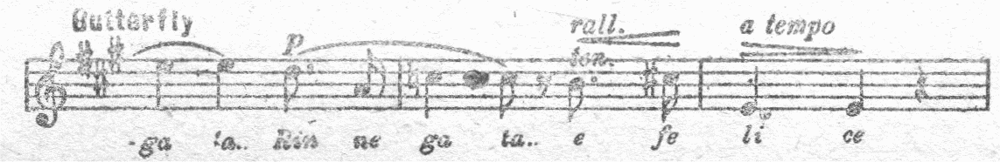

［＃ページの左右中央］
第一部
［＃改丁］
一 リリー・レーマンに憧れて
ドイツへ行ってリリー・レーマンについて歌の勉強をしようと思って三浦政太郎と一緒に横浜を出帆したのは、一九一四年（大正三年）五月二十日のことでした。
私は非常に船に弱いので船の中ではずっと寝通しでしたから、香港に着きました時はほっと致しました。それにイルミネーションが綺麗でしたので、余計に明るい気持ちになりましたが、ここでお船は一晩お休みしたのでやっと元気を取りもどしました。
お船が香港に着く前の晩のことでした。私は生まれて始めて洋服を着ようと思って三浦に話しましたら、
「日本の婦人が洋服を着ると、胴が長くて足は練馬大根のように短く、まことにみっともない。船中では着物を着ていて、向こうへ着いて、どうしても洋服を着なくてはならなくなるまで洋服を着るのはお待ちなさい」
「だって私は、まだ一度も洋服を着たことがありませんから、向こうへ着いてから始めて着るのではよけいみっともないと思いますの、だからお船の中で着馴らして少しでも着かっこうの良いようにしておきたいのよ」
「向こうに着いてから、西洋の婦人の着方をよく見習った方が良い。船中で妙な癖でもつくとその方がよけいみっともない」
「いいえ、妙な癖なぞつけません。一日でも着馴らした方が良いと思いますのよ」
私は洋服を着ることを強く主張いたしましたところ、
「今から夫にさからうようでは、末恐ろしい」
と三浦はおこりました。私はそんな気で申したのではありませんでしたが、この船中の洋服事件が生まれて始めての夫婦喧嘩でした。
さて香港に着きましたところ、ペストが流行いたしておりましたので、同船の児玉さん、あの有名な児玉大将の息子さんはじめみなさん上陸なさいましたが、三浦も私もペストが恐いので上陸せず、広い食堂で二人きりで食事をいたしました。淋しい晩餐でした。
ポートサイドに着きますと、オーストリアの皇太子様が、セルビアの青年に殺されたというニュースを聞かされてびっくりいたしました。この前の大戦の前奏曲だったのです。ポートサイドでは、有名な
七月九日マルセイユに着き上陸しました。大きな馬が車を曵いて何台も何台も、とても数え切れないほど通ったのが強く印象に残っておりますが、その沢山な数よりも馬が大きいのでびっくりいたしました。私たちはマルセイユから汽車に乗って、リヨンを通って憧れの都ベルリンへ着いたのが七月十一日でした。
ベルリンでは、シャーロッテンベルグのフラウ・ドクター・スミスさんのお宅に下宿して、三浦はカイゼル・インスティテュートへ入って勉強を始めました。ここには田丸博士が働いていらっしゃいました。
私も早速リリー・レーマンに歌を教えて頂こうと思ってお訪ねしましたところ、ちょうど夏のお休みでリリー・レーマンは田舎へ避暑に行っていてお留守なので、秋にお帰りになるまで待つことにして、下宿で自分でピアノを弾きながら歌の勉強をしておりましたが、このお宅にお茶に来るお客様たちが、あなたの声は非常に美しい、と褒めてくれますし、また、道を歩いているととても素晴らしい歌が聴こえて来るので、窓ぎわへ行って立ち止って聴き惚れたが、その声の持主はフラウ・ミウラ、あなただったのか、と褒めて下さる方もあって、外国へ来て、まだ先生について勉強をしない前から、大勢の方に褒められて本当に嬉しゅうございました。
こうしている間にも戦争がだんだん身近に迫って来ましたが、とうとう開戦になりました。すると私の下宿の前には消防署がありましたが、そこの消防夫が全部兵隊に代ってしまったし、私が逢う女の方はみんな泣きながら、「とうとう戦争になってしまった、ドイツは敵に囲まれているから大変だ」といったり、「私の夫は出征するが戦死をするのが心配だ」とか、大騒ぎでした。そして毎日毎日、往来を沢山な兵隊が行軍していましたが、足を揃えてパッパッと歩くのを見ると非常に強そうに見えました。
私が往来を歩いていると、見ず知ずのドイツ人が「あなたは日本人だろう。日本は国はちっちゃいがロシアを負かした大変強い国だ、世界で指折りに強い日本はきっとドイツの味方になってくれるに違いない。日本がドイツの味方になってくれたらドイツはきっと勝つ」といって、なかには抱きついてキッスをする人さえありました。けれど私は、日本がイギリスと同盟を結んでいるので、もしもイギリスがドイツと戦争をするようになったら、日本はイギリスの味方をしてドイツと戦争をしなければならなくなるだろう、そうしたら私達はどうしたらいいのかしらと、心配で心配で、夜もおちおち眠れませんでした。
この心配はすぐ本当になりました。イギリスがドイツに戦争を始めました。ドイツ人が私ども日本人を見る眼が違って来ました。殊に子供の
こうした心配の最中に、ドイツの社交界で羽振りのいいある夫人から、ドイツの戦争に
ステーションに田丸博士は見えましたが、自分はドイツに残っているといわれるので、私たちは田丸博士に見送られてベルリンを出発いたしました。それは私たちがベルリンに着いてから一ヶ月のちの八月十四日でした。この汽車には前田侯爵、こないだ南方で戦死された前田大将ですが、前田侯爵や林銑十郎大将なぞ日本人が百名ほど乗っていて、後で
オランダの国境を越えたのは夜中の十二時でしたが、うす暗いステーションに降りた時にはほっと致しました。これで助かったとは思いましたが、それでも日本がドイツと戦争をすることをドイツ人に感づかれては大変だと、お互に話をするのも声を低めてひそひそ話をするといった有様で、ステーションのうす暗いのも手伝ってなかなか緊張した、薄気味の悪い気持ちで一杯でした。けれどいい
やっとのことでロンドンに着きましたのが八月十六日で、スコットランド人のおかみさんの下宿に落ち着きました。
ロンドンも戦争でひっくり返るような騒ぎです。学生はみんな志願して兵隊になりました。私の下宿の息子も大学生でしたが兵隊を志願して出征しました。ロンドンの往来も兵隊の行進で一杯でしたが、ドイツの兵隊が大きな、がっしりした体格で、グーステップでタッタッタッと歩調をとっているのに較べて、ロンドンの兵隊はひょろひょろしていて、歩き方もドイツの兵隊より元気がないので、こりゃあイギリスの方が
［＃改ページ］
二 サー・ヘンリー・ウッドのテスト
私はドイツへ行って、教わろうと憧れていたリリー・レーマンに逢えないで、戦争のためドイツを逃げ出してイギリスへ来たものの、さて誰に歌を教えて頂こうかといろいろ考えた挙句、イギリスの生んだ世界的な大指揮者ヘンリー・ウッド卿にコーチをして頂こうと考えまして、ヘンリー・ウッド卿に手紙を出しました。
「私は日本の婦人でございます。歌を勉強したいと思いましてロンドンに参りました。私は日本で政府のつくりました東京音楽学校を卒業しています。どうぞ歌を教えて下さいますようお願い申し上げます」
という意味の手紙を書きました。
手紙を出して返事がきょうは来るか、明日は来るかと待っていましたが、なかなか参りません。一ト月待ちましたが返事がないので、ひょっとしたら手紙が途中で紛失したんじゃないかと思って、もう一度手紙を書きましたが、それでも返事が来ないのでがっかりしました。情けなくなりました。実はサー・ヘンリー・ウッドに歌を教わることは、テストを受けて落第したらみっともないので、日本大使館の大使井上勝之助侯爵にも、大使の奥様にも内緒にしていました。三浦にさえ内緒で誰にも相談もしなければ打明けもせず、自分一人でやったことなのですが、二度も手紙を出したのに梨の
そしてもう一度手紙を出して、それでも返事がなかったら歌の勉強はあきらめて、お料理を勉強して、それをお土産に日本へ帰ろうかと悲壮な決心をしました。それといっしょに、イギリス人は非常に保守的な人種である上に、いろいろと格式がやかましく、紹介状もない見ず知らずの者、
すると今度はすぐ返事が参りました。ちょうどそれは金曜日のことでしたが、来週の火曜日に伴奏者をつれてクインス・ホールで歌をうたってお聴かせなさい、というお手紙が来たのでした。私は夢かとばかり躍りあがって、その手紙を読み終るや否や、手紙を持ったまま下宿のお内儀さんの部屋へとび込みました。
「私は来週の火曜日に、サー・ヘンリー・ウッドの前で歌をうたうことになりました」
「なんですって、サー・ヘンリー・ウッドの前で歌をうたうのですって？ あの世界で一番偉い指揮者の前であなたがうたうんですか、そりゃ大変なことですが、一体どんな歌をうたうんですか」
「もう二タ月も前から何をうたおうか考えているんですが、私は一番自信のあるのはオペラ『リゴレット』の中でヒロインのジルダがうたう『慕わしき御名』ですから、それをうたおうかと思っています」
「オペラの詠唱をうたうんですって、駄目々々。そんな古臭い歌なんかうたっても誰も喜びませんよ。うたうんなら『ギブ・ミー・ユア・キッス』をおうたいなさい」
といってさっさとピアノの蓋をあけ、「接吻してよ」という流行歌を自分で弾きながらうたい出す始末なんです。私はこんなお内儀さんに話をしても、とうてい音楽の相談相手にはならないと、あきれてしまって黙ってしまいました。それでも伴奏者をつれて来いということですが、伴奏者の知り合いがないので、止むを得ずお内儀さんに相談すると、伴奏者なら立派な音楽家を知っているからと、下宿につれて来たので、ピアノを弾いてもらったら、まるで小学校の唱歌の先生程度なのでがっかりしてしまいました。そして良い伴奏者がいないために、歌のテストに落第したらどうしようかと、今度はそれが心配になってしまいました。
その翌日の土曜日に、社交界の花形のスエスリング夫人のお宅でお茶の会があり、私も招待されていたので参りました。このお茶の会にはメリー内親王様がおいでになるというので、ホステスのスエスリング夫人は長い立派な緑色のお召物の上に
このお茶の会に、昔ドイツで活躍した、オペラシンガーのアンナ・レクナーという有名な音楽家が招待されて来ていましたので、私はアンナ・レクナーに、来週の火曜日にクインス・ホールでサー・ヘンリー・ウッドに歌のテストをして頂くことになっていますが、ピアノの伴奏者がなくて困っています、という私の最大の悩みをお話しましたところ、曲目は何をうたうのですか、という質問、歌劇「リゴレット」のアリア「慕わしき御名」をうたいます、とお返事したら、それなら伴奏は私がしてあげましょう、と気軽におっしゃって下さったので、有名なアンナ・レクナーが伴奏をして下さる、地獄で仏とはこのことではないかと私は有頂天になって喜んでしまいました。
ヘンリー・ウッド卿から指定された火曜日の午後一時、私はピアノ伴奏を引受けて下さいましたアンナ・レクナーと二人でクインス・ホールへ参りました。ロンドンの代表的な、いいえ世界的に有名なこの演奏会場の午後は、夜の豪奢な装いが余りにもきらびやかであるだけに、妙に寂しいものでございました。客席には誰もいず、電灯もついていないので変にうす暗く、ただステージのピアノのあるところだけが電灯で明かるいのです。
私は次の瞬間に私の運命が決まるのだ。世界的に有名な大指揮者に歌のコーチをして頂けるかどうかが、これからうたう歌によって決定するのだと考えますと、胸がどきどきいたしました。しかし祖国を遠く離れて、日本の、しかも女の身で、この大音楽家の前でうたうということは、単に私一人だけの問題ではなく、日本の音楽界の、もっと大きくいえば世界の一等国の仲間入りをした日本ではありましたが、文化の方面では何一つとして一等国の資格を持っていなかった日本の面目のためにも、このテストにはどうしても及第しなければならない、とこう考えましたので、気持ちを落ちつけてステージに立ちました。
「あなたの支度が出来たらうたって御覧なさい。曲目は『慕わしき御名』でしたね」
ウッド卿のこの言葉を待って、私は精一杯の力を出してうたい始めました。ウッド卿は客席の向こうの方のうす暗い所で私のうたうのを聴いていらっしゃいましたが、私の歌が進むにつれてだんだんステージの方に近づいて来られ、とうとうステージに上って私のすぐ傍でじっと聴いて下さいました。そして私がうたい終わりますと、
「マダム三浦、あなたの歌は素晴らしいものです。世界的なプリマドンナであるメルバと同様の素質を持っています。カルベに較べても決してひけを取らない。完全なそして美しい素質と音楽の技術を持っています。私にはあなたのように、ほとんど完成した声楽家に歌を教える力はありません。あなたはこれから自分自身で勉強して、あなたの芸術のオリジナリティを発揮して下さい。もう一度いいますが、マダム三浦、あなたは本当に素晴らしい音楽家です。実に見事な『リゴレット』を聴かせて下さって有難う」
私はサー・ヘンリー・ウッドのこの批評を、一言、一言、肝に銘じて聴きました。夢ではないか、自分は本当にヨーロッパ第一流の音楽家と肩を並べる程の歌がうたえるのかしら、ウッド卿はお世辞をいっているのではないかしら、いいえ、社交界の席上ならお世辞をおっしゃったかも知れない、けれどここは誰もいない厳粛な試験場である、そして私の伴奏を弾いて下さったアンナ・レクナーはヨーロッパ一流の音楽家である、その音楽家の前でお世辞をおっしゃる筈がない。私は本当に音楽の力を持っていたのだ。私はこれから私の持っている力を十二分に出して、ミウラ・タマキでなければ出来ないオリジナリティを発揮するように必死に勉強しさえすれば、欧米の音楽界で名を成すことが出来るのだ、とこう考えますと嬉しくて嬉しくて、ウッド卿に真心をこめてお礼を申上げました。伴奏を弾いて下さったアンナ・レクナーも大変喜んで、私にお祝いのお言葉を下さいました。私も真心を籠めてお礼を申上げました。
さて、この私の歌のテストをサー・ヘンリー・ウッドの傍で聴いていらっしゃった、ふとった大きな女の方がおいででしたが、この大女は当時イギリスの海軍大臣で、今度の第二次世界戦争中イギリスの総理大臣をしていたチャーチル氏のお母さんでした。赤十字社が主催する
「あなたは、日本が生んだ最初の立派な音楽家です。私はきょうあなたにお目にかかり、あなたの大変御立派な音楽を聴かせていただいたことを大変幸福に存じます。実は来月二十四日に、アルバート・ホールで音楽会を催すのですが、それに是非御出演下さい。そして何か日本の歌をうたって下さいませんか」
幸運は次の幸運を招く、と申しますが、こんなに早くロンドンで音楽会に出演するチャンスが来ようなんてまるで夢に夢見る心地でした。
そこで私は持っていた楽譜鞄の中から「さくらさくら」と「ほたる」の楽譜を取出しまして、ここに日本の歌の楽譜を持っていますがとお目にかけますと、ウッド卿が自分がピアノの伴奏をするからうたって聴かせて下さい、とおっしゃいました。私は早速うたいました。すると日本の歌は非常に美しい、と褒めてくださいました。そしてアルバート・ホールで是非これをうたって下さい、というお話でした。その上そのアルバート・ホールの音楽会には、アドリナ・パティもおうたいになるということもお話になりました。アドリナ・パティが私と同じステージで歌をうたう。私はびっくりしてしまいました。なぜかと申しますと私は上野の音楽学校で、音楽の歴史の時間に、一九世紀の歌のクインとしてアドリナ・パティのことを習ったのですから、「パティ時代」をつくった大プリマドンナのアドリナ・パティは歴史上の人物だとばかり思っていました。その大音楽家がまだ生きているのだ。お年を訊ねましたら七十二歳で、まだまだ大変なお元気だということでした。
私はどこをどう通ったのか、無我夢中で大使館に転げ込みました。そして大使の井上侯爵の奥様にいきなりかじりついて、
「私、私、泣いています！」
「あーらまあ三浦さん、またからいソーセージを食べさせられたんですか」
大使の奥様が、からいソーセージで泣かされたのかとおっしゃるのには訳があるのです。スコットランド人の下宿では毎朝塩ッからい、それこそ口の曲がるほど塩のきいているソーセージを出すのです。私は余り塩辛いので、咽喉に
「いいえ違います」
といってまた泣いてしまいました。
「一体どうしたんですか」
「私、うたうんです」
「えッ？」
といって、ストーブの傍で大声で泣きくずれてしまいました。
大使の奥様は、私がうたうんです、うたうんですのといって泣いているので、音楽の勉強がうまくゆかないので頭がへんになったのではないかと心配されたそうですが、そのうち私もだんだん落ちついて来たので、クインス・ホールでサー・ヘンリー・ウッドに歌のテストをして頂いたところ、意外にもヨーロッパ一流のプリマドンナにひけをとらないと褒められてびっくりした上に、チャーチルのお母さんから、私がまだ見たこともないアルバート・ホールの音楽会に出演することを依頼されて夢中になった、またその上に、歴史の人物になっているとばかり思い込んでいた、十九世紀の歌の女王、アドリナ・パティと同じステージでうたえることを聴かされて、気ちがいのようになって喜んでしまったので、この私の夢にも考えなかった幸運を、一刻も早く大使の奥様にお知らせしようと思って駆け込んで来たことを詳しくお話し申上げました。すると大使の奥様も驚いて、それは大変なことだ、あなた個人の名誉だけではなくて日本の名誉だと、我がことのように喜んで下さった上、アドリナ・パティがどんなに偉く、どんなに素晴らしいかをお話して下さいました。
アドリナ・パティは、頭の上から足の先きまでダイヤモンドがぴかぴかと光っている。いつもイギリスのキングやクインの御陪食をしている。だから私にも、音楽会の当日は日本の音楽家を代表する意味で、ロンドンにある日本のお振袖で一番立派なものを着て、ダイヤモンドを飾りつけてお出なさい、というようにいろいろと細かいところまで気を配って下さいまして、山崎総領事の奥様とも相談され、私の髪は三井物産の南條支店長の奥様が結って下さること、お振袖は大使の奥様のはすこし地味だから、山崎総領事の奥様のを拝借することになりました。
ところで私のロンドンにおけるデビュウにはどうしても解決しなければならない難問題が一つ残っていました。それは私のうたう曲目のことで、私が一番自信のある歌劇「リゴレット」をうたうことを、レディ・チャーチルがどうしても承知しないのです。それというのは「リゴレット」はパティのお得意のものなので、パティに遠慮して、私にうたってはいけないというのです。私は、私の一番得意のものだし、デビュウのことだしするので、どうしてもうたいたいのです。
そこである日の夕方、レディ・チャーチルを訪問しました。するとレディ・チャーチルは黒のレースのソワーレーを着ていらっしゃる。海軍大臣のチャーチルもスモーキングで出ていらっしゃいました。
これを見て私はハッといたしました。なぜかって、私は朝の着物を着てお訪ねしたんですもの。大体イギリスは伝統を重んじ、格式を
私が、「どうぞ歌劇『リゴレット』をうたわして下さい」とお願いすると、レディ・チャーチルは「あなたは日本のプリマドンナなのだから、日本の歌をうたって下さい」とおっしゃるばかりで、どうしても歌劇「リゴレット」をおうたいなさいとはおっしゃらないのです。私がいくらお願いしても許しては下さらないのです。でもこれで引下がったんでは、朝の着物の恥をしのんでまで、お訪ねした甲斐がないので、これは歌劇「リゴレット」をうたってもよいとおっしゃるまでは
［＃改ページ］
三 ロンドン初出演
一九一四年（大正三年）十月二十四日、この日が私のロンドン初舞台の思い出の日でございます。私は髪を結っていただくため、朝早く三井物産の南條支店長のお宅に伺いますと、奥様はあなたのお髪がうまく結えるかどうかが心配で心配で、昨夜は寝られませんでした、とおっしゃりながら、髪を結って下さいましたが、何度やっても気に入らないと見えて、結っては解き、解いては結いして、とうとう朝の九時から午後の二時まで五時間もかかってしまいました。私は奥様には悪いと思いましたが、アルバート・ホールの初舞台より、この南條さんの髪結さんの方がよっぽど
この音楽会は前にも申上げましたように、赤十字社主催の恤兵音楽会ですので、キング・ジョージ五世とクイン・メリーを始めプリンスとプリンセス、それに大臣や政府の高官連、各国の大公使がおいでになって、ロンドン空前のお祭騒ぎ、二万三千名を入れる客席には聴衆がぎっしりつまっているという大変な盛況でした。出演もオーケストラが三百人でコーラスが一千人という、イギリスの楽壇始まって以来の大掛りな音楽会でございました。
いよいよ私がうたう番が参りました。これがヨーロッパに来てからの初舞台ではありましたが、上野の音楽学校に在学中から私はいつも独唱をしていましたから、ステージに立っても別にアガリもしなければ、恐ろしいとも思わず、非常に落ちついて、ただあらん限りの力を出して、日本の名誉のためにも立派にうたおうと、澄み切った気持ちでスーッとステージに出ました。
このアルバート・ホールの建物はちょうど両国の国技館のように、四方に高く客席が出来ていて、二万三千人の聴衆がぎっしりつめかけていました。正面が国王席になっていて、純白のアーミンの
ステージの私の後には、三百人のオーケストラと白いユニホームを着たコーラスが一千人並んでいました。指揮者はサー・ヘンリー・ウッドでございます。
私は歌劇「リゴレット」で、主役ジルダがうたう、有名なアリア「慕わしき御名」をうたい、大喝采を浴びました。次に日本の歌「さくらさくら」と「ほたる」を日本語でうたいました。今度は伴奏はハープとフルートが主でしたが、その数が大変です。ハープが五十何台もずらっと並びましたが、金色のハープと銀のフルートが沢山並んだところは、見た眼も非常に豪華でしたが、それにもましてその音のよさといったら、何ともいえない惚れ惚れするものでございました。そしてハープがまるで日本のお琴のような音が致しますので、箏曲「さくらさくら」にはもって来いの伴奏でしたが、この沢山な数のハープとフルートの伴奏は今もなお耳の底に幻のように聴こえ、私が今まで何千回となくうたった演奏会の伴奏の中で、一番気に入ったものでございました。
私はうたい終っておじぎをし、アンコールの拍手に、何度もおじぎをしてさてステージを去ろうとして驚いてしまいました。私の身体は花束で埋まってしまったのです。花の中を泳ぐようにして楽屋に入りますと、黒のレースのお召を着た中肉中背の四十歳位の美しい女の方が、いきなり私にかじりついてキッスをするじゃありませんか。私はキッスをされて驚いて、ボウッとしていますとその女の方が、
「マダム三浦、あなたがこんなにまで素晴らしくうたおうとは想像も出来なかった。大変立派な歌を聴かせて下さって有難うございました」
とおっしゃるのです。この女の方がアドリナ・パティだったのです。私はパティにキッスされた上に、口を極めて褒められたので、嬉しくてお返事も出来ず、ただ泣くばかりでした。涙に
歴史に残る、十九世紀の歌の女王といわれるアドリナ・パティはこの時七十二歳だといいますから、お婆さんでそしてツンと威張っているものだと想像していました。それが現にお目にかかるパティは、せいぜい四十歳位にしか見えない若さを持った、美しい
この日アドリナ・パティはアンコールに「ホーム・スイート・ホーム」をうたいました。楽屋でパティは、「私は歳をとりすぎたからもうよくはうたえない」とおっしゃいましたが、この「スイート・ホーム」を聴いているうちに心が
これが本当の「スイート・ホーム」の美しさだ。私は死物狂いの勉強をしても、一生かかってもこのアドリナ・パティの芸術の境地には到達出来そうもない、とすっかり敬服いたしましたが、それ以来私は、今もってステージに立つ度ごとにアドリナ・パティをお手本にし、歌をうたうことの恐ろしさを痛感しております。
私はアドリナ・パティの歌を聴きましたのはこの時たった一度でございますが、本当に一生の教訓を得ました。それまで私は歌をうたいますのは、フォルテとピアニッシモが上手に出ればよいと思ってうたっていましたが、それ以来、楽曲の音には一つ一つそれぞれの意味を持っているのだから、その意味をちゃんと現さなければいけない。音の意味を現すことが出来なければそれは、音楽家ではなく、魂を持たない人形同様である。音楽の演奏には音楽家の人格と愛情と誠意とが必要である、ただ単に
昨年（昭和二十年）、私は山中湖畔の平野から旭ヶ丘に引っ越しました時、荷物を整理しているうちに、思い出のロンドンでのデビュウのプログラムが出て来ましたから、それをお目にかけましょう。このプログラムは朝日新聞の杉村楚人冠さんが、亡くなられるちょっと前に私に贈って下さったもので、楚人冠さんは、私がアルバート・ホール初演の時、朝日の特派員でロンドンにいらっしゃっていましたが、私の初演のことを新聞に電報をうって下さったので、朝日によって私のロンドンでのデビュウが大成功だったことが、日本に報道されたのでした。
このプログラムは白い厚い紙に印刷された、薄い本の体裁になっています。表紙には「愛国大演奏会」として次の順序で出演者の名前が書いてあります。
マダム・アドリナ・パティ
マダム・ミウラ（日本のプリマドンナ）
ミス・キャリー・タップ
ミス・フィリス・レット
ミスター・チャーレス・モット（ローヤルオペラ、コヴェントガーデン）
ミスター・ジョージ・パーカー
ミスター・プランケット・グリーン
ローヤル合唱団 指揮フレデリック・ブリッジ卿
クインスホール管絃楽団 指揮ヘンリー・ウッド卿
近衛軍楽隊連合吹奏楽団 指揮マッケンジーローガン楽長
オルガニスト ミスター・バルフォア
ピアノ伴奏 ミスター・スゥエル
マダム・ミウラ（日本のプリマドンナ）
ミス・キャリー・タップ
ミス・フィリス・レット
ミスター・チャーレス・モット（ローヤルオペラ、コヴェントガーデン）
ミスター・ジョージ・パーカー
ミスター・プランケット・グリーン
ローヤル合唱団 指揮フレデリック・ブリッジ卿
クインスホール管絃楽団 指揮ヘンリー・ウッド卿
近衛軍楽隊連合吹奏楽団 指揮マッケンジーローガン楽長
オルガニスト ミスター・バルフォア
ピアノ伴奏 ミスター・スゥエル
演奏曲目は次の通りですが、歌曲には歌詞が印刷してあり、また私は日本語でうたいましたので、ローマ字の歌詞とそれを英訳致しましたものを並べて出してあります。
演奏曲目
１ 吹奏楽 序曲「ブリタニア」
Ａ 「ドレークス・ドラム」
Ｂ 「デヴオン・オウ・デヴオン」
「希望と栄光の国」
「フォール・イン」
７ 独唱 マダム・アドリナ・パティ
「恋の悩み知るや君」 歌劇「フィガロの結婚」より
Ａ 「さくらさくら」
Ｂ 「ホタル」
９ 詩の朗読と合唱 ミスター・パーカー
「戦いに寄す」
「ゼアース・ランド・アリスン」
11 軍歌 「イツア・イング・ウエイ・トウ・ザ・テイペラリイ」
12 連合国国歌 吹奏楽
ロシア、ベルギー、日本、フランス
「ルール・ブリタニア」
「ゴッド・セーブ・ザ・キング」
［＃改ページ］１ 吹奏楽 序曲「ブリタニア」
マッケンジー作曲
２ 独唱 ミスター・グリーンＡ 「ドレークス・ドラム」
Ｂ 「デヴオン・オウ・デヴオン」
以上スタンフォード作曲並に伴奏指揮
３ 合唱 「イット・カムス・フロム・ザ・ミスティ・エージエス」エルガー作曲
４ 独唱 ミス・レット「希望と栄光の国」
エルガー作曲
５ 独唱 ミスター・モット「フォール・イン」
エルガー作曲並に伴奏指揮
６ 吹奏楽 「愛国音楽集」７ 独唱 マダム・アドリナ・パティ
「恋の悩み知るや君」 歌劇「フィガロの結婚」より
モーツァルト作曲
休憩
８ 日本の歌 三浦環（ロンドン初演）Ａ 「さくらさくら」
Ｂ 「ホタル」
９ 詩の朗読と合唱 ミスター・パーカー
「戦いに寄す」
作詩 アルフレッド・ロード・テニソン
旋律 エミリー・レディ・テニソン
編曲 フレデリック・ブリッジ卿
10 独唱 ミス・タップ「ゼアース・ランド・アリスン」
11 軍歌 「イツア・イング・ウエイ・トウ・ザ・テイペラリイ」
ジャッジ作曲
特に希望により演奏、独唱ミスター・モット、合唱付き、吹奏楽伴奏12 連合国国歌 吹奏楽
ロシア、ベルギー、日本、フランス
「ルール・ブリタニア」
「ゴッド・セーブ・ザ・キング」
四 私の「蝶々さん」を生む
アルバート・ホールでの私のロンドン初演、と申しますよりヨーロッパでの初演につきまして、ロンドンの新聞は筆を揃えて「マダム三浦はロンドンの楽壇に最初に登場した日本のプリマドンナだが、メルバやカルベにひけをとらぬ美しい声と素晴らしい芸術の持主である。今シーズンはマダム三浦が最大のホープとして楽壇を
その中にマンチェスターのフィルハーモニーからも出演して下さいという依頼のお手紙が参りまして、演奏料はいくら欲しいか、ということも書いてありました。それを見て私は驚いてしまいました。だって私は、ヨーロッパにうたいに来たのではなく、何とかして日本で一番の音楽家になろうと思いまして、音楽の勉強に来たのですから、ヨーロッパの音楽会に出演して演奏料を貰おうなんてことは、夢にも考えていませんでした。
ですから私はそのお手紙を持って大使館に行き、井上大使の奥様に相談いたしました。すると大使の奥様も私の演奏料はいくらにしてよいかお判りにならない、いろいろ調べた結果、アドリナ・パティの演奏料が
――マダム三浦は世界にたった一人しかいない日本のプリマドンナだから、演奏料が一万ドルでも二万ドルでも決して高過ぎるとは思わない。だからあなたの要求する五千ドルを差上げたいのであるが、今は戦争をしている。戦時中はパティもカルーゾーも平和の時の演奏料の四分の一である二千五百ドルにしている。だからあなたも三百ドルで承知をして頂きたい。その代りホテルその他マンチェスターの代表的なのを支度して置く、もちろん三百ドルは米貨で差上げる――
ということが書いてありました。五千ドル要求したのが三百ドルにガタ落ち、パティやカルーゾーは戦時中四分の一なら、私にも四分の一で千二百五十ドルくれればいいのに、と情けなくは思いましたが、もちろん私はお金のために歌をうたうのではありません。私が持っている力を一杯出してうたうから、私の所へお金が入る、私がうまく歌をうたって欧米の人が喜んで下さればそれだけ私の名誉であり、私の名誉は文化、殊に音楽の上で日本という国がちっとも欧米に知られていないのが知られる、日本の音楽、日本の文化の名誉になるのですから、三百ドルで喜んで出演することを承諾いたしました。そしてマンチェスター・フィルハーモニーもサー・ヘンリー・ウッドの指揮で、歌劇「リゴレット」や日本の「さくらさくら」などをうたって非常に成功いたしました。
このようにして私は一躍有名になったもんで、下宿のお内儀さんが有頂天になり、逢う人ごとに私の自慢をしていましたが、それだけでは満足せず、ロードメーヤー
「皆さん、私が一緒につれて来た日本人が有名なマダム三浦です。アルバート・ホールでキングやクインの前で、サー・ヘンリー・ウッドの指揮で日本の歌をうたった有名なマダム三浦です。マダム三浦は私の家にいます。私は音楽についてマダム三浦にアドバイスをしています」
と私をだしにして、自分の虚栄心を満足させてうるさくてかないませんでした。音楽についてアドバイスをしているということも半分は嘘で、サー・ヘンリー・ウッドにテストをして頂く時に流行歌をうたいなさい、なんて余計なお節介をしたのです。だがたった一つだけアドバイスとコーチをしてくれました。それはスコットランドのお祭日に、音楽会でスコットランドの民謡をうたうことを頼まれました。御存知の方がおありでしょうし、また穂積重遠博士の御本に書いてありますからお読みになった方がおありのことと思いますが、スコットランドの
とにかく私が有名になるにつれて、下宿のお内儀さんは家に私がいることを自慢してうるさくてたまらない。その上スコットランド人は
新しい下宿はメーダーベル街のミセス・マドンというイタリー人の家でして、三浦と二人で二階の一室を借りました。この頃は私が方々の音楽会に出演して、お金には困らなかったのでもっと上等な下宿に入れたのですが、この家には、お船で一緒だった児玉さん、三菱の社長の田中さん、穂積重遠さん、京都大学の総長をされた濱田耕作さん等日本のお友達が大勢いらっしゃったので、それで引越したのです。それは私がアルバート・ホールで初演した翌年の一九一五年のことでした。
この下宿で先ず私を喜ばせてくれたのはイタリー料理でした。マカロニやスパゲッティは殆ど毎日のように出ますし、ポルペッタとか［＃「ポルペッタとか」は底本では「ボルベッタとか」］ラビオーラという素晴らしくおいしい御馳走が出て、前のスコットランド人の下宿で毎朝塩辛いソーセージと、毎晩のように出る紙のように薄いローストビーフ責めの憂鬱さを、綺麗に追払ってしまいました。ポルペッタと［＃「ポルペッタと」は底本では「ボルペッタと」］いうお料理は肉、パン粉、パセリ、人参を刻んで作ったコロッケのようなものでして、ニンニクで味をつけ粉チーズを沢山使った、それはそれはおいしい御馳走だし、ラビオーラは鶏の肉とホウレンソウをあんこにしてお
このイタリア風の御馳走にも増して、この下宿で私がとても喜びましたのは、歌劇「イリス」の勉強でした。このオペラは「お蝶夫人」と同じく、プッチーニが日本を題材にして作曲したものですが、非常にむずかしいので並大抵の音楽家には完全にうたえません。ことにテナーの歌が難しくて、「イリス」を三年うたうとテナーは声をつぶしてしまう、テナーの命取りのオペラだとさえいわれまして、滅多に上演されませんが、日本を題材にしたオペラですから、私はどんなことをしても勉強しなくちゃあいけないと思いまして、必死になって勉強していますと、同じ下宿にいらっしゃった濱田博士が、この方はイタリー語がお上手な上に専門が文学なので「イリス」はどういう風に解釈してうたったらいいかということ、即ち大変神秘的な物語だから、歌も神秘的にうたわなくてはいけない、とおっしゃって教えて下さいましたし、また私がオペラ歌手として一番必要な語学イタリー語を教えて頂いて、それが後に到るまで、今日までも非常に役に立って大変有難かったと、思い出すごとに感謝しております。
翌一九一五年の三月の末か四月の始めのある晩のことでした。私の下宿に恐ろしく長い大きな自動車が着きまして、マダム三浦にお目にかかりたいというお客様がおいでになったので、二階の応接室にお通ししてお目にかかると、男のお客様はウラジミール・ロージンというロシアの有名なテナーで、女のお
私は前にもお話した通り、アルバート・ホールで初演以来、方々の演奏会には出ましたが、歌劇の主役をやるのは始めてなので、うまく出来ればいいが、もしやり損なったら恥をかく、けれどこんな夢のようなチャンスは二度とは来ない、どうしたものだろうと三浦に相談しますと、こんないいチャンスはまたとないから必死の勉強をしておやりなさい、と申します。折よく、私になにくれとなくアドバイスして下さるアーノルド夫人が訪ねていらっしゃって、日本の蝶々さんを描いた「お蝶夫人」をあなたがやるのは、こんな強味は誰にも真似が出来ない、あなたはきっと成功するから、心配なんかしないでお引受なさい、と激励して下さったので、私はロージンに、承知しましたとお引受いたしました。
そこで、いつやるのですか、と尋ねましたら、五月三十一日を初日に五回出演してくれというお頼みです。五月三十一日までには一ヶ月以上あるので歌の練習をするゆとりはあるのですが、なにしろ私は「お蝶夫人」をまだ一度もうたったことはないし、それに歌劇場で「お蝶夫人」を観たこともございません。ですからロージンにそのことを話して、誰にコーチして頂いたらいいでしょうかと尋ねましたら、ロージンが、
「マダム三浦が一度も『お蝶夫人』をうたったこともないこと、ほかのプリマドンナのオペラを観たこともないということ、これはあなたにとって素敵な幸運です。幸にもあなたは日本人だから、蝶々さんの気持ちは、他のどんな偉いプリマドンナでもあなた以上にはわからないし、わからないからうまく表現も出来ません。またあなたが他のプリマドンナの蝶々さんを観ていないことは、あなたの蝶々さんのオリジナリティが傷つけられていないことです。あなたは歌も演技も工夫して、マダム三浦独特の蝶々さんをつくり出して下さい。そうすれば世界一の『お蝶夫人』のプリマドンナといわれる、イタリーのストルキオとアメリカのファラー以上の評判をとることも、必ずしも夢ではないだろう」
と、こういわれるのでした。
私独特の「お蝶夫人」を、私自身の工夫と努力でつくり出す、そして勉強と、音楽に対する情熱、誠実をもってすれば世界一の「お蝶夫人」のプリマドンナになれる可能性もある、これは音楽に志した私に、神様が恵んで下さった賜物である、そうだ、私は石に
その翌日から勉強を始めました。リコルディ版の「お蝶夫人」は三百六十二頁ありましたから、毎日十頁ずつ暗記することにきめて、お庭のベンチに腰をかけて一生懸命に暗記しました。暗記が出来るとお家へ入ってピアノを弾いて練習いたしました。イタリー語の発音は同宿の野上俊夫博士に教えていただきました。こうして毎日十頁ずつの暗記で、とうとう全曲をすっかりソラでうたえるようになりましたので、今度はロンドン・オペラハウスに行きまして、伴奏を頼んで練習いたしまして、歌はすっかり出来あがりましたが、歌劇は音楽とお芝居との総合した芸術であります。
オペラシンガーが歌を上手にうたうことはあたりまえのことですが、問題はお芝居です。シャリアピンのように、お芝居もうまくなくては第一流の歌劇歌手とはいえません。「お蝶夫人」の振付けをどうしたらよいか、このことは歌の暗記を始めた時から、いろいろと考えました。昼間は歌の勉強で頭が一杯ですから、夜寝てから考えました。その結果、私は三歳の時から藤間流の踊りを習いましたので、踊りの手振りをいろいろ取入れて、それを音楽に合わせ、綺麗に織込んで、一通りの振付けを考え出しました。けれど最後の幕で、屏風の蔭で短刀で自害して、目かくしをした愛児の傍ににじり寄るところは、どうもうまく出来ないので、ちょうどロンドンに居られた曽我逎家五郎の奥さんのお雪さんに、私の振付けを直していただきました。これで振付けも出来あがりました。何といっても「お蝶夫人」の音楽が非常に美しく、よく出来ていますので、音楽に合わせさえすれば、心も体も自然に動けるのです。殊に最後の自害してからのくだりは、お雪さんのおかげで、音楽さえ演奏し出せば、タ、タ、タ、タともう自然に足が進むようになりました。
音楽は覚えたし、振付けも出来あがりましたが、まだ一番肝心なものが残っています。それは、蝶々さん、マダム三浦の蝶々さんをどういう風にやったらよいか、難しくいいますと蝶々さんの性格描写ですが、これをはっきりとあらわしませんと、仏造って魂入れずで、魂のない歌劇ならやらない方が気が利いている。歌劇だけでなしに、一般の歌もそうですが、魂のない歌ならうたう必要がないのです。そこで今度は蝶々さんの性格描写を考えました結果、第一幕では十五歳の子供ッぽい蝶々さんを、第二幕第一場では十八歳の蝶々さんが夫の帰りを待つこまやかな愛情を、そして最後の第二幕第二場では、愛児と別れて自害する蝶々さんの子別れの悲しみと、母性愛を現すように工夫して、貞淑で愛情のこまやかな日本婦人の美点を欧米の人々にお知らせすることも考えました。
しかしこれはあくまでも気持ちの問題でありまして、もともと外国人が想像で物語を書き、それを外国人がところどころに日本音楽のメロディを取入れて、天才の頭から流れ出る音楽を作曲したものですから、私がいくら気張って、純日本式にやっても、それはオペラ全体としっくり合いません。日本人の気持ちと姿をオペラに調和させねばなりません。そこで例えば、帯も丸帯を日本風にしめると西洋人にはセムシに見えるというので、平たくむすぶとか、結婚の式場も原作では庭の芝生の上でやり三三九度の盃などはもちろんありませんが、これは出来るだけ日本の風俗習慣を紹介したいと思って、蝶々さんの式服に白いウチカケを着て三三九度の盃をするとか、いろいろと工夫いたしました。
こんな風にいろいろ苦心して一通り出来上がりましたので、今度は歌の仕上げにかかりました。毎日のようにオペラハウスに行って、伴奏をつけて練習いたしましたが、普通誰でもオペラの練習の時は小さな声でうたわないと声をつぶしてしまうものですが、私はいつもフルヴォイス、即ちありったけの力を出して精一杯に、本当のステージ同様にうたいました。それを聴いてロージンが心配して、今からそんなに声を出すと本当のステージに出た時に声が出なくなるから、練習の時はもっと小さい声でおうたいなさい、と注意してくれるのです。それで私も小声でうたい出すのですが、うたっているうちに心が入って、いつの間にかフルヴォイスになって、本当のステージでうたっているようになってしまいました。
こんな風に練習を積んでいるうちに五月三十一日の私の初舞台の日が参りました。
［＃改ページ］
五 「お蝶夫人」初舞台
日本のプリマドンナが、日本を題材にした「お蝶夫人」をロンドンで初めてやる、というので非常なセンセーションを起し、一九一五年（大正四年）五月三十一日のロンドン・オペラハウスは超満員でした。私の相手役、米国海軍士官ピンカートンになるテナーはパリのグランドオペラのラフィット、米国領事シャープレスになるのはジュリアン・キムベル、女中お鈴になるアルトはイダ・サガールが主役で幕があきました。私は精一杯の力を出して一生懸命うたいました。私が工夫した、十五歳の初々しい蝶々さんになって、私が工夫した通りにお芝居をしました。第一幕は済みました。オペラハウスが割れるような大きな大きな拍手を浴びました。
第二幕第一場があきました。十八歳の新妻蝶々さんは、恋しい夫ピンカートンはきっと帰って来ると、自信をもって「お蝶夫人」の中で一番有名な詠唱「或る晴れた日に」をうたいました。
オペラは進行いたします。米国領事のシャープレスが、ピンカートンの手紙を持って訪ねて来ます。だが蝶々さんのピンカートンに対するこまやかな愛情を知った領事は、ピンカートンが本国で結婚したという知らせを告げるに忍びず、そのまま帰ります。
そこへお鈴が、周旋人の五郎が蝶々さんの愛児の悪口を触れまわるのを怒って、五郎を引張って来ます。蝶々さんは我子の悪口を云われたので床の間の刀を抜いて五郎を追いかけます。
蝶々さん「もう一度いって御覧
（お鈴は子供を連れて奥に入る）
行け
（五郎は逃げてゆく、蝶々さんは刀を拾いあげながら子供のことを思い出す）
可愛いい坊やよ
ただ一人のまな児よ
ああ、今に汝がために遠くから
坊やの仇打ちに帰ってくるわ
（お鈴は子供を連れて奥に入る）
行け
（五郎は逃げてゆく、蝶々さんは刀を拾いあげながら子供のことを思い出す）
可愛いい坊やよ
ただ一人のまな児よ
ああ、今に汝がために遠くから
坊やの仇打ちに帰ってくるわ
と、ここで、ピンカートンが乗っている軍艦リンカーン号の、長崎入港の合図の大砲が一発なるのです。で、私がこのくだりをうたい終ると、同時に大砲がドーンとなりました。続いてまた一発大きくドーンと鳴りました。おやッと思いましたが、なにかの間違いだと思って、そのまま私はうたいつづけました。望遠鏡で長崎の港を見ながら、
蝶々さん「白い星！アメリカの旗のしるしよ
あら！錨をおろしているわ
あら！錨をおろしているわ
するとドーン、ドーンと
蝶々さん「――あの方は帰ったわ
みんながいってたわ
帰らぬ人を私が待つと
今こそ恋に勝ったのよ
今こそはあの方は来たわ
みんながいってたわ
帰らぬ人を私が待つと
今こそ恋に勝ったのよ
今こそはあの方は来たわ
ここでお鈴と一緒に庭に出て、桜の木をゆすぶって「この桜をゆすって、花の雨を身に浴びて」とうたうためにお鈴の方を向くと、お鈴がいないじゃありませんか、どうしたのかしらと思ったとたん、またも激しくドーン、ドーンと大砲の釣瓶打ちで、客席もからっぽ、オーケストラボックスもからっぽ、広い舞台に私一人しかいない。こりゃ変だと思った時、誰かが「マダム三浦、早く逃げないと殺される！」と叫んでいる声が聞こえました。
ドイツのツェッペリン飛行船のロンドン初空襲だったのです。
私の初舞台にロンドンの初空襲、私は「お蝶夫人」初演も出来たのだ。声楽家としての一生の念願が叶ったのだから、晴れの初舞台で死ぬのなら、芸術家の本望だと思いましたが、がらんとしたオペラハウスの中に、たった一人取残されてみると急に怖くなって楽屋に逃げ込み、フト窓から空を見ると、ツェッペリン飛行船がサーチライトを浴びて、まるでダイヤモンドのブローチのように暗空に光っています。そのまわりを高射砲の弾が破裂するのがピカッ、ピカッと光ります。ツェッペリンは悠然と向こうへ飛んで行きます。オペラハウスのすぐそばに高射砲の陣地があるので、大砲の音が耳許でいたします。向こうは空襲で大火事が起きています。生まれて始めて見る空襲、恐さも恐かったが、見事なことも見事で、両国の川開きの花火を見物した時より何十倍の綺麗さでした。しかし、ロンドンのように石や煉瓦で出来ている家が、爆弾のためにあのような大火事になるのだから、木で造ったお家ばっかりの日本が、もしも空襲されたら大変で、東京は一晩のうちに焼野原にされてしまうだろうと考えましたら、怖しくて胸がドキドキいたしました。
不幸にも、私のその時の心配が三十年後に本当になって、東京も大阪も名古屋も焼野原になってしまいました。私の麹町の家も去年の五月二十五日に丸焼けになりましたが、私は山中湖畔に疎開していましたので、私の宝物の「お蝶夫人」のお振袖も、楽譜も、みんな無事でした。そして私も、空襲で恐い思いをしたのは二度ですみました。最初がこの「お蝶夫人」の初舞台の日の空襲、最後が去年の七月十二日の空襲の時でした。
この時は日比谷公会堂で「音楽五十年史」の演奏会に出て下さいと頼まれましたが、東京へ行っても麹町のお家はないし、帝国ホテルに泊まるのは恐いのでどうしようかと困っていますと、この演奏会を主催する吉本明光さんが、僕の家は多摩川のそばで、空襲があっても安全な所だから、僕の家にお泊りなさいとおっしゃったので、山中湖畔から混雑する汽車や電車を、何度も何度も乗換えて吉本さんのお家へ行きました。尾山台という所で多摩川はすぐそばだし、まわりに森や畑があって景色もいいし、ここなら安全だと安心してお泊りしたら、その夜中に大空襲、多摩川の向うでサーチライトを照らすと、Ｂ29が銀色に光る。高射砲はドンドン打つ、そのうちドローン、ドローンと爆弾の音がする。そのたんびにお家がビクビク震え今にも頭の上に爆弾が落ちそうで、命が縮まるほど怖い思いをしましたが、ロンドンの時と同じ、別に怪我もせず無事だったのでホッといたしました。
余談に流れましたが、私の「お蝶夫人」の初舞台はロンドンの初空襲のためその晩は二幕目の半分でおしまい、私は三浦と二人で闇の中をはだしで歩いて下宿まで逃げ帰りました。電車も自動車も、一切の交通機関が止ってしまい、馴れぬ真暗なロンドンの闇の街を歩いているうちに、ハイヒールの靴をはいていたので足が痛くて歩けなくなったので、ハイヒールを脱いではだしで歩いたのでした。
しかし私の「お蝶夫人」は大変な評判をとり、イギリス中の新聞に書きたてられ、特にロンドン・タイムスは「ワンダフル・シンガー」だと褒めて下さったので、私の「お蝶夫人」は海を渡ってニューヨークの新聞までが書きたてる騒ぎになり、ロンドン・オペラハウスの出演も五回の約束が十五回も出てロンドンでのレコードを作りました。そのうち、世界一のオペラハウス、ニューヨークのメトロポリタン・オペラハウスのマネージャーのラビノフから電報で、アメリカへ来てうたえと旅費一千ドルを送って来ました。私はどうしたものかと三浦と相談しました。三浦はロンドン大学で勉強していましたが、その頃は毎晩十一時過ぎになると決ってツェッペリンが空襲に来るので、落付いて勉強も出来ないし、それに空襲で怪我をしたり死んだりしてはつまらないので、二人でニューヨークへ行くことにきめたのでした。
［＃改ページ］
六 世界無比の「蝶々」さん
三浦と私を乗せたお船は、ドイツの潜水艦の出没する大西洋を無事に渡ってニューヨークに着きましたので、三浦も私も、やれやれこれで助かったとほっといたしました。
私は潜水艦が怖しかったのではなく、生れつきお船に大変弱いので、お船に酔って、小間物屋の開店のしどうしで、それに弱ったのです。［＃「弱ったのです。」は底本では「弱ったのです、」］三浦も船酔で青瓢箪みたいに真青な顔をしながら、二人で上陸すると、いや大変な騒ぎなんでびっくりしてしまいました。ニューヨークにいらっしゃる日本人が総出でお出迎いして下さったのです。始め私はどなたか、日本から偉い方が私どもの乗って来たお船でおいでになって、そのお出迎えかと思っていましたら、皆さん私を迎えに来て下さったのでした。お出迎いの中村総領事からお話を伺いましたら、実はロンドンの井上大使から、この船で三浦環がニューヨークに着くから、在留日本人総出で出迎えをするように、三浦環はロンドンのアルバート・ホールでキングやクインの御前演奏をした上、歌劇「お蝶夫人」をうたって、日本の国威を非常に高めた国賓的な大音楽家だ、三浦環の歌は日本の大公使が何人束になってもかなわぬほど、国民外交の威力を持っているから、非常に丁寧に待遇をするように、という訓令が電報で来たので、ニューヨークにいる日本人全部を誘って出迎いに来た、とおっしゃいました。私は井上大使のお心尽しの有難さに思わず泣いて、そしてお出迎い下さった皆様に心からお礼を申上げました。
そこへ世界一のオペラ劇場、ニューヨークのメトロポリタンのマネージャーのマックス・ラビノフが、私の伴奏をするピアニストを始め大勢の方と一緒にやって参りまして、めいめい私の手にキッスして挨拶をしました。それを見てお出迎い下さった中村総領事を始め、日本の皆様もラビノフにならって、私の手にキッスをして下さいましたが、なかにはいやいやながらキッスをされた方もあったようです。何しろ日本では今もって芸術家はちっとも尊敬されませんが、欧米では芸術家は大変尊敬され、殊にアメリカでは女が尊敬される国ですから、私はアメリカ人から二重に尊敬され、それをアメリカにいるおつき合から、日本人もいやいやながら、形だけは音楽家三浦環を尊敬して下さったのでした。そして新聞にも、日本のプリマドンナ・マダム・タマキ・ミウラ以下誰々がアメリカに上陸した、と報道されましたので、以下誰々にされたお役人や偉い人達の中には、三浦環は女の癖に生意気だ、と思った方があったらしいのです。けれど新聞記事は私が書いた訳ではないから、私にそういわれても困るのです。
それはさておき、このお出迎いの御挨拶が一通り済むと、マネージャーが私に耳打ちをするのでした。
「あなたの傍にいるチョビ髭をはやしている紳士があなたの夫のドクター・ミウラですか？あの鼻の下の髭は至急剃り落してしまうように、あなたから命令していただきたい。アメリカではあんな髭をはやしているのは黒ン坊ばっかりだから、あの髭はあなたの人気に
私はマネージャーが三浦のことにまで干渉するのはうるさい、迷惑千万なことだと思いましたが、契約をした以上は契約期間はマネージャーのいう通りにするより他に仕方がないと思って、みんな承諾して三浦にも訳を話して承知して貰いました。
このマネージャーのラビノフは非常に利口な人物で、輿論の国アメリカにおける私の名声に、ちょっとでも傷がつくと大変だ、それにはニューヨークで私の声を聞かせ、万一悪評でも立つといけないからというので、波止場から真直ぐ停車場につれて行って、私をシカゴへ行く急行列車「二十世紀」に乗せてしまいました。私は「二十世紀」が走り出してびっくりしてしまいました。速いの速くないのって、本当に目がまわりそうになりました。もともと乗物には弱いところへ、船酔がやっと癒ったと思ったら、今度は目のまわりそうな速さで、十分とたたぬうちに気持ちが悪くなって来ました。そんなことにお構いなしで、この列車のサービスは誠に至れり尽せりで、私のコンパートメントには女中がしょっちゅう用をききに来る、マヌキュアー・ガールがやって来る。けれど私は気持が悪くて爪磨きなぞうわの空でした。するとマネージャーが心配して、どうしましたか、と尋ねましたので、私が汽車に酔ったことを話しますと早速寝台車のベッドを用意してくれましたので、私はやっとほっといたしました。それ以来私はアメリカではいつも寝台車に乗るようになりました。
ニューヨークからシカゴまで「二十世紀」で一晩かかるのですが、食事は食堂車でやり、寝台車には運ばないことになっていたのですが、食堂車に行く元気はなし、さりとて絶食したんでは声に障るといけないというので、私だけ特別に寝台車に食事を運んで貰い、やっとシカゴに着きました。
シカゴに着くと、すぐシカゴ第一のホテルであるオーディトリアム・ホテルに落付きました。私はそのロビーを見てびっくりしました。まるで銀座通りみたいに沢山の人々が往来しているのです。私は二部屋から出来ている立派なコンパートメントに入って着物を着換えていますと、マネージャーがミセス・マドンという、白い髪の、英国式教養を持つアメリカ婦人を私のコンパニオンにつけてくれました。私のおつきの小間使なのです。
一休みしたいほど疲れていましたが、それは許されませんでした。シカゴの市長を始め社交界、音楽界の名士、雑誌、新聞記者等を招いた、日本の蝶々さんをアメリカに紹介するパアティの時間が私を待っているのでした。私はホテルの大食堂に参りました、長い長いテーブルに、大勢のお客様がいらっしゃる。今度の戦争の始まる前にアメリカに行った来栖大使は、その頃シカゴの総領事をしておられましたが、来栖さん御夫妻もおいでになっていました。私はこんな大勢のお客様を、私が主人役になって大宴会をしたのはこの時が始めてだったので、嬉しいのと、どうしたらお客様がお歓びになって［＃「お歓びになって」は底本では「お歓びになて」］下さるか、そのお相手のしように心配やらで、胸がわくわくいたしました。その上新聞記者は私にいろいろと質問する、そのお返事もなかなか難しいのです。私が困るとマネージャーが助け船を出してくれたので、宴会は大成功に終りましたが、その席上でアメリカの流行語を知らないために大
その翌日、マネージャーが法律家をつれて、私のオペラの契約書を作りに参りました。私は法律のことはまるで知りませんし、それに当時は英語も、こみいった話になると不自由でしたので、総領事の来栖さんにお願いして来て頂きました。三浦も後から追駈けて参りましたので、例のチョビ髭で坐っていました。いよいよ契約の相談が始まりました。いろいろと面倒なことばかりです。私は気に入らぬ条件を持ち出されると、イエスともノーともいわず黙っていました。いつまでもいつまでも黙っていました。するとマネージャーがしびれを切らすのか、私の希望する通りにかえてくれるのです。この時くらい雄弁は銀、沈黙は金なり、の格言を身に泌みて［＃「泌みて」はママ］感じたことはありませんでした。そして契約は全部私の希望する条件で出来上って、私は署名をいたしました。世界一のオペラハウス、ニューヨークのメトロポリタンと覇を競うシカゴ・オペラカンパニーと一年に百回「お蝶夫人」をうたうこと、一回の出演料は一千ドルというお約束なのです。一年間に十万ドルの契約が出来たのでした。
アメリカでの私の「お蝶夫人」の初演はシカゴのオーディトリアム・シアターで行いました。この劇場は私の泊っていたオーディトリアム・ホテルと廊下でつながっているので非常に便利でした。私の相手役のアメリカの海軍士官ピンカートンになるテナーはリカルド・マルティンといって、アメリカで人気のあるオペラシンガーでした。マルティンはアメリカ最大のプリマドンナで世界三大「お蝶夫人」歌手の一人、ゼラルチン・ファラーの相手役をつとめ、その当時世界中で愛読されましたビクターレコード会社出版のオペラブックに出て来るテナーでした。私のシカゴでの「お蝶夫人」の初演は大成功でアメリカ中に大変なセンセーションを巻起こして、カリフォルニアはもちろん遠くカナダやハワイまでも私の名声が鳴り響き、方々から引張凧で、今お話しても嘘だと思われる位、私の「お蝶夫人」を観たいという要求が激しく殺到いたしました。
それはさておき、シカゴでの初演ですが、この時、世界一の舞踊家といわれましたアンナ・パヴロヴァもやはり私同様シカゴのオペラ・カンパニーと契約していました。パヴロヴァは日本にも参りましたから、パヴロヴァの素晴らしい舞踊を御覧になった方が沢山おいでだと思いますが、このパヴロヴァが私の「お蝶夫人」の済んだ後で踊りました。サンサーンスの音楽による「瀕死の白鳥」は世界一の舞踊だと大変な評判をとりましたが、この時もこの「瀕死の白鳥」を踊っていました。私が「お蝶夫人」をうたい終って楽屋へ帰ろうとすると、パヴロヴァが舞台裏で私のオペラの終るのを待ちながら、横木につかまって足をあげたりさげたり、一生懸命ウオーミングアップをしています。いつの時でもこの練習をやっていて、しかもちっとも休むことなしに、右の足を、左の足をあげたりさげたりしています。私は感心してしまいました。パヴロヴァのように世界一といわれる名人も、舞台に出るすぐ前までこんなに一生懸命に練習をする、さすがに世界一といわれる名人は違ったものだと感心をしたり、また非常な教訓を学びました。
ある日私はシカゴの社交界のお歴々が集ったお茶の会に御招待されまして、いろいろと私の「お蝶夫人」について批評やら感想を伺いました。ある夫人は
「あなたの「お蝶夫人」は私が観たオペラの中で最も感銘の深いものでした。あなたの蝶々さんの印象を永久に私の瞼のなかに残しておきたいので、パヴロヴァの舞踊が邪魔になりました」
とおっしゃいました。またある夫人は、
「アメリカの海軍士官が日本に行って、蝶々さんのように純情で貞淑な婦人に悪いことをしたとは誠に申訳ありません。ピンカートンのような男はアメリカの男のうちでの例外で、多くのアメリカの男はあんな悪いことはいたしませんから、誤解しないで下さい」
と涙を拭き拭き私にあやまられました。またある夫人は、
「蝶々さんが可愛い子供と別れて自殺してしまった。お気の毒にどうしようと思った瞬間、アンコールの拍手に蝶々さんが起きあがって、ニッコリ笑っておじぎをしましたので、私は自分自身が生き返ったように嬉しくなりました。」
とおっしゃいました。
またシカゴでの私の「お蝶夫人」の批評が遠くニューヨーク・タイムスに掲載されました。それには、三浦環は世界一の名女優サラベルナールに匹敵するドラマティック、アビリティを持つ素晴らしいプリマドンナである、と褒めちぎって下さいました。数年後のことですが、矢張りニューヨーク・タイムスに「シャリアピンの『ボリスゴドノフ』と、アンナ・パヴロヴァの『瀕死の白鳥』とマダム・ミウラの『お蝶夫人』は［＃「『お蝶夫人』は」は底本では「「お蝶夫人」は」］世界無比の、優れた特徴を持った芸術である」という批評が出まして、私は非常に嬉しくなり、この批評に応えるために更に勉強しようと、一生懸命にうたい続けました。
私のシカゴでの「お蝶夫人」の初演は一九一五年（大正四年）でしたが、それから一九三〇年（昭和五年）まで十六年間、ずっとアメリカを中心に「お蝶夫人」をうたいつづけました。アメリカは主としてニューヨークに住んでいましたが、最初はホテル・マカルピン、次にホテル・アンソニア、それからアスターホテル、ルーズベルトホテルと、ニューヨーク一流のホテルに居りました。こうしたニューヨークで一流ホテルの生活が出来たのも、日本のプリマドンナだったからだと、今も当時を思い出して感慨に堪えません。
［＃改ページ］
七 陸軍長官夫人と兵隊慰問演奏
一九一八年（大正七年）は非常に思い出の深い年でございました。この年はこの前の戦争が終った年でございます。今度の戦争にくらべますと、世界中の人間の犠牲は小さかったのですが、当時としては、なかなか大変な犠牲でして、日本にも参りました、ヴァイオリンの世界的名人クライスラーは、兵隊になって塹壕の中で戦争をしました。
アメリカで絶大な人気を持ったプリマドンナのシューマン・ハインク、この人は晩年日本にも来ましたし映画にも出ましたから、よく御存知のことと思いますが、そして皆さんはシューマン・ハインクは当代一のリード・シンガーだと思っておいでのようですが、リード・シンガーになったのは晩年で、最初はオペラシンガーだったのです。歌劇だけ百五十曲もうたったという、行くところとして佳ならざるはなき名人でしたが、その芸風は地味な、その代り手堅い歌手でした。十七才の時にオペラにデビュウしましたが、それは「トロヴァトーレ」の老婆アッチェーナだったんです。十七才の少女が老婆役をやって大成功したことが、彼女の地味なことを物語りますが、これは性質だけでなしに、声もコントラルトで、それも低い声だったのでソプラノのような華やかさがなかったためです。御承知のように、オペラの華やかな主役はみんなソプラノとテナーで、アルトやバリトンが主役のオペラは珍しい、アルトが主役で活躍するのは「カルメン」ぐらいのものです。
シューマン・ハインクは地味だったがアメリカではひどく人気があり、また権威がありました。お茶の会などでうたう時も、ピアノ伴奏なぞではうたわない。アメリカ一のニューヨーク・フィルハーモニック交響楽団の伴奏でなければうたわない、だからシューマン・ハインクにうたってもらうのは莫大なお金がかかるのですが、ニューヨークの社交界では競争でシューマン・ハインクにパーティでうたってもらうといった有様でした。
大体シューマン・ハインクなんて複数の名前は珍らしいのですが、それは一生のうち三度結婚したからで、最初がシューマン夫人、次がハインク夫人、そこでシューマン・ハインクと［＃「シューマン・ハインクと」は底本では「シューマン、ハインクと」］名乗ったのでした。三度目はラップ夫人となったので、この伝でゆくとシューマン・ハインク・ラップと名乗らなければならぬ理屈ですが、そうは名乗りませんでした。
三度も結婚したので、シューマン・ハインクには七人の子供がいましたが、そのうち三人はドイツで兵隊になり、四人はアメリカで兵隊となって、兄弟同志が敵味方になって戦争をした。シューマン・ハインクはそれをとても悲しがっていました。
ボストン交響楽団の指揮者カール・ムック博士も、よくお目にかかって親しくおつき合いしていましたが、ワグナーものの指揮にかけては世界一で、またドイツの有名な指揮者で「バトンの魔術師」といわれたニキッシュの後を継いで、ボストン交響楽団を世界的なオーケストラに仕上げたムックも、楽譜のなかにいろいろスパイしたことを書き込んで本国へ送る、といった噂がたち、一九一八年の三月捕って戦後とうとうアメリカから追放されてしまいました。
こうして音楽家は戦争のためずいぶん苦労しました。直接戦争に行かず、夫や兄弟や子供を戦争に出さなくても、アメリカでは戦争中は一切ドイツ語を使うことを禁止されていたので、ドイツ音楽を得意にする声楽家はずいぶん困りました。特にワグナーの楽劇を得意とするオペラシンガーは、ワグナーを英語に翻訳してうたわねばならなかったが、ワグナーの楽劇はドイツ語でうたわないと本当の味が出ないので、ワグナーシンガーはみんな大弱りでした。このようにドイツ語をうたう音楽家はみんなちいちゃくなって手も足も出なかったのが、戦争が終ってほっと一息し、世の中が急に明るくなりました。
戦争が終る少し前のことでした。私はウイルソン大統領のお嬢さんの声楽家がよく兵隊さんの前で歌をうたって兵隊さんを慰めていましたので、私も歌をうたって兵隊さんを慰めよう、ちょうど石井大使の奥様がヴァイオリンを弾くから、石井さんの奥様と一緒に兵隊さんを慰めるコンサートを催そうと考えついて、石井さんの奥様にお手紙を書きました。
「アメリカの兵隊さんを慰める音楽会をいたしたいと存じます。幸いあなたは上野の音楽学校でヴァイオリンを勉強され、なかなかお上手だからヴァイオリンを弾いて下さい。私は歌をうたいますから」
というお手紙を差し上げました。すると返事が参りました。
「私は音楽会など致す所存無之此段御断り申上候也」
まるで借金の断り状みたような、とてもひどいお返事なのです。私は音楽会に出演することがそんなにいやしいことだと思われたことが、口惜しくて口惜しくて泣き伏してしまいました。しかし私は兵隊さんを慰める音楽会は是非やろうと決心し、アメリカの陸軍長官ニュートン・デイ・ベーカーの奥様がピアノが上手だということを聞きましたから、早速お手紙を差上げました。するとすぐお返事が参りました。
「兵士を慰める音楽会を催したいという御希望は何と恵み深いお考えでしょう。マダム・ミウラの高い芸術を兵士にお恵み下さるという御好意に対してお礼の申上げようがございません。私は心から喜んであなたのお手伝いをいたします」
そして是非一週間ワシントンの自分の家に賓客として来て頂きたい、ワシントン駅にハート大将夫人と一緒にお出迎えしますからという、丁寧な御招待をうけました。石井大使の奥様のお返事とこのベーカー陸軍長官の奥様のお返事とをくらべて、私は泣いて喜びました。そして日本の偉い役人が音楽や芸術に対してちっとも理解を持っていないのが情けなくなってしまいました。私はお手紙を頂いた翌日ワシントンへ参りました。
駅にはお約束通りベーカー夫人とハート大将夫人がお出迎えになっており、私は自動車でベーカー夫人のお客様になりましたが、お宅に着くと御門のところへペギーとジャックとメリーの三人のお子さんがお出迎えしていました。その晩の御飯の後で私はすっかり感心してしまいました。それは御飯が済むとベーカー夫人と子供さんがみんなでピアノを弾いて歌をうたうなごやかさ、日本の家庭では見られない、楽しい美しい家庭団欒風景でした。この家庭音楽会が済むとベーカー夫人が一生懸命に針仕事を始めました。何を縫っているのかと伺いますと、自分の着物を縫い直して、子供の着物を作っているのだとおっしゃる、私はアメリカ人は着物の縫い直しなぞはしないもの、必要なときは百貨店へ行って買って来るものだとばかり思っていましたのに、大臣の奥様が自分で子供の着物の縫い直しをする、これは大変お見上げすべきことだと心から敬服してしまいました。また私がその晩寝るために寝室へ参ろうとしますと、夫人が十三になるメリーちゃんを呼んで、
「マダム・ミウラ、あなたが私の家のお客様になっていらっしゃる間、メリーがあなたの小間使をいたしますから御用は何でもメリーに御申付け下さい。明朝は九時にお起こしいたしますがそれでよろしいでしょうか」
とおっしゃるのです。大臣のお嬢さんが私の小間使、これにも私は敬服いたしました。そして翌朝の九時、メリーさんが私のドアをノックして
「マダム・ミウラ、九時になりました。御支度願います」
と起こしに来て下さいました。このメリーちゃんは毎日マーケットへお使いに行くのです。もっともお使いといってもテクテク歩いて行くのではなく、自動車で行くんですが、そしてまたお母さんのベーカー夫人がメリーちゃんのお使いの買物の検査が非常に厳しく、私がいる時もチーズを買いに行きましたが、品物が悪いからといって取換えにやらせられていましたが、そんな時メリーちゃんはちっとも嫌な顔をしないで、すなおにお母さまのいいつけを守っていました。
メリーちゃんの弟のジャックは十一歳の少年ですが、何でも自分のことは自分でするという習慣を
ベーカー夫人もなかなか活動家で、朝食後は方々へ出すお手紙を毎日二十通位書いてから婦人会の仕事で外出し、お昼に帰って来てみんなと一緒に御飯を食べ、午後また婦人会の仕事で出掛けるのを日課としていました。
一体アメリカでは食事の時、子供はお客様と一緒の食卓につかない習慣になっていますが、ベーカー家は別で、食事はいつもみんな一緒、そして前にお話した通り、奥様が子供の躾について特別の注意を払っていられました。私はベーカー家のお客様になって、始めてアメリカ婦人の家庭生活をしみじみと味わいましたが、この奥様は本当に偉い方だと敬服いたしました。そして日本の女もこの奥様について学ばねばならぬことが非常にあると大変によい勉強をいたしました。
私がベーカー家のお客様になった翌日の午後と夜の二回、私はベーカー夫人と一緒に兵隊さんを慰めるコンサートをいたしました。アメリカの兵隊さんですから、その中には黒ン坊の兵隊さんもいました。そして皆から非常に喜ばれました。このコンサートの後で私はある士官からお手紙を頂きました。
「素晴らしい音楽の贈物をして下さって非常に感激しました。『バターフライ』のマダム・ミウラはまるで日本のお人形さんのように美しく、その歌は天使の声のようにうるわしく聴こえました」
と褒めて下さいました。私はこの兵隊さんを慰めるコンサートで感激したのは黒ン坊の兵隊さんの前でうたった時で、私がうたいますと、黒ン坊の兵隊さんが大勢でハミングのコーラスで私の歌に合わせてうたい出すのです。一体黒ン坊のハミングは非常にチャーミングなものですが、その本場のハミングで私の歌に合わせてうたう、私はうたいながら思わずハミングコーラスの美しさに聴き惚れてしまい、こんな気持ちの良い音楽会は、今までに何度もなく、今だに大きく印象に残っています。
［＃改ページ］
八 ウイルソン大統領の所望
たしか一九一八年十一月十一日だったと記憶していますが、この前の戦争が済んで休戦条約が出来たお祝いの凱旋式が、ニューヨークのマディソン広場で行われ、ウイルソン大統領が演説をして、私にも出席してうたって下さいというお頼みでした。私はウイルソン大統領に手をとられてステージにあがり、アメリカが世界一と自慢するスーザー吹奏楽団をスーザーが指揮して、このバンドの伴奏で「スター・スパングル・バンナー」と「ホエン・ボーイズ・カムス・ホーム」とをうたいました。すると大統領始め陸海軍の大将連から兵隊さんまで大変な喜び方で、私は兵隊たちにグランドピアノの上にかつぎあげられて、握手攻めに逢いました。三千人の人々が感謝の心を籠めて私の手をぎゅっと握るのです。それで親指のあたるところにはアザが出来てしまいました。嬉しい嬉しいこの思い出のアザはいつまでも消えずに残っていましたが、奇妙なもので今度の戦争が始まる前に消えてしまいました。その時は何とも思いませんでしたが戦争に敗けた今考え出しますと、妙に悲しい気がしてなりません。
この凱旋のお祝いの時、石井大使も演説をされましたが、数日後石井さんにお目にかかった時に
「環さんの声はたいしたものだね」
「へえ、どうしてですか」
「だって環さんが歌をうたい出したら、広場のまわりの窓という窓がみんな開いて、人々が顔を出して聴いて、盛んな拍手を贈ったのに、私の演説の時は窓もあかなければ、誰も手を叩きもしない。環さんの歌はたいしたものだ」
私はこのお話を伺ってお気の毒になりました。その上石井さんはマイクロホンをお使いになったのに拘わらず、声をからしてしまい、翌日は疲れて一日お休みになったそうですが、外交官は滅多に野外演説なぞされたことがないからそれも無理からぬことと思います。私は時々野外演奏をいたしますからこんな時にもなんでもありませんでした。
お話は少し前後しますが、戦争が終りそうになった時、ワシントンにいる日本人が、戦争が終ったら日本人だけで特別なお祝いをしようと相談され、当時廣田弘毅さん、あの総理大臣になった廣田さんが大使館の参事官でワシントンに駐在されていましたが、廣田さんは三浦と一高時代にクラスメートで親友でしたし、私どもがヨーロッパに参ります時にはシンガポールにいらっしゃって、いろいろとお世話になったし、また後年私がロシアに行きましたら、廣田さんはロシアの大使をしていて非常に私の面倒をみて下さったという、不思議な御縁のある方でしたが、廣田さんがこのお祝いの世話焼きで、お祝にはアメリカで非常に人気があり、アメリカから尊敬されている三浦環に一役買って貰おう、ということになって、私に頼みにいらっしゃいました。日本のためになること、世界の平和のためになることに、なんで私が四の五の申しましょう。私は二つ返事でお引受いたしました。
当日、富士山を飾った大きな
アメリカ人の握手攻めの大歓迎は、余程のことがないと行われません。大体、何百人、何千人の人々が握手をする、それは誰かに命令されてするのでなく、何か余程アメリカ全体を感動させることがなければ行われないのです。一九二〇年（大正九年）矯風会の矢島楫子さんが九十歳の高齢で、ピースメッセージ、即ち平和のお使いとして渡米された時も全米に大変なセンセーションを起こし、大統領が
「日の丸の旗があがっていますが、どなたか、日本の偉い方が泊っていらっしゃいますか」
と尋ねたら、マネージャーが不思議そうな顔をして
「日本の偉い人？矢島さん、あなたをのぞいてこのホテルに日本の偉い人はお泊りになっていませんよ。この前、石井ランシング条約がこのホテルで出来た時には、ランシング国務長官と石井大使に敬意を表わすようにという命令があったので、日本の国旗をあげましたが、きょうは世界の平和のために、九十歳のお
と答えたそうですが、こんなに大歓迎された。そして矢島さんが汽車で旅行すると停車場は到るところ大歓迎、ウシコンシンでは、真夜中に急行列車が不意に停ったので、何か事故でも起きたのかと思ったら、矢島さんを歓迎する人々が何千人と集って急行列車を停めてしまったのでした。そして矢島さんは歓迎の握手攻めにあい、お気の毒にも、矢島さんはそのために右手が神経痛になって、亡くなられるまでなおらなかったそうです。私の握手攻めはアザで済んだからよかったが、手が動かなくなっては大変、それでも握手攻めの大歓迎は、非常に名誉のことなのです。
話は横道にそれましたが、この平和のお祝いの前後だったのですが、日本の大使館でウイルソン大統領を御招待してリセプションを催した時のことでした。私に歌をうたえという命令なので、その打合せに大使館に参りまして大使の奥様に
「プログラムはどういたしましょう。最初にアメリカの国歌をうたって、それから『お蝶夫人』の詠唱と日本の『子守唄』や『きんにやもにや』などをうたってはいかがでしょうか」
「あなたはリセプションの余興に出て貰うんですから、アメリカの国歌をうたうなんて儀式めいたことは一切いけません」
大使の奥様はまるで私を、園遊会の時の芸者扱いにして、私がコンパニオンの［＃「コンパニオンの」は底本では「コムパニオンの」］、フランス生れのエリザをつれてゆくことさえ、そんな余計なものをつれて来ては邪魔になるといって、好い顔をしないのです。けれどその時私は、日本のプリマドンナとしてアメリカ中から非常にもてはやされ、殊に五月には、世界一のオペラハウス、ニューヨークのメトロポリタンで、世界一のテナー、カルーゾーと一緒にうたい、世界的のプリマドンナとしての社会的地位が出来ていました。この社会的地位とプリマドンナの品格を保つために、私がひょこひょこ、一人で人前に出ることは出来ません。だから大使の奥様は好い顔をしなかったけれど、リセプションの当日、私はコンパニオンのエリザをつれて大使館に参りました。そうしたら、どうでしょう。ここでうたって頂戴、といわれたのは、お客様のいらっしゃるサロンではなくて、そのお隣りの誰も居ないお部屋なのです。もともと大使の奥様は私を余興の歌うたい扱いをしているんですから、欧米の社交界の慣例によって、プリマドンナをお客様に紹介する、エチケットも知ってか知らずか、お構いなしで、大統領はもちろんのこと、お客様に紹介しないで、私に歌をうたって頂戴とおっしゃるのです。私は大使の奥様のこの冷たい態度にはげしい侮辱を感じました。そして余程、歌をうたわないで帰ってしまおうかと思いましたが、ここで私が私自身の感情から帰ってしまったのでは祖国日本の恥になる、日本の恥になっては天子様に対しても、国民に対しても申し訳ない、と思いまして、とにかく大使の奥様の命令通り、誰もお客様のいないお部屋でうたい始めました。
私がうたい始めますと、どうでしょう、お客様がみんなサロンから、私のうたっているお部屋においでになり、椅子が足りないので、私のまわりに輪を描いて、立ったまま、私の歌をおききになり、一曲すむと大変な拍手です。私が「お蝶夫人」の有名な詠唱「或る晴れた日に」をうたい終わりますと、私の背中の方から
「マダム三浦、ワンダフルな『バターフライ』でした。私は感激の涙をもってききました」
と褒めて下さるので、私がその声の方に、ぐるりとふりむきますと、見知らぬ紳士が、膝を折って、私の手を頂いて、手にキッスを贈って下さいました。どなたかしらと、私がけげんな顔をしていますと、傍らにいたレディが
「マダム三浦、ウイルソン大統領ですよ」
と教えて下さいました。えッ、大統領？大統領が私の手にキッスを？そして私は失礼にも大統領にお尻を向けてうたっていた。まあどうお詫びをしたらいいだろう、私が恐縮してどぎまぎしていると、ウイルソン大統領はニコニコして
「マダム三浦、私のお願いをきいて頂けませんか。どうぞアメリカの国歌をうたって下さい」
「ハイ喜んで、大統領に敬意を捧げてうたいます」
私は昨日、大使の奥様から、国歌をうたうなんて儀式ばったことをしてはいけません、と園遊会の芸者扱いにされた侮辱なんて忘れてしまいました。それと同時に、大使の奥様に、それみたことか、と返報するなんて、ケチな考えも毛頭浮かびませんでした。私は、私の歌が大統領のお気に召した感激と、大統領から国歌を所望された、日本のプリマドンナの誇りとをもって、精一杯の力を籠めてアメリカの国歌をうたいました。
私はアメリカに十五年間いた間に、ウイルソン、ハーディング、クーリッジと三代の大統領の前で歌をうたう光栄を持ちました。そして度々
「マダム三浦、もしもあなたが四年間、この椅子に腰をかけ続けたら、アメリカも世界の国々も音楽の力で、もっともっと明るく楽しくなるでしょう。戦争なぞという悲劇も起きず、世界はきっと平和な、明るいものになるでしょうね」
といわれました。
［＃改ページ］
九 カルーゾーとメトロポリタンへ出演
私にとって非常に想い出の深い一九一八年（大正七年）で、ことに一番想い出の深いことは世界一のオペラハウス、ニューヨークのメトロポリタンに世界一のテナー、エンリコ・カルーゾーと一緒に出演して「お蝶夫人」をうたったことでございます。世界一のテナーと同じステージでうたった私の感激が、どんなものであったかは、御想像にまかせます。
けれど日本ではカルーゾーの偉さは本当にわかっていないようです。カルーゾーというと、彼が勢一杯の声を出してうたったら、劇場の窓ガラスが割れた、なんて伝説めいたゴシップが伝わっていて、声が大きいので世界一のテナーのように考えている人が相当にいますが、声が大きいだけでは世界一のテナーとはいえません。声が大きい点ではイタリーのテナー、ラウリ・ボルピの方がカルーゾーより大きかったかも知れませんが、ただそれだけなので、ボルピはイタリーでは相当な評判をとったけれど世界中の評判はとれませんでした。声が大きい点ではカルーゾーの先輩のフランチェスコ・タマーニョの方が大きかったそうです。タマーニョがロンドンのコヴェンド・ガードンでお得意の歌劇「オテロ」、このオペラはヴェルディが彼のために作曲したものですが、これをうたった時、天井に釣ってある大きなシャンデリアが共鳴振動して、その音が聴こえたとか、またミラノのスカラ座で、お得意の歌劇「アイーダ」をやった時、有名な「浄きアイーダ」という詠唱は劇場の外まで聴こえたといいますが、このタマーニョも世界一のテナーといわれましたが一九〇五年に死んでしまったので、私どものジェネレーションの間には、単に歴史の上の大テナー、として話題にのぼったに過ぎませんでした。
カルーゾーの偉さは、声量が大きかっただけでなしに、声が美しい、ビロードのように滑らかでその上甘かった、表情が豊かであった、この声量、美声、表情の三拍子揃った上に、音楽に対してひたむきな情熱を持ち、音楽に全身全霊を捧げ、音楽のためならなにものも犠牲に供しても悔いない、という点にカルーゾーの偉大さがあったのでした。
世界一のテナー、メトロポリタン出演六百回という記録を持つカルーゾーが、音楽のためには物質的の条件をなにもつけなかった、こんな偉い音楽家が、出演料になんらの条件もつけず、ただ音楽芸術にひたむきに突進するという、カルーゾーの天賦の才能と、不断の努力と、そして音楽に対する情熱、この三つのものが一つになって、カルーゾーを世界一のテナーにしたのでした。
だがカルーゾーにとって玉に
カルーゾーはナポリ人です。そして機械の職工だったんですが、声がいいのでみんなから歌手になれとすすめられたのでした。けれど先生に払う月謝がなかった。すると先生が三年間無料で教えよう、その代りお前が一人前の歌手になったら五年間お前の収入の二割五分を払いなさい、という条件を出し、こうしてカルーゾーは歌の勉強を始めたのでしたが、最初はテナーかバリトンかはっきりせず、声も決して大きくなかったそうです。そして二十一才の時、故郷のナポリでオペラの初舞台をしました。その時の出しものは、今では忘れてしまっているが、「ラミコ・フランチェスカ」というオペラでした。カルーゾーが初めてメトロポリタンに出たのは一九〇二年で、「リゴレット」の侯爵をやり一躍大テナーの人気者になったのでした。
私がカルーゾーと一緒にメトロポリタンに出演したのは、一九一八年五月二十八日の夜でした。赤十字の慈善の会だったのです。そしてオペラが済んでから記念の晩餐会がホテル・ニッカーボッカーで催されました。ちょうど私の前の席がカルーゾーでしたが、その時の御馳走にマカロニが出ました。私の前に大きなとてつもなく大きなお皿が出ましたので、どんな御馳走が出るのかと思ったらマカロニだったのです。それが大きなお皿に山盛り配られたので、私はとても食べきれず、どうしようかと困ってフト前を見ると、カルーゾーはフォークを片手に、器用にくるくるとマカロニを巻きつけて、盛んにぱくぱく食べています。そして見る間に山盛りのマカロニを平らげた上、お代りをしているのです。私はそれを見て、これは食べ残しては恥かしい。それにマカロニは声によくて、マカロニを食べていれば美しい声が出るといわれるので我慢して無理矢理にみんな食べてしまいましたが、苦しいのなんのって、今でもあの時のマカロニの苦しさを覚えています。その時のことです。カルーゾーが私に
「マダム三浦、私の声はマカロニから出ますが、あなたの美しい声は何を召上って出すのですか」
「マエストロ・カルーゾー、私の声は卵から出ます」
「卵ですって？卵をどう料理して召上るのですか」
「卵を生のまま飲みます。私が『お蝶夫人』をうたいます時は、第一幕に出る前に、舞台裏で卵を二つのみます。次の幕の時も二つのみます。最後の幕の時も二つのみます。ですから『お蝶夫人』は六ツの卵でうたうのです」
「卵を生のまま飲むんですって！しかも六ツも飲むんですって！よくマダム三浦のお腹の中で、ひよこが鳴きませんね」
生卵をのむのは世界で日本人だけ、だから生卵をのむのを不思議がったうえ、六ツものんでは多すぎると、ユウモラスで定評のあるカルーゾーにひやかされて、私はうんざりしてしまいました。それ以来私は卵を三ツに減らしました。一幕に一ツずつにしたのです。
カルーゾーはそれから四年後の一九二一年に死にました。カルーゾーはブルックリンのオペラハウスで「道化師」をうたっているうち、突然血を吐いて倒れたので、コーラスガールが驚いて駈けよって、白いハンケチを出すと、そのハンケチを真赤に染め、一枚のハンケチでは間に合ず、大勢のコーラスガールのハンケチを血に染めてしまったそうです。それ以来再起不能になり、一九二一年八月二日に故郷のナポリで死んだのでした。カルーゾーは私より十一才上だったから、死んだのは日本流に数えて四十九才だったのです。世界に二人とない、偉いテナーをこんなに若死にさせて、本当に惜しいことをしました。
私がメトロポリタンにカルーゾーと一緒に出た時、もうこの時カルーゾーは病気だったのでした。一九〇二年（明治三十五年）カルーゾーが初めてメトロポリタンに出演中に最初の血を吐いたそうですが、私が一緒に出た時も、肥ってはいましたが、その肥りかたが、ほんとうに健康にはち切れているといった肥りかたではなく、それに顔色も冴えず、身体全体に、妙な暗い影があったので、気がかりでしたが、間もなくブルックリンの舞台で倒れたときき、早くよくなってもう一度一緒にうたいたいと思っていましたが、永遠にその機会に恵まれず、残念でたまりません。残念でしたが、それと同時に、音楽家がうたいながらステージに倒れる、死ぬまで音楽と生き抜くことは、音楽家の本望で、この点カルーゾーもさぞ本望だったろうと思いました。
カルーゾーはなにをうたっても素晴らしかったが、私は歌劇「マルタ」のライオネルが一番好きでした。そして「華やかな夢の如く」の美しさは、何と形容したらよいのか、こんな素敵な歌はありませんでした。
マカロニや卵の話のついでですからつけ加えますが、私の十五年間のアメリカでのプリマドンナ生活に、私は声を美しくするため、咽喉を丈夫にして「お蝶夫人」を立派にうたうために食事には非常に注意いたしました。一般に声楽家は声を出すと非常にお腹が空きますが、殊にオペラシンガーは栄養を充分に摂らないとうまくうたえません。それで私はアメリカに居る間中は、毎朝グレープフルーツを食べ、ティボーンステーキといって、丁字形の骨付きのビフテキを食べました。おいしい上にとても分量があって、普通のビフテキの十人前位ありそうな大きなビフテキです。それからミルク・フェーデット・チキンと申しまして牛乳で飼った特別の鶏のお料理を一度に一羽食べました。グレープ・フルーツとティボーン・ステーキとミルク・フェーデット・チキンで私は「お蝶夫人」を二千回もうたいました。そのお蔭で私がはじめてニューヨークに着いた時には、体重が九〇ポンドだったのが、アメリカをさようならする時は一三〇ポンドに殖えて大変ふとってしまいました。今は、今は病気ですし、それに戦争中からビフテキや鶏なぞありませんでしたから、見るかげもなくやせちまって九貫しかありません。本当に情けなくって泣きたい気持ちで一杯です。
［＃改ページ］
一〇 パデレフスキーの機転
一九二〇年（大正九年）一月十八日、私はニューヨークのレキシントン座で歌劇「お菊夫人」の米国初演をいたしました。この「お菊夫人」というのは、明治初年、あの鹿鳴館時代に海軍士官であった、若き日のフランス文豪ピエール・ロティが、長崎滞在中の日本の想い出を描いた小説で、これが当時ヨーロッパで東洋情緒が漂っているため非常に愛読されたので、この小説をオペラに脚色、作詞し、それをフランスのアンドレ・メサァジェが四幕の歌劇に作曲したもので、原名を「マダム・クリサンテーム」といいます。そして一八九四年（明治二十七年）一月二十六日にパリーのオペラ・コミック座で初演されました。
私が「お蝶夫人」で非常に絶賛され、世界一のマダム・バターフライという評判をとったので、一九〇四年（明治三十七年）ミラノのスカラ座で「お蝶夫人」の初演をした大指揮者で、当時シカゴ・オペラ・カンパニーの主席指揮者をしていたクレオファンテ・カムバニィニが、「お蝶夫人」同様、日本を舞台にしたオペラだから、日本のプリマドンナのあなたが一番適任者だと、推薦されて、私が「お菊夫人」のアメリカ初演の光栄をもつことになったのでした。
この想い出の一九二〇年、私は米国で第一流のマネージャー・ビーハイマーと契約してカリフォルニアを巡演し、ロサンゼルスで「お蝶夫人」をうたっていた時のことでございます。有名なピアニストのパデレフスキーがカリフォルニア大学から、博士号を贈られたお祝いの式が大学の大きなホールで行われました。
パデレフスキーについては、私が説明するまでもなく皆様よく御存知のことと思いますが、ポーランドの生んだ世界的な大ピアニストですが、この前の戦争でポーランドが独立した時に、第一回の大統領に選ばれた、政治家としても大変立派な方でございます。それについて非常に有名な逸話がございます。
パリーで講和会議が開かれた時、パデレフスキーはポーランド代表として出席しましたところ、フランスの総理大臣で、「虎」と仇名をとった有名なクレマンソーが、パデレフスキーに「あなたは世界第一のピアニストであるのに、いつ政治家に成り下がったのですか」と尋ねたことは、当時世界中を賑わした話題でございました。
それはともかく、パデレフスキーに博士号を贈った式に、私も御招待されました。私が世界的なマダム・バターフライであることに敬意を表されたのと、もう一つパデレフスキーも私同様、マネージャーがビーハイマーだったという、個人的な関係もあったからです。
その日のパデレフスキーは、いつもの、頭の髪をもじゃもじゃにして、大きな黒いボヘミアン・ネクタイをせず、大学から贈呈された博士号の衣装に身を固めていました。即ち、
パデレフスキーの演奏の後で、私は「お蝶夫人」をうたいました。大変な喝采を博しまして、私は大きな綺麗な綺麗な花籠を頂きました。私は嬉しくて嬉しくて、その花籠を持って何度も何度も聴衆におじぎをいたしました。おじぎは一遍でもよかったんですが、聴衆がいつまでも拍手するので、私は何度もおじぎをしなければならなかったのです。やっと拍手が終ったので、自分の席に帰ろうとしました。私の席はステージの上でパデレフスキーのお隣に座っていたのです。するとどうでしょう、私は大変なことをしてしまったのを発見いたしました。私の持っていた花籠には水が入っていたので、私が何度も何度もおじぎをしているはずみに、その水がステージの上にこぼれて、それがどんどん流れてパデレフスキーが着ていた、博士号の立派なガウンの裾をびしょ濡れにしてしまったのでした。あらっと思わず叫んだ声に、パデレフスキーも始めて気がついて、静かに立上って水のこぼれていないところへ移りました。私はすっかり恐縮して
「マエストロ・パデレフスキー。私はどうお詫び申上げたらよいでしょう。私の粗相からあなたの大事な、そしてこの式の記念のガウンを濡らしてしまって、誠に申訳ございません。どうか私の失敗をお許し下さい」
と恥かしさのあまり真赤になって、そして真四角に恐縮してお詫びをしながら、ハンケチを取出して、しゃがんでガウンを拭こうといたしましたら、パデレフスキーはあわてて私をとめまして
「いいえ、マダム・ミウラ、あなたがあんまり素晴らしく『お蝶夫人』をうたわれたので、ガウンまでが感動し、特に最後の『子別れ』のうたは真に迫っていたのでガウンが泣いたのですよ」
私は驚いてしまいました、パデレフスキーの当意即妙のウイットに。パデレフスキーは偉いピアニストであると同時に、何て素晴らしい政治的な力を持っている人でしょう。ステージの上で、大勢の人が見ている前で、私に恥をかかせまいとこまかい心づかいをして下さった。私はパデレフスキーの偉大なピアノの芸術に感動すると共に、人間パデレフスキーの偉大さにも敬服いたしました。
［＃改ページ］
一一 プッチーニに招待されて
一九二〇年（大正九年）私はローマのテアール・コスタンチという劇場で「お蝶夫人」をいたしました。この劇場は今度の戦争でどうなったか存じませんが、その後王室劇場になってテアトル・レアーレと改名いたしましたが、この時に「お蝶夫人」を作曲したプッチーニが見物に来まして、済んでから楽屋に私を訪問して、大変に喜んで下さって、明日自分の家に来て下さい、といわれましたので私は喜んで御招待をお受けいたしました。翌日、約束の時間にプッチーニの息子のアントニオが自動車を運転してホテルにお迎えに来てくれたので、その自動車に乗ってローマの郊外、トレ湖の湖畔にあるトレ・デル・ラーゴのプッチーニの山荘へ行きました。山荘に着きますとプッチーニが奥様と子供さんをつれて玄関にお出迎えに見え、私は三十畳位の真四角なお部屋へ案内されました。このお部屋にはグランドピアノが置いてあって、それに日本製の錦のピアノ掛けがかけてある。大きな日本の花瓶には赤い綺麗な花が活けてあるし、このお部屋の調度から置物までみんな日本のものでオリエンタルな感じが漂っているので私は驚いてしまいました。そして日本のものばかりなので懐かしくもあり、淡いノスタルジアを感じました。プッチーニはグランドピアノを指さして、
「マダム三浦、私は十五年前にこのピアノで『お蝶夫人』を作曲しました。当時日本の大山綱輔公使夫人久子さんから日本の音楽を聴かして貰ったり、日本の音楽のレコードを貰い、それを土台に日本音楽『君が代』『宮さん宮さん』『越後獅子』『元禄花見踊』『高い山から』の旋律を綺麗に編込んで『お蝶夫人』を作曲しました」
と最初から「お蝶夫人」のお話が始まり、そして昨日観た私の「お蝶夫人」について
「あなたの『お蝶夫人』は私が観た『お蝶夫人』のうち最も理想的な蝶々さんでした。イタリアはもちろん、アメリカ、スペイン等のプリマドンナが大勢毎晩のように日傘を持ってステージを歩き、そしてうたいますが、みんな私の理想とする『お蝶夫人』はやってくれませんでした。プリマドンナはみんな自尊心を持って自分の歌だけを聴かせようとして、一向に私の蝶々さんの本当の気持ちを現わしてはくれませんでした。中には無闇に大きな声を出して驚かすのもいました。だがマダム三浦、あなたの蝶々さんは第一幕では十五才の子供らしい蝶々さんを素晴らしく見事に現わしてくれました。第二幕第一場では母の愛と、夫の帰りを待つ若き妻の愛情を完全に表現しました。第二幕第二場では子供と別れて自殺する日本婦人の貞淑の悲劇を驚嘆するばかりにドラマティックにやりました。あなたの『お蝶夫人』を観て、私はマダム三浦がうたっているのではない。私が心の中で描く、幻のマダム・バタフライが舞台に現われたと思いました。本当にマダム三浦、あなたの『お蝶夫人』は私の夢を実現して呉れました。あなたには他のプリマドンナのように、自惚れと自尊心のために蝶々さんの性格を現わすことを忘れている欠点がないばかりか、あなたが日本のプリマドンナであるため、日本婦人の貞淑さと日本情緒も完全に出してくれました。あなたは世界にたった一人しかいない、最も理想的な蝶々さんです」
と褒めて下さいました。私はこのお言葉を伺いまして、ロンドンで「お蝶夫人」を初演した時からアメリカからヨーロッパ、南米と千何百回と「お蝶夫人」をうたうたびごとにどうしたら蝶々さんの性格描写が出来るか、苦心をして来た苦労が始めて「お蝶夫人」の作曲者プッチーニに認めて頂いて、嬉しくて嬉しくて泣けて来ました。そしてプッチーニが単に有名な作曲家ではなく、蝶々さんの本当のお父さま、いいえ私のお父さまのような親愛な感じがいたしました。この時御一緒に撮した写真を私は私の一番大事な宝物として秘蔵しています。
プッチーニは今、支那に題材をとった歌劇「トゥランドット」を作曲中ですが、東洋情緒のある音楽を作りたいから何か日本の歌をうたって聴かせてくれ、というお頼みでした。私は何も用意して行かなかったので、何をうたって良いか困りましたが、折角のお頼みなので、子供の頃覚えた、義太夫「卅三間堂棟由来」のなかの有名な木遣唄をうたいました。
――和歌の浦には名所がござる、一に権現二に玉津姫、ようい／＼よういとな」
と、うたいますと、プッチーニは大変喜んで、その「ようい／＼よういとな」をもっと繰り返えしてうたって下さい、とおっしゃるので、繰返えしてうたいますと、プッチーニはその旋律をすぐピアノで弾き始め、やがてそれに和声をつけて弾いていましたが、だんだん「よういようい」が方々から出て来て見る間に大きな立派な音楽になりました。プッチーニは非常に作曲に感興が湧いたとみえて、もう私がいることなぞ忘れて夢中になってピアノを弾き続け、いつ終るかも知らずにピアノにかじりついていました。
そのうち夕食の時間が来ましたので私は案内されて二階の食堂に行き、食卓にすわりましたが、プッチーニはまだ「よういようい」の音楽を弾き続けています。私は作曲のお邪魔をしてはいけないから、奥様とお話をしていましたが、奥様は余り私を待たしては気の毒だと思って何遍も迎えに行き、やっとプッチーニは食卓に着きましたが、坐るや否や大変に
お夕食は奥様が心を籠めて作った御馳走で大変おいしく頂き、食後の歓談をしていますと、プッチーニの子供さんが他家から
果してそれから五年後、「お蝶夫人」を始め「トスカ」「ラ・ボエーム」等不朽の名作オペラを作曲しました偉大なプッチーニは死にました。ちょうどイタリー第一のマネージャーであるルサルディと契約をしてブラッセルに行っていましたが、持病の咳が重くなり一九二五年（大正十四年）十一月二十九日、ブラッセルで客死しました。非常に苦しんで死んだそうです。持病の咳というのは咽喉の癌だったのですが、誠に惜しいことでした。
私がこのトレ・デル・ラーゴの山荘に招待された時プッチーニはたしか六十二才の筈ですが、非常に風采の立派な方で、とてもおしゃれでした。ラテン型の情熱的な半面アメリカ風のざっくばらんな気持ちもある、とても良い方でした。私がお泊りした翌朝、お庭の散歩を案内して下さいましたが、トレの湖水を見おろした、まるで長崎の港を見おろした丘にある「お蝶夫人」の舞台画そっくりの場所でして、おまけに舞台面そっくりの日本の
話はまたもとに戻りまして私はプッチーニと「お蝶夫人」についていろいろなお話をしました。その時の記憶をたどって断片的に書き綴りましょう。
「お蝶夫人」の初演は一九〇四年（明治三十七年）二月十七日ミラノのスカラ座で、イタリーのプリマドンナであるロジーナ・ストルキオによって行われました。当時イタリーで一番尊敬されていたオペラの作曲家プッチーニの新作発表だというので、前売の切符が二万リラも売れたという大変な騒ぎでしたが、いざ開演となると、何しろ日本の旋律が編込んである音楽が保守的なミラノの人達の耳に馴染まなかったことも手伝って、第一幕が済んでも誰も拍手をしない、第二幕は恐ろしく長いのでだれてしまい、オペラは終っても、誰も拍手をしないどころかシッ！シッ！と野次が飛ぶ騒ぎで完全に失敗したのです。プッチーニの妹はボックスで観ていましたが、観客があんまり悪口をいうのでたまらなくなって卒倒をしてしまった、という嘘のようなお話もありました。またプリマドンナのストルキオは観客がちっとも拍手してくれないので、楽屋に帰って来て泣き伏してしまったところへプッチーニが入って来て、泣いているストルキオの肩を優しく抱いて
「ストルキオ、気を落してはいけない。このオペラは今夜は失敗したが私には非常な自信がある。近いうちにこのオペラは世界を風靡するだろう。このオペラの面白さが判らないミラノの観客に、私は二度とこのオペラを観せてやらない。私は宣言する。私の目の黒い
といって慰めたということです。プッチーニはそれ程「お蝶夫人」に自信を持っていましたが、元来プッチーニは指揮があんまり上手でなく、自分でもその欠点を知っていたので、次に五月二十八日プレエシアで再演する時には指揮をカンパニーニにさせたのです。カンパニーニは第二幕が長すぎるのでこれを二つに
プッチーニは私におっしゃいました。
「マダム三浦、どうぞあなたの『お蝶夫人』はオリジナリティを失わぬようにして下さい。場当りをねらわず、本当の蝶々さんの気持ちをステージに再現して下さい」
私はロンドンで「お蝶夫人」を初演以来自分自身で考えていたことをまるで符節を合わせたようにプッチーニからいわれたのでした。これまでも私は三浦環の「お蝶夫人」の純粋を保つために、他のどんな偉いプリマドンナの「お蝶夫人」も観ませんでしたが、この決心はプッチーニによってますます堅められ、そして実行を続けて参りました。だから私はまだ客席から「お蝶夫人」を観たことは一度もございません。
それはさておき、プッチーニはオペラの作曲家としては偉大であったが家庭的には恵まれず、私がお目にかかった奥様は二度目の奥様で、年齢も非常に違って若く、長男のアントニオは三十才位でしたが、この奥様との間に出来た子供はまだちっちゃく、それに奥様があんまり人気がなく、そのためプッチーニは人知れぬ苦労をしたようでした。それに前に話した通り持病には悩まされる、その上指揮が下手で、プッチーニが管弦楽を指揮すると音楽を殺し、トスカニーニが指揮すると音楽を生かす、とイタリーの音楽仲間が噂する程指揮が下手で、だからプッチーニも人間としてあんまり幸福ではなかったようです。
音楽というものは誠に微妙なもので、歌手といわず演奏家はみんなオリジナリティが必要で、同じ管弦楽団を指揮するのに、指揮者の個性によって同じ音楽が生きたり殺されたりするのです。
話が迷子になりましたがまたプッチーニのお家に戻りましょう。プッチーニは私におっしゃいました。
「私がオペラを作曲する時にどういう風にして題材を選ぶか、その秘訣を打明けましょう。私はオペラの台本は、筋が面白くて劇的効果がないものには絶対に手をふれません。『お蝶夫人』も、私はベラスコが戯曲に脚色してロンドンで大変な評判をとったので、わざわざロンドンまで観に行ったところ、私は非常に感激したのでオペラに作曲したのです。私は芝居で成功した作品でないとオペラに作曲しないことにしています」
最後に、プッチーニの思い出につけて忘れることが出来ないのは、私がトレ・デル・ラーゴの山荘に招待された時、ホテルまで自動車でお迎いに来てくれたプッチーニの息子アントニオのことです。このアントニオはその当時から自動車をいじくってぶらぶらしていましたが、お父さんが亡くなってからは自動車の商売を始めたとかいうことでした。そして私が日本に帰ってから、東京を始め日本で「お蝶夫人」をうたいますと必ずプラーゲという人が著作権のお金を取りに来る。最初プラーゲがどんな権利があってお金を取るのか判らないので断りますと、差押えをするといって脅かすのです。それならなにか証拠を持って来なさい、といいましたら今度来た時に一通の書付を持って来ました。読んでみますとプラーゲに対する委任状で、それにはアントニオ・プッチーニと署名がしてあるのでびっくりしました。そして嬉しくもまた悲しくもあった山荘でプッチーニとの一夜の思い出に耽ったこともありました。それから、さあ小十年の月日が流れてしまいました。
［＃改ページ］
一二 「お蝶夫人」の物語
「お蝶夫人」の作曲者プッチーニにお目にかかった話のついでですから「お蝶夫人」の台本は誰が作ったか、その筋書はどんな物語りかをお話しましょう。
明治十何年、いわゆる鹿鳴館時代に、若き日のフランス文豪ピエール・ロティが海軍士官として軍艦で日本を訪れ、長崎滞在中の思い出を書いたのが有名な「お菊さん」で、異国情緒に富んでいるというので非常な評判をとったので、フランスの作曲家アンドレ・メサージェがこれによって歌劇「
それはともかくとして、ロティの小説「お菊さん」の好評なのに刺激されて、アメリカのフィラデルフィアに住んでいた、法律家のジョン・ルーサー・ロング、この人の兄さんが長崎のアメリカ領事館に勤めていたときの、長崎の印象を土台にして、小説「お蝶夫人」を創作して雑誌に発表しました。それは一八九七年（明治三十年）のことで、歌劇「お菊夫人」のパリ初演三年目のことでした。
このルーサー・ロングの小説「お蝶夫人」も異国情緒に富んでいるというので大評判となり、そこでイタリー人のダビッド・ベラスコが劇に脚色してアメリカで初演したのが一九〇〇年（明治三十三年）でした。お芝居になった「お蝶夫人」は非常な人気を呼び、ついに海を渡ってロンドンにまで行き、ロンドンでも非常な評判で何十日という長期興行をしていました。たまたまロンドンにいたイタリー第一の音楽マネージャーのルサルディがこの芝居を観て、これはオペラになると感心し、すぐさまプッチーニを電報で呼び寄せて、二人でこの芝居を観たのでした。プッチーニも非常に感心し、この物語なら必ず長いオペラになると、そこでレイリカと、Ｇ・ジアコオザにイタリー語でオペラの台本を作ることを頼み、それにプッチーニが作曲したのでした。
さて歌劇「お蝶夫人」の物語は――
明治の始め、長崎港に近い肥前大村の士族の娘蝶々さんの生れながらの悲しい運命は、お父さんが蝶々さんが生れると間もなく、殿様の命令で切腹したことから始まっています。
蝶々さんは始めのうちは幸福に暮していたが、だんだん家が貧しくなったので長崎に出て芸者にされてしまいました。
蝶々さんが十五歳の春、アメリカの東洋艦隊のアブラハム・リンカーン号が長崎に寄港し、若い海軍中尉Ｂ・Ｆ・ピンカートンは、アメリカ人らしい好奇心を抱いて長崎に上陸し、旅行者の移り気と無鉄砲な若さから、可愛いい蝶々さんを見染め、周旋人のゴローに頼んで、
十五歳の蝶々さんがどうしてピンカートンの求婚を、船乗りの気まぐれからだと見抜くことができるでしょう。彼女はただもう、自分を限りなく愛してくれるこの若い美しい異国の青年の大きな腕に抱きかかえられて、悦びに震えるばかりでした。蝶々さんの悲劇はこの結婚式の場面からオペラとして始まるのです。
第一幕の幕が開くと周旋人のゴローが、ピンカートンに木と紙で出来た二人の愛の家の説明を
そこへ蝶々さんが多勢の友達を連れてやってきて、ピンカートンに身の上話をきかせ、父が切腹の時に殿様から賜わった刀なぞ記念の品々を見せた上、異国人と結婚するためには夫の宗教に入らねばならぬと教会で洗礼したことを話します。そこへお役人がきて結婚式を挙げます。式が終わった時突然蝶々さんの伯父さんのお寺の住職ボンゾが現れ、彼女が教会に行ったことを責めて勘当を申渡し列席の日本人達を連れて行ってしまいます。
春の夕闇は静かにピンカートンと蝶々さんを包みました。純情な蝶々さんは、みんなに見放なされてもあなたがいて下さるから楽しい、と悦び、女中のお鈴に着物を持ってこさせて白衣の夜の衣裳に着換えた蝶々さんの手をとったピンカートンは、「蝶々さん、美しいその眼、今、我がものよ！」と甘美な愛の二重唱を歌い出します。
第一幕から三年の月日が経ちました。蝶々さんとピンカートンの蜜のように甘い愛の巣の生活も束の間、ピンカートンは蝶々さんを残して遠く海に去ってしまいました。蝶々さんは「駒鳥が巣を作る頃にはきっと帰ってくるからね」といった優しいピンカートンの言葉を胸に抱いて待つうちに、日本の駒鳥は三度、巣をかけましたが、いとしい人は帰りません。女中のお鈴を始め、みんなもう帰ってくる筈はないといいますし、ゴローはいい旦那を持てと
そんなことがある訳がない、みんなが私の幸福を
第二幕第一場は蝶々さんの住居です。蝶々さんはふとピンカートンが残して行ったお金がどの位あるかと、お鈴にききますと、お金はもう僅かしか残っていないので、お鈴は旦那様が早く帰って下さらないと困りますと半信半疑につぶやくのですが、すると蝶々さんはピンカートンは必ず帰りますと、このオペラの中で一番有名な詠唱「或る晴れた日、彼方の遥けき海路に」という美しい歌を、自分にもお鈴にもいいきかせるように歌います。
そこへ領事のシャアプレスが訪れてピンカートンから手紙がきたことを話します。蝶々さんは、飛び上って悦び「アメリカでは何時、駒鳥が巣を作るのですか？」と真顔になって尋ねるので領事はあまりの無邪気さに話ができません。蝶々さんは、ゴローがいろいろ厭なことを申しますと、領事に訴えているところへヤマドリ公爵がやってきて何時ものように求愛の言葉をかけます、が蝶々さんは受けつけず公爵はすごすご帰ります。
領事はやっと勇気を出し、手紙を取出して読み始めました。けれど可憐な蝶々さんはその中に何が書いてあるかも知らず、手紙に接吻をしたり、一句ごとに悦んだりしてますます領事を困らせます。
領事は驚いて思わずヤマドリ公爵と結婚したらといいますと、蝶々さんは「あなたまでもそんなことを」と怒って領事に帰れという風を示しますが、思い直して次の間からピンカートンとの間に生まれた碧い眼の子供を連れてきて領事に見せ「坊やのこのママちゃんが、雨の日も風の日も」と
蝶々さんは、ピンカートンのお帰りを、この家を花で埋めて迎えようとお鈴と二人で庭の花を摘んで部屋にまきます。「この桜をゆすって花の雨を身に浴びて、香りや花弁に家を埋めよう」という有名な二重唱をうたいます。
蝶々さんはお鈴に化粧をして貰い、子供とお鈴と三人で障子に三つ穴を開けて、そこから港を覗いてピンカートンの帰りを待ちます。
春の日はとっぷりと暮れて、町の方から「舟人の歌」が混声の
領事はお鈴に蝶々さんの子供を立派に育てるために、あの夫人に渡すよう骨折ってくれといいます。ここから領事、お鈴、ピンカートンの「かかる悲しみは救うに難いが」の三重唱になるのです。ピンカートンも流石に花を撒いて待っていた蝶々さんの心情に居たたまれず、領事にこれを渡してくれと、金を渡し、この三重唱のなかでテナー歌手がよく独唱用としてうたう「さらば恋の夢、重ねし伏家！」の悔恨をこめた歌をうたい、急いで戸外へ飛び出してしまいます。
入れ違いにお鈴とピンカートン夫人ケートが入ってきました。奥から蝶々さんが、「あの方はどこ？」と出てきて思いがけぬケートを見てしまいました。一瞬にして蝶々さんはすべての事情を察したのです。領事とケートは子供のことをいいますが、子供は直接あの方に後でお渡ししますというので、目礼して出て行きました。
蝶々さんは明るすぎるからとお鈴に戸を締めさせ、心配するお鈴を無理に子供のいる部屋に追いやり、仏壇の前に膝まずき、父が切腹した短刀を取出し、鞘を払って刀に刻まれた銘を読みあげます。
「操に死ぬるは、恥のうちに生きるより、もっとましよ」
そして短刀を咽喉にあてた瞬間、子供が入って来たので刀を落し、我児をぐっと抱きしめ「お前、可愛いい可愛いい、可愛いい坊や、花よりも清い美しい坊や」と有名な子別れの歌をうたい、子供にアメリカと日本の国旗を持たせ、目かくしをして、屏風の蔭に行き見事に咽喉を突き、よろよろと我児の方へよろけ出て子供を抱き、がっくりと倒れてしまいました。その時戸外からピンカートンの「
清い恋に生きた可愛い蝶々さんの物語はここで終ります。
［＃改ページ］
一三 世界の三大「お蝶夫人」歌手
ストルキオとファラーと私と
世界の三大「お蝶夫人」歌手と折紙をつけられたのはストルキオとファラーと私でした。ロジーナ・ストルキオは一九〇四年（明治三十七年）二月十七日、ミラノのラ・スカラ座で「お蝶夫人」の世界初演をしたイタリーの偉大なプリマドンナです。ストルキオが「お蝶夫人」を初演した明治三十七年は私が上野の音楽学校を卒業した年で、私はその時二十一歳、本科を卒業して研究科に入りましたが、同時に授業補助という名前で、先生になり、山田耕筰さん達に声楽を教えて月給を十二円頂きました。今の十二円は蜜柑が五ツか六ツしか買えませんが当時の十二円は大したもので、当時日本橋の木原店の梅園、不忍池の氷月、浅草の松邑が東京の一番有名なお汁粉屋で従って値段も一番高かったが、それでいて御膳汁粉が五銭でしたから、その当時の月給十二円はずいぶん使いでがありました。
話が妙な風にそれたついでに、もう一人の「お蝶夫人」歌手で、アメリカが生んだ最初の大プリマドンナ、ゼラルチン・ファラーが「お蝶夫人」を初演したのがたしか一九〇八年（明治四十一年）ベルリンの国立歌劇場でしたが、私はその前の年の明治四十年に上野の音楽学校の助教授になり、ファラーの「お蝶夫人」初演の翌年、明治四十二年に上野を辞めて、明治四十四年に帝劇が出来、歌劇部の主任になり、「熊野」や「カヴァレリア・ルスチカーナ」等をやりましたが、その時の月給が二百円、その他に出演料が一晩五十円でした。大抵一興行が二十五日ですから、当時の私の収入は毎月千五百円位ありました。お汁粉が五銭の時代ですから千五百円のお金は大変な使いでがあったものです。
お話が妙な風にそれましたが、ミラノのスカラ座で世界で最初に「お蝶夫人」をうたったストルキオはイタリー第一といわれたプリマドンナで、「お蝶夫人」を作曲したプッチーニに非常に可愛がられたのですが、どうも運が悪く、遂に世界一のオペラの殿堂である、ニューヨークのメトロポリタン・オペラハウスに一度も出ることが出来ず、そのために世界的に有名になれず終いでした。
日本では欧米のオペラの世界のことがわからず、殊にその方面のことがわかっていなければいけない音楽の仲間で、スカラ座が世界一のオペラハウスのように信じこまれていますが、何といっても世界一はニューヨークのメトロポリタンで、ここに出なくては世界的のオペラシンガーの折紙がつかないのです。例えば世界指折りのオペラシンガーであるガリクルチにしろ、カルーゾーにしろ、テイタルフォもシャリアピンもみんなスカラ座でうたって、その芸術の偉大さが認められ、そこで始めてメトロポリタンに出ることになったのです。だからスカラ座はいわばメトロポリタンに出る登竜門みたいな役割と格式を持っているのです。だから私ども、メトロポリタンと契約をした者は、今更スカラ座に出て
私はミラノのスカラ座には一度も出ませんでした。前にもお話したように、プッチーニが生きていた時は、プッチーニがスカラ座で「お蝶夫人」を上演することを禁止していたからです。現にアメリカで非常に人気のあったプリマドンナのパンパニーニのマネージャーがどうかしてスカラ座に出したいと色々骨を折ったんですが、プッチーニのタブウのため実現出来ませんでした。私もプッチーニが死んでから、ちょうどアメリカにいる時でしたが、スカラ座から出演してくれという依頼があり、サインさえすればよいように出来ている契約書まで送って来ましたが、私はメトロポリタンのアーチストだったから、なにもイタリーまで行って箔をつける必要もなし、それに為替の関係でお金も安く、わざわざミラノまで出掛けると旅費やなにやかやで、経済的にも困るので契約をしなかったことがありました。
今度の戦争で、東京空襲が激しくなったので、麹町から富士山麓の、山中湖畔の平野というところへ疎開し、終戦後、平野から矢張り山中湖畔の旭ヶ丘にお引越をするので、荷物を整理していましたら、偶然にサインをするところが空白になっている、スカラ座の契約書が出て来たので、思わず二十数年前を思い出して感慨に
お話がまたわき道にそれましたが、ストルキオは立派なプリマドンナでしたが、運が悪くてメトロポリタンに出られずにしまったが、プリマドンナとして不運であったばかりでなしに人間としても非常に運が悪く、世界指折りの大指揮者のトスカニーニと恋愛して、その子供を産んだのですが、可哀そうにその子供が片輪で、片輪だもんで余計可愛がっていましたが、その子供が十三歳の時に死んでしまったのです。それで非常に悲しがって、ミラノの真中に立派なお墓を作りましたが、ストルキオはその子供の死んだのを機会に、それから一切ステージに立たなくなり、ただローマの神様のお堂だけでうたうようになった、プリマドンナとして誠に不運な人でした。
私は一頃このストルキオと同じオペラカンパニーで方々演奏旅行をしたことがあります。ストルキオが歌劇「ラ・ボエーム」のミミ、私が歌劇「お蝶夫人」の蝶々さんを持って歩いたのですが、ポルトガルの首都リスボンのテアトル・ムニシバールで歌劇を上演した時のことです。ストルキオの「ラ・ボエーム」のミミを観ましたが、そのうまいこと、とても可愛らしい純情の乙女になって、なんともいえない魅力のある美しい歌をうたうんです。そして最後の幕で、肺病が重くなり、恋人の詩人ルドルオの
私は、ストルキオのミミを観て感動したので、楽屋にとび込んで、ストルキオに抱きついて
「ストルキオ、あなたは偉大なプリマドンナだ。あなたのミミを観て自然に泣きました」といってまた泣いてしまいました。するとストルキオは、
「有難うマダム・ミウラ。私の芸術がわかり、私の歌で泣けるというのはミウラ、あなたが偉大なプリマドンナだからだ」
といって二人で抱き合って泣いたことがありました。本来からいうと、それまでイタリー第一の「お蝶夫人」歌手だったストルキオは、私が来てからお株を取られてしまって「お蝶夫人」がうたえなくなったんだから、私を恨まなくっちゃあならない立場なんですけれど、流石に世界でも指折りの芸術家で、そんな自己的な感情に
ストルキオの次に現われた偉大な「お蝶夫人」歌手がゼラルティン・ファラーです。ファラーはアメリカの生んだ最初の大プリマドンナですがプリマドンナとしてのデビュウは一九〇一年、ベルリンの帝室歌劇場で「ファウスト」のマルガリートをやったのでした。その時十九歳だったといいますから私より二ツ年齢上のソプラノです。非常な美人で、その声はとろけるように美しく、男の人達はファラーの声には性的魅力がある、といって大騒ぎをした、そしてお芝居がうまい、三拍子揃った素晴らしいプリマドンナなのです。
ファラーはアメリカのマサチュセッツ州のメルローズという町で生まれ、お父さんは野球気ちがいの雑貨商、お母さんはアマチュアの声楽家で、お父さんも教会の合唱隊にいたということですから、ファラーは生まれながらにして音楽の血をうけついでいた訳です。少女時代ボストンで声楽を勉強をしていましたが、その時豪州の生んだ最大のプリマドンナ、ネリー・メルバにその才能を見出されたのでした。ネリー・メルバはどんなに偉かったかといいますと、一八八七年（明治二十年）にベルギーのブリュッセル歌劇場でオペラ「ルチア」でデビュウしてから一九二六年（大正十五年）引退するまでプリマドンナ生活四十年、その間一八八八年から一九〇七年まで毎シーズン、ロンドンのコヴェント・ガードンに出演して「メルバの夕」という言葉がロンドン名物になった位、そんなに有名だったのです。歌も素晴らしくうまかったが、大音楽家をあまり出していないアングロサクソン民族から出た大音楽家として、特別に英国と米国で大騒ぎをしたもので、イギリス人は殊にメルバを自慢していました。だから私がロンドンで大指揮者ヘンリー・ウッド卿に歌のテストを受けた時に、ウッド卿が「マダム三浦、あなたはメルバやカルヴェ――有名なカルメン歌手――に劣らないコリティを持っている」と褒めて下さった。そういう風に当時ロンドンで楽壇の代表的プリマドンナといえばすぐメルバを引合いに出すほどの名声を持っていたのです。
ファラーはこのメルバに才能を認められて自分の声に自信を持ち、メルバのすすめによってニューヨークへ行ってリリー・レーマンについて勉強したのでした。不思議なことで、ファラーの先生リリー・レーマンは私が教えを受けようと憧れていた先生でしかも第一次欧州大戦のため目的を果たすことが出来なかったのでした。
ファラーは一九〇一年にベルリンでデビュウし、一九〇八年ベルリンで「お蝶夫人」を初演、非常なセンセーションを捲き起こし、ドイツ皇帝カイゼルの皇太子が夢中になって遂にファラーと結婚するために譲位する、という噂が出る程、またファラーは皇太子の赤ちゃんを生んだ、という噂もありましたが、本当かどうかそれは知りません。とにかく美人で、
ファラーは後年、サラベルナール一座の俳優ルーテルゲンと結婚し、映画にもよく出ました。ファラーの映画「カルメン」は日本にも来たそうですから御覧になった方があるでしょう。私より二ツ年上ですが、楽壇からは一九二六年（大正十五年）に引退しちゃいました。私はこの年にサンカルロ・オペラ・カムパニーで私の伴奏者であり、マネージャーであったフランケッティが私のために作曲したオペラ「浪子さん」を初演したので特に思い出の年でした。
私の「お蝶夫人」はプッチーニが「夢に描いた理想の蝶々さん」といって褒めて下さったし、それに「お蝶夫人」二千回上演という世界記録は私以外のどんな偉いプリマドンナも持っていません。それでイタリーのストルキオ、アメリカのファラー、日本の三浦環が世界の三大「お蝶夫人」歌手といわれたのでした。
［＃改ページ］
一四 イタリーの招き猫
名マネージャー・ルサルディ
ルサルディという人はイタリーのマネージャーで、ニューヨークのメトロポリタンのマネージャーのカザッツァと共に欧米の二大マネージャーとして有名な人で、カルーゾーもこのルサルディにマネージされて世界一のテナーになったのでした。私もイタリーにいる時はルサルディがマネージャーでした。ルサルディは大変な猫好きで、事務所に猫を飼っていて、デスクの抽出しに牛肉を入れて置いて、ときどき
このイタリー第一のマネージャーの事務所が大変なところにあるのです。ミラノ市のスカラ座の裏にあたる街でして、そこは闇の女の巣といった薄汚い長屋街です。だがムッソリーニが［＃「ムッソリーニが」は底本では「ムソリーニが」］事を始めた家というパオロ・ダ・カンノービオがあって、この家も細い露地に面した汚い家ですが、政府の手で原状のまま保存されていました。今度の空襲でどうなったでしょう。たとえ空襲には残っても、ムッソリーニがあんなになったのですからこの家の運命もどうなったかわかりません。このパオロ・ダ・カンノービオから五丁程のところにルサルディの事務所があるのです。矢張り細い露地に面したうす汚い長屋です。
細くて狭くて危っかしい梯子段を四階までてくてく登ったところが事務所で、ルサルディ爺さんが猫背の背中を椅子によりかかっている。その肩の上に猫がのっかっているのです。ルサルディは事務所でいつも電報を書いています。ヨーロッパやアメリカ各地と電報で取引をしているからです。電報を書いていない時は、デスクの抽出から肉を出して鋏で切っては猫にやっているのです。
ルサルディが坐っている部屋のお隣りの部屋にはピアノが一台置いてあります。この部屋で一流の音楽家がうたうのです。それを聴いて、この音楽家なら大丈夫だ、と折紙をつけた人だけが契約をするのです。このテストを受けた時にちょっとでもルサルディがステッカをしたら、つまりエヘンという長い音を出そうものなら「みんなさようなら」といって落第するのです。
ある日、ラウリ・ホルピというテナーがテストを受けました。その歌を聴いてルサルディは驚いてしまいました。なぜってこのテナーは、世界一といわれたテナーのジリィの二倍の声と息の長さを持っていたからです。即座に契約が出来て、ホルピは一躍スカラ座で歌劇「リゴレット」の主役になりました。そして大変な大人気をとって、とんとん拍子にメトロポリタンの芸術家になりました。すると、ホルピの欠点が出て来ました。彼は一躍有名になったのでお天狗になってしまったのです。若い癖に恐しく我儘で、はたの者がみんな大変な迷惑をしたり、おこってしまったりしました。その歌も声が強いだけで味がなく、魂が籠っていないので、間もなく人々からあきられてしまいました。その上歌劇「アイーダ」をよくうたいましたが、「アイーダ」を無暗に大きな声でうたいまくると咽喉をこわしてしまいます。こうしてホルピはジリーより優れた天分を持ちながら、ジリーのように成功しませんでした。
「お蝶夫人」をうたうプリマドンナも
［＃改ページ］
一五 ジリーと朝の散歩
ヴエノスアイレスの思い出
アメリカの夏はオペラシーズンが終ってオペラはお休みになります。するとオペラは南米にお引越をして、アルゼンチンのヴエノスアイレスを中心に南米のオペラシーズンが始まります。北半球の夏が南半球では冬だからです。それで私は毎年夏になると南米へ参りました。ブラジルのリオデジャネイロでうたって、それからヴエノスアイレスで「お蝶夫人」をうたうのです。
ある年の夏、私はカルーゾー無き後世界一のテナーといわれたジリーと一緒にヴエノスアイレスに参りました。そして毎朝九時になるとジリーと一緒にパレルモ公園へ自動車で散歩に参りました。ヴエノスアイレスは本当に美しい都会で、南米のパリといわれています。美しい代りに物価も世界一高いのです。また物価が高い代りに世界一贅沢な都会だともいえるのです。パレルモ公園はこの美しいヴエノスアイレスが自慢する綺麗な公園です。木が沢山あって、綺麗な花が一杯咲いていて、そして林にはいろんな鳥が朝のオーケストラを演奏しています。一番ちっちゃいのはハミングバードで、一番大きくて美しいのは極楽鳥です。
また非常に大きなお猿のお山が築いてあっていろんな種類のお猿が沢山遊んでいます。このお猿を見ているだけでも半日位は訳なくたってしまいます。私は毎朝ジリーと公園を散歩して帰って来るとホテルは大変な騒ぎです。日本にも来ましたから御存知の方がおありでしょう。ガリクルチが咽喉をつぶしてから世界一のコロラチュラソプラノといわれるトティ・ダルモンテがいる。ドラマティックソプラノのローザ・ライザがいる。イタリーのプリマドンナで「お蝶夫人」の名手と折り紙をつけられたリリックソプラノのジルダ・ダラリッツがいる。歌劇「アイーダ」の特別名歌手と評判された強い声のソプラノ歌手ポリランダチョがいる。こういった有名なプリマドンナが朝の発声練習をしているのです。鳴きどころのおさらい競演という有様で、その賑やかなことといったら大変な騒ぎです。
するとお向うの部屋から牛が
「アンドイアン、コンミンチアー」
というところの「コンミンチアー」を誰でもそのままうたうのですが、このテイタルフォは「コンミンチアーアーアー」とアーを三つものばして平気でうたう。みんな勢一杯の力を出してもアーと一度しかうたえないのに、アーアーアーと三つものばせるお化みたいな息の持主なのです。
牛と虎の吠えッこをやっているかと思うと、そのお隣の部屋では鴬の谷渡りのような発声練習が聴こえて来ます。それはボルジョリというテナーですが、このテナーがまた不思議なテナーで、コロラチュラソプラノ歌手同様どんな高い音でも自由自在に出るのです。これもお化みたいな声帯の持主なんです。そしてボルジョリの妙な癖というのが
もちろんこのホテルは夏になるとオペラ・カンパニーが買切っていて、ホテルにいるのはオペラの出演者だけです。そして食堂は朝から夜中までイタリー料理です。
ある時食堂で大騒ぎが始まりました。シャリアピンが頭から湯気がたつ程かんかんに怒って怒鳴っているのです。給仕人が
シャリアピンは晩年に日本にも来ましたし「ドンキホーテ」という映画も日本に来ましたから、またレコードでもお聴きですから、世界一のベース歌手で、ロシアの国宝的な芸術家であることは説明するまでもありませんが、大変なわがままでコンサートでは前もってプログラムを作らず、ステージに出た時の出来心でうたう歌を決めるといった調子です。お客様を前にしたコンサートでさえこういうわがままなのですから、お客様の居ないところ、プライベートの生活は大変なわがままでまわりの人はずいぶん
こうして咽喉を大事にした上、オペラシンガーはステージが真剣勝負とおなじなのです。一度ステージで失敗したら、その悪評を取返すのは大変なことです。これもヴエノスアイレスで私が実際に見聞きしたことですが、ティナー・パッジというソプラノが歌劇「ルチア」をうたった時に、有名な、コロラチルラソプラノの咽喉の芸術のさわりといわれる「ルチア狂乱の歌」で高いＭｉの音をとりはずして、一オクターブ下のＭｉの音でうたってしまったのでした。この歌は欧米ではオペラファンでなくても誰でも知っている有名な歌ですし、殊にヴエノスアイレスのお客様は耳が肥えているから、このパッジの失敗にみんなゲラゲラ大声で笑い出してしまったのです。それでオペラハウスの支配人がすぐさま幕をおろしてしまいましたが、パッジはたった一箇所Ｍｉの音をとりはずしたために、何万ペソという契約金をふいにしてヴエノスアイレスから追い帰されてしまいました。こんな風にオペラシンガーは生命がけでうたっているのです。
［＃改ページ］
一六 サラベルナールと歌右衛門
私が日本でお留守をしているお母様を見舞いに最初に帰って来た時です。歌舞伎座に行きまして歌右衛門の「時鳥弧城落月」という、歌右衛門十八番のお芝居を見まして、思わず世界一の女優サラベルナールを思い出しました。サラベルナールも晩年は歌右衛門と同じように病気のため足が不自由になり、立てなくて坐ってお芝居をしていましたが、私が観ました時は舞台で椅子に腰をかけたままお芝居をしていました。フランスの国家が滅びるかどうかという危急存亡の時に、国家を
私はしみじみと芸の力の偉大さを感じました。サラベルナールと歌右衛門と、西洋と東洋の日本と、土地は違っても、また今と昔と時代は違っても、名人の芸の力は同じであるということが、歌右衛門が舞台ですくっと立上がったように見えた瞬間に頭にピンと来ました。そして役者でもオペラシンガーでも、また一般の音楽家でも、舞台に立って芸術を発表するものにはステージはいつでも真剣勝負である。やり損ったら生命が無くなるのだと思ってステージに立たねばならぬ。そしてステージに立ったら精一杯の力を出して、愛と真心と誠実な心を籠めて、お客様が感動するような立派な芸術を示さねばならぬ、と考えました。歌右衛門のお芝居を観てサラベルナールを想い出し、そしてこの有名な立派な芸術家の芸の力をお手本にせねばならぬと、しみじみ感じた次第でございます。
サラベルナールと歌右衛門の芸の力に感動し、敬服したのと正反対の思い出がございます。それはスペインのバルセロナにある大きな劇場テアトル・リチィオで歌劇「コウ・バディス」、あの有名な小説「何処へ行く」をオペラにしたものですが「コウ・バディス」を観た時のことでございます。ローマの暴君ネロが
この騒動を見て私は感じました。いくら大仕掛けのことが好きでも、オペラに猛獣を出すとは情けないことだ、大体オペラは写真的なものではなく、人間の生活を音楽とお芝居とで美化したものです。オペラはオペラシンガーの芸術の力で、観る者を楽しませ感激させるものであって、その人間の生活の理想を現わすオペラに獅子を出すとは、芸術の冒涜であると思いました。もっともスペインという国は闘牛が国技になっている国ですから、オペラのステージに獅子が出て来ることによって特別のスリルを感じ、その獅子が芸術家に喰い付いて血を流したことにお客様が非常に興奮して悦んだ、といったお国柄のせいかも知れませんが、こんなことは私は大嫌いでございます。
［＃改ページ］
一七 蝶々さんの愛情をうたう
名人ポンチが私を激賞
スペインのサンセバスチャンは当時のスペインの王様の生れた故郷なのでございます。今のスペインはフランコという人が治めていますが、私がスペインをうたい歩いた頃はまだ王様がいらっしゃったのです。私がそのサンセバスチャンで「お蝶夫人」をうたいました時に、スペインの皇后様のマリア・クリスチャニアという方が楽屋に私をお訪ねになりました。このマリア・クリスチャニアとおっしゃるクインは英国の有名なクイン・ビクトリアのお姫様ですが、クインが私の衣裳である日本のお振袖を手におとりになって
「マダム三浦、あなたの歌は大変チャーミングでございました。そしてこの日本のキモノはあなたの歌のように美しいものでした。こうして手にとって拝見したのは生れて始めてですが、美しい模様が縫取で出来ているとは夢にも思いませんでした。そのせいですね、何て重たいのでしょう。こんなに重たいキモノを着てステージを動きまわりながらうたうとは大変なお仕事ですね」
とびっくりされました。その翌日、私のホテルにお使の方がいらっしゃって、皇后様からの贈物を頂戴いたしました。それは金にダイヤモンドを三百もちりばめた眼の
パリのオペラコミックで「お蝶夫人」をうたった時のことでございます。観客が熱狂して私を胴上げいたしました。ステージで胴上げにされたのは生れて始めてのことでした。それから女の方々が私にキッスをするのでした。後で楽屋に帰って鏡を見ましたら私の顔が真赤になっていました。キッスの跡で、沢山な唇の型が、私の両方の頬ッぺたからおでこまで一面についていて、それで私の顔が真赤になってしまったのでした。
ルーレットという賭博で国の政治を
「私の可愛い蝶々さん――
とうたい出しましたが、その時のジリーのピアニッシモの声の美しさといったら、まるで天国へ行ったような気持ち、私はジリーのピアニッシモに聴き惚れて、うっとりしてしまい、もっともっとうたって下さい、と心の中でお願いしているうちに、ジリーの歌がとまってしまいました。そしてジリーにつっつかれてハッと我に返った時にどうしましょう、私は自分のうたうところを忘れていたのでした。穴があったら入りたいという気持ちはあの時のことでございます。私はあわてながらも、気を落付かせてうたい出してステージに穴をあけずにすみましたが、後で私は、ステージに立ったら最後芸術家は自己を忘れてはいけない、ステージでの芸術家は自分の芸術を観客に示すものであって、一緒にステージに出ている芸術家の歌に聞き惚れてはいけない。芸術家、殊にオペラシンガーは自分の歌をお客様に聴かせるためにステージに出ていることを片時も忘れてはいけない、と自分で自分を戒めました。
イポリト・ラザロというテナーはイタリー人でとても素晴らしいテナーでした。カルーゾーのように息の長い立派な歌手で私の相手役も二三度したことがありますが、この人は非常に背丈が低い。一体ラテン系の人は背丈が低く、殊にイタリー人は日本人並にちいさいのですが、このラザロは特別に背丈が低く、そのために声は素晴らしいのですが、あんまりふるわない気の毒なテナーでした。それでオペラの作曲家マスカーニが［＃「マスカーニが」は底本では「マスカニーが」］同情して、ラザロのために「ピソコロ・マラー」という［＃「「ピソコロ・マラー」という」はママ］オペラを作曲して、ローマの王室劇場でラザロがうたって大変評判をとったことがございました。これはオペラのテナーはいくら声が美しく、歌が上手でも、風采があがらないと非常に損をするというお話でございます。
マスカーニの［＃「マスカーニの」は底本では「マスカニーの」］名前が出ましたからつけ加えますが、この作曲家はシシリー島に題材をとった処女作「カヴァレリア・ルスチカーナ」で一躍有名になりました。この「カヴァレリア」はレオンカヴァロが作ったオペラ「道化師」と組合わせて、一晩に一緒に上演される習慣になっています。日本でも今までいろんな歌手が何度も上演していますから、御覧になった方が沢山おいでのことと思います。それからマスカーニは［＃「マスカーニは」は底本では「マスカニーは」］日本の吉原に題材をとった「イリス」というオペラを作りました。イリスは菖蒲のことですが、イリスは私もうたいました。「イリス」をうたうについてイタリー語を浜田青陵博士に教えて頂いたことは前にお話した通りでございます。
ローマの近郊にテアトル・ボンチというオペラハウスがございます。このオペラハウスはボンチというテナーを記念して、イタリーの政府が建てたものです。ボンチはイタリーではカルーゾーと並び称せられるテナーで、非常に美しい声を持ち、彼のオペラ「仮面舞踏会」は世界一だと評判されたテナーで、ベル・カントのオーソリティといわれた偉大な音楽家なのです。ベル・カントというのはイタリー式の発声法で、咽喉を無理せずに十分に活躍させて、最も自然な、そして最も美しい声を出すうたい方をいいますので、このうたい方は母韻の多いイタリー語の発音と合致して、非常に綺麗な声で歌がうたえるうたい方なのです。とにかくボンチは素晴しいテナーでしたが、カルーゾーという人間業ではないという大きな声と、強い息と、素敵な美しい声のテナーがいたので、ボンチはイタリーでは非常な評判をとったのに拘らず、世界的には余り評判をとらずに
私がこのテアトル・ボンチで「お蝶夫人」をうたった時でした。お隣の町に住んでいるボンチが雨の中を自動車でやって来て、自分の記念の劇場であるのに、入口でちゃんとお金を払って入場して「お蝶夫人」を聴いた後、楽屋に私を訪ねて来て
「マダム三浦、今夜私はあなたのエーフェリチェを聴きに、わざわざお隣の町からやって来ましたが、私は今夜程あなたのエーフェリチェに感動したことはありません。これまで私は何十回となく『お蝶夫人』を聴き、有名なプリマドンナのエーフェリチェの部分を特に注意して聴きましたが、誰のを聴いてもどうしても私の気持ちにぴったりしないのです。それで蝶々さんと同じ国、日本に生れたマダム・三浦がこのエーフェリチェをどんな風にうたって、蝶々さんの悩みと愛の深さを表現するか、それを聴きに来たところ、あなたは実に素晴らしいまでに蝶々さんの気持ちを完全にエーフェリチェで表わし、私の長年の望みを叶えて下さいました。私の長いオペラ生活で今夜程感激し、今夜程嬉しかったことはありません」
とボンチは口を極めて褒めて下さいました。私はボンチのこの批評を聴いて、私の長年の苦心が始めて認められたので私も泣いて喜んでしまいました。と申しますのは、このエーフェリチェという歌は、蝶々さんがピンカートンと結婚して、ピンカートンに対する愛情の現われとして先祖代々の宗教である仏教を捨てて、夫と同じ基督教に改宗します。すると蝶々さんの伯父さんのお寺の坊さんが非常に立腹して蝶々さんを勘当します。蝶々さんは勘当の悲しさを耐え堪えて、夫への愛と信頼をうたう、複雑な気持ちをうたった「お蝶夫人」の非常に難しいサワリなのです。でも「或る晴れた日」や最後の愛児と今生の別れを惜んで自害する所でうたう、悲しい「子別れの歌」のように派手な、誰でも知っている詠唱とは違って、いい加減なオペラファンには気がつかない、いわば、オペラ通だけが特別に注意する歌なのです。それで大抵のプリマドンナが、そりゃ日本の女の優しい愛情の深い気持ちがわからないせいもあって、楽譜通りに大きな歌でうたってしまうのですが、それじゃあ蝶々さんの気持ちが可哀想です。それで私はいろいろと工夫した挙句、このエーフェリチェを弱い声、ピアニッシモでうたって最後の所を強い声、フォルテを加えてぼかして、心持ちをスウッと宇宙の中に、とけ込ませるような気持ちでうたったのです。この蝶々さんの気持ちをエーフェリチェでうたい出すのを、ボンチがわざわざお金を払ってまで聴きに来て、そしてちゃんと聴いてくれた、それが堪らなく嬉しかったんです。
大体ボンチは典型的なベル・カント唱法の名人で、そしてピアニッシモの名手なのです。その名人が私のピアニッシモを聴いてそして褒めて下さった。殊に私が非常に工夫に工夫を重ねてうたったエーフェリチェを、はじめて聴きわけて褒めて下さった。本当に嬉しくてこの気持ちは実際にオペラをうたっている者でなくてはわからない嬉しさではないかと思います。そして嬉しかったのと同時に、ボンチのような立派なテナーがこうして芸術に細い注意を払っている、少しの隙もなく歌劇に忠実な心を持っていることは尊敬すべきことであると頭がさがりました。そしてボンチのエーフェリチェに対する批評は私にとって、私の一生の励ましになる言葉だと思って、今でも感謝しています。
なおエーフェリチェは楽譜には次のように書いてあります。

エーフェリチェでピアニッシモのことが出ましたからつけ加えておきますが、強い声即ちフォルテも非常に難しいものですが、ちっちゃい弱い声、ピアニッシモはフォルテよりもっともっと難しいものでございます。
［＃改ページ］
一八 御馳走を食べすぎてチブス
イタリーは歌の国といわれるだけあって、音楽は非常に盛んであるしまた音楽家は大変に尊敬されます。私がイタリーでうたいました時にマダム三浦のイタリー語の発音はイタリー人とすこしも変らない、といって非常に褒められました上、イタリーの若い人達が私のファンになって大変に血を沸かして大騒ぎいたしました。そしてホテルへお手紙が山のように参りました。みんな舞踊会の御招待なんです。けれどマネージャーがそんな舞踊の会に行ってはいけませんといって、私のコンパニオン、これは私につけてある小間使ですが、コンパニオンにいいつけて、丁寧な断りのお手紙を出しました。ですから夜はオペラだのコンサートでうたう以外は、どこへも出掛けませんでした。
またイタリーでは音楽家を尊敬するせいもあるし私の人気が高かったので、御飯を食べにレストラントに参りますと、食堂の支配人がとんで来て、私を食堂の真中の一番良い席に案内します。私が食事をしていますと、あたりにいるお客様達が、マダム三浦だ、タマキナだ、といって私のまわりに集って来て、「オーソレミオ」だの「サンタルチア」だのお得意の歌をうたって聴かせてくれます。イタリー人は素人でも大変美しい声の人や、歌のうまい人が沢山います。こうして私を大事にしてどこへ行っても歓迎してくれました。そして私が帰ろうと思ってお金を払おうとすると、食堂ではどうしても受取ってくれません。マダム三浦のような評判の高い音楽家がおいで下さったことは店の名誉ですから御馳走します、というのです。そして私が帰る時は、食堂にいるお客様が、タマキナ、タマキナといって拍手して送ってくれるのでした。タマキナというのは環の愛称で、私はいつもこう呼ばれていました。
私はアメリカに長い間いましたせいもありますが、非常にお水が好きです。私がいました頃のアメリカはドライ時代でして、法律でお酒を飲むことを禁止していましたので、アメリカでは食事の度ごとにアイスウオーターを盛んに飲みます。生れつきお水が好きだった上にこのように食事の時お水を飲む習慣のアメリカにいましたので、私は余計お水が好きになりました。ところでイタリーから
ちょうどゼノアで「お蝶夫人」をうたうことになった時のことです。ゼノアに新しいレストランが出来まして、その店開きに御招待されました。ゼノアはお魚の町、といわれるだけあってお魚のお料理の大変な御馳走でした。コンキリヤが出ました。これはマカロニを貝の形にしたゼノア独特のお料理なのです。海老の鬼殻焼のようなお料理が出ました。蟹の甲羅に蟹の身を入れ、バター、チーズとホワイトソースをかけて焼いたコキールが出ました。マッツオレル・アラ・カロッツアという御馳走が出ました。これはパンにチーズをつけて焼いた特別のお料理でして、マッツオレルロというのはチーズの名前で、カロッツアは馬車のことです。これは食べます時チーズが糸をひくので、馬車の手綱を想像してつけたお料理の名前なのです。お魚のマヨネーズ味付けのお料理や、仔牛をお酒で煮たお料理も出ました。ホルロ・アラ・ティタルッフォという特別なお料理も出ました。これはブツ切りの鶏のお料理ですが、鶏を骨ごとブツ切りにして、フンギという茸、人参、葱と一緒にニンニクとプレツエムラ、これはパセリですが、これで味をつけたもので骨をしゃぶりながら食べる非常においしい御馳走です。コットレット・アラ・ミラネーゼというカツレツ、スパゲッティ・アラ・ゼノウエゼ、これは青いスパゲッティで私の大好きな御馳走、それから
その後が大変、翌日私は熱を出しました。早速ホテルへお医者に来て頂いて熱さましを飲みましたが、一向にきかず、とうとう三十九度の熱になってしまい、チブスと診断されました。これは前の日の御馳走の時に飲んだ水のせいだったので、アメリカを出る時イタリーでは生水を飲んではいけないと注意されたのを、好きなばっかりに平気で水を飲んでいた罰が当ってしまったのでした。チブスは伝染病ですから避病院に入院しなければいけませんが、私は入院殊に避病院に入院するのが嫌で何とかこのホテルのお部屋で癒したいと思い、マネージャーのルサルディと相談いたしました。マネージャーがお医者様やホテルの支配人と交渉しまして、チブスは空気では伝染せず、便の消毒さえ厳重にすればよい、幸いホテルは部屋にトイレットがついているから消毒は完全に出来るからというので、私は避病院に入院しないで済み、ホテルで寝ていました。
その代りずいぶんお金がかかりました。私のお部屋は二間でバスルームがついていましたが、病気になってからホテル代を二倍支払うことになりました。お医者の往診料も一回四百リラとられました。一体アメリカやイタリーのお医者様のお礼は、日本のように往診料がいくら、何がいくらと決っていないのです。病人の身分でお礼が違うのです。アメリカでこんな例がありました。ある百万長者が扁桃腺の手術をしました。そしたらその医者がヤブだったのか、あるいは他に何か原因があったのか、手術をしたら味覚がなくなってしまったのです。片輪にされた上手術料を一万ドルもとられたのでした。こんな風にお金持ちだと往診料も手術料も高いのです。もっとも
当時イタリー第一のチブスの名医といわれたテデスコという先生に診て頂きましたが、このテデスコは当時八十才、今日の三浦謹之助博士位のお歳で、三浦博士位有名な名医でしたが、この先生の往診料が一回千リラなのです。また看護婦も高く、咽喉を診察する時灯をつけてみせる、そのちょっと灯をつけてみせるだけで百リラもとるといった塩梅でした。それで私はテデスコ先生が時々診察にいらっしゃる。テデスコ先生が来ない時はその手下の軍医が診察に来るのですが、私はこの軍医さんが大嫌い、非常に手荒く私を裸にしては診察するのでいやんなっちまいました。それで私はロシア生れの女医さんを頼み、この女医さんが私のお部屋に寝泊りして治療してくれました。
こうしてホテルを病院代りにして寝ているうちにだんだんよくなって来まして、お医者様がもう野菜のスープを食べてもよろしい、但し
私はだんだんよくなって行き、お医者様からもう消化のよいものなら食べてもよいとお許しが出ましたが、ホテルの食事はいつもトロトロとした野菜スープばっかりで嫌になってしまいました。その時一番食べたかったのは日本の重湯とおかゆに梅干、その次がお刺身、それから塩鮭の焼いたのでした。だけどイタリーにはそんなものはなく食事はトロトロのスープとお魚を
私はすっかりなおったので、ナポリのサンカロル劇場で「お蝶夫人」をうたいました。三月も寝ていたからどうかしらと心配しましたが、寝ていたのでお腹の中が新しくなったせいか、今までの三倍の声が出るようになり、私自身も大変嬉しかったし、マネージャーのルサルディと付添いのエリザが大変喜んでくれました。
私の長い西洋の生活で病気になったのはこの時たった一回だけでした。
［＃改ページ］
一九 国境の悲喜劇とモスコーの思い出
私がソ連政府から招かれてモスコーで「お蝶夫人」を上演しましたのは一九三二年（昭和七年）十二月でした。この年の春、私は二度目の帰朝にシベリア鉄道を利用いたしましたが、ミラノから汽車でヨーロッパを通り、ソ連国境に着きましたところ、係員のロシア人が、私の荷物を調べ、毛皮のコートを九枚持っているのを見て非常に羨しがっていましたが、やがて「モスコーを幾日に発ってシベリア鉄道に乗るのか」と訊ねますから、私は五月十一日にモスコーを出発すると答えました。モスコーに着きまして、私は日本大使館に広田大使を［＃「広田大使を」は底本では「弘田大使を」］おたずねしました。広田弘毅さんは私の夫、故三浦政太郎と一高の同級生で、私共がヨーロッパへ参りましたのも実は広田さんにすすめられ、かつ非常に骨を折って下さったという間柄なのでした。広田さんも非常に喜んで、五月十一日に晩餐を差上げたいと御招待下さったので、私は出発を一日延ばして御馳走になりました。そして広田さんは満州のハルピンに「三浦環が通過するからよろしく頼む」と電報を打って下さいました。
私がモスコー出発を一日延ばして広田さんの御馳走になったおかげで、実は命拾いをしたのでした。国境でロシア人に幾日モスコーを発つか、五月十一日に発ちます、という問答が満州の
奉天では、リットン卿を始めリットン調査団の一行が、矢張り私同様、危く匪賊の襲撃を逃れて、私の泊っていたホテルに着きました。その夜私はホテルで日本人やリットン調査団のために独唱をいたしました。こんな事故のため、東京に着きましたのは予定より一日も遅れ、七月二十八日の午前十時に東京駅に着き、帝国ホテルで一休みしたと思ったら、その日の午後一時には東京劇場で帰朝第一回独唱会という忙しい目にあい、三ヶ月間に百回の独唱会をして、お母さんとはたった二度御飯を一緒に頂いただけで再びヨーロッパへ出発しました。今度はお船に乗って十一月十日にナポリに着き、翌日からサンカロル・オペラハウスで「お蝶夫人」をうたいましたが、十二月二日にはモスコーで「お蝶夫人」をうたう約束なので、その準備に
即ち十一日にサンカルロで「お蝶夫人」をうたいながら、旅券をローマに送ってソ連行きのビザーの手続きをする、私はナポリのオペラを終ってサンレモへ行って「お蝶夫人」をうたい、その夜汽車でサンレモを出発し、ローマで国際列車に乗換える時間に、ちょうど夜中でしたが、日本の大使館の方に旅券を汽車まで持って来て頂く、という芸当をしてベルリンに行き、ここで一泊してまた国際列車の旅を続けました。
ドイツからチェコスロバキアを通り、ポーランドの国境へ着いたのが午前四時半、すると突然、剣付き鉄砲を持った四人の兵隊に汽車から降されてしまいました。一体全体何事が起きたのだろう、私は英語で日本の公使館に電話で話させて下さい、と頼んだが、英語が通じません。フランス語も通じない。イタリー語を使ったところ、やっと片言が通じて、私の旅券にはポーランドを通過することが書いてないから、午後一時まで待っていて、チェコのプラーグまで引返して、プラーグの日本公使館でポーランド通過のビザーを記入して来い、というのでした。私は三浦環ですが、今夜ワルサウに着かないと「お蝶夫人」に間に合わないと説明してもきかばこそ、この押問答の間に汽車はとっくに出てしまいました。
私は途方に暮れてしまいました。私だけなぜこんなにやかましいことをいわれるのかしら、いろいろ考えているうち、私が米貨一万九千ドルとイタリーのお金を八千リラ持っているのでスパイと間違えられたんじゃあないかと考えつきました。そこで私がマダム三浦である事を証明するのが一番よい方法だと思いつき、泣きながら「お蝶夫人」やナポリの民謡をうたいました。夜が明けきらぬ薄暗い駅のホームで、寒さと飢えと心細さに震えながら、大きな大きな声でうたいました。するともともと音楽好きな人達なので、見る間に私のまわりには一杯の人が集り、私に熱いコーヒーやパンを御馳走する人も出て来たし、恐い顔をしていた四人の剣付き鉄砲の兵隊もにこにこし出す、私も歌をうたっているうちに自分自身も楽しくなって来て、涙なぞ乾いてしまいました。
それでも私はプラーグまで逆戻りしなければなりませんでした。午後一時の汽車に乗り、汽車の中から日本公使館に電報を打ったので、汽車がその夜九時にプラーグに着いた時、松田書記官が駅に出迎えて下さったので、地獄で仏に逢ったような気がして、私は松田さんにすがりついて嬉し泣きに泣きぬれてしまいました。その夜はホテルに泊り、翌朝の汽車で無事にワルサウに着き、汽車を乗換えてソ連国境に着きました。ここで荷物の検査が大変に厳重でした。指輪も腕輪も全部書き出しましたが、今度は持金と楽譜を預るといい出しました。持金と楽譜を取上げられてはホテルにも泊れないし、「お蝶夫人」もうたえなくなる。私はソ連政府から招待されてモスコーで「お蝶夫人」をうたうんだといってもなかなか承知しませんでしたが、折よくそこにあった新聞に、写真入りで私がモスコーで「お蝶夫人」をうたう記事が出ていたので、やっとすべてＯＫ、どうやら汽車に乗ることが出来ました。だが汽車に乗ってびっくりしました。サンドイッチを食べましたら六ルーブルもしました。米貨一ドルを二ルーブルに両換えさせられたのでサンドイッチが三ドルです。当時の日本のお金に換算すると十二円位になるのです。
モスコーには予定より一日遅れて十二月三日に着きました。駅には日本の大使館からお迎えの自動車が私を待っていましたが、ロシア人は外国人を駅に出迎えるとスパイに間違えられるので、私の出迎えは芸術の係の人達と私の通訳の婦人だけでした。そして芸術の係の人から、今オペラハウスで練習をしているというので、私は駅から真直ぐ劇場に行って、出演者と顔合せをして、すぐうたい出したのでみんなびっくりしました。汽車でさんざんゆられて、着いてすぐうたうなんてことは、からだが余程丈夫でないと出来ないからです。
一通り練習が済んだので私は始めてホテルに落付きました。当時のソ連は第何回目かの十年計画の真最中で、いろいろの生活物資は非常に不自由でした。まるで敗戦後の日本のように無い無い尽しでした。けれど私は「お蝶夫人」のプリマドンナとして招かれたので、国賓のように丁寧に取扱われ、第一流のホテルに案内されましたが、そんなに物資が無い無いというのに、外国の大事なお客様を泊めるこのホテルは大変豪奢でして、私のお部屋にはルイ十四世風の金色のベットがあり、椅子や卓から室内の調度全部がルイ十四世風の金ぴかな華かなものでして、窓には燃えるような真赤な
街では人民が食糧を買うために長い行列を作っています。雪の白い街に、真黒な服装をした大勢の人々が、大きな袋を持って何時間も行列を作って立っている。食糧が不足なのでみんな切符制にしているためで、その行列を見るたびに、ロシアの人は気の毒だと心から同情しましたが、今になって考えると当時のロシアの方が今の日本より遥かによい、考えると悲しくなってしまいます。それはともかくとしてこんなにロシアの人民は食べるものにも困っているのに、私のホテルはどうでしょう。食堂の調度もお皿やナイフ、フォークも贅沢なものばっかりで、給仕が大きな銀のお盆にいろんな御馳走を山盛りにして持って来ます。その中でおいしかったのはボルシュというロシア独特のスープでした。肉やトマトなぞいろんな野菜の入った、こってりしたスープなのです。
その夜私がホテルから劇場へ行く途中、街をみますと、街には自動車や馬車もありますが一般の人は電車に乗ります。その電車を見てびっくりいたしました。入口の所から人がこぼれる程沢山乗っているのです。私の女通訳は、ロシアでは電車の割合に人が多すぎるのであんなに電車が混雑するのだ、と説明いたしましたが、私はそれを見てもロシアの人は気の毒だと同情いたしました。それがどうでしょう、私が昨年（昭和二十年）の秋、まだこんなに病気をしない時でしたが、シューベルトの「冬の旅」をうたうために疎開先の富士山麓山中湖畔から東京へ来て、私の泊っている家から会場の日比谷公会堂へ行くために電車に乗りました。大変な混雑で、私は身動きも出来ない。それが電車の停るたびに乗客は無理矢理に押込んで来るので、私の身体は横になり、足は二尺も向うの方にある。あたり前ならとっくにころんでいるのに、乗客が一杯居るのでころびはしないが死ぬように苦しい。それで私は「そんなに押しては私は死んでしまいます」と大きな声で申しましたら、私の後にいる人が「若い娘の癖に贅沢いうナ」とどなるんです。そしてちっとも構ってくれないので「そんなに押してはあばら骨が折れてしまいます」ともう一度叫んで、私は後の方をふりむきましたら、「なんだ、声を聴いたら十八、九の娘だとばかり思ったのにお婆さんか、可哀想だから無理して詰めてやれ」といって、やっと私はころびそうなのを助けられました。ほっとはしましたが私は、「お婆さんか」といわれたんで情けなくなってしまいましたが、戦争に敗けてから日本はこんなに惨めになってしまいました。まだあの当時のロシアの電車の方が
街の真中に革命の父レニンのお墓がございましたが、ここは沢山の人が参詣に行き、その有様はまるで浅草の観音様に参詣するようでした。
オペラハウスに着いて驚きました。劇場の前も黒山の大群衆、客席も立錐の余地のないような超満員で、殊に女の髪結さん、髪結さんは可笑しいネ、ほら美容術をする人が一杯来ていました。私の「お蝶夫人」は大変に喜ばれて大喝采を博しました。拍手がいつまでもいつまでも続き、何度アンコールにおじぎしても拍手がやまない、恐ろしい熱狂ぶりなのです。それで私も大変嬉しくなって、こんなに私の「お蝶夫人」を喜んでくれるお客様に何か記念の品物を差上げたいと思いましたが、ステージに出ているので適当な品がありません、そこでフト思いついて、私の着ているお振袖の袖を千切って差上げようと思い、袖を千切り始めましたが、着ている着物の袖を自分で千切るんですからうまく出来ません。すると私の相手役をしたテナーが見兼ねて、舞台裏からとんで来て手伝って［＃「手伝って」は底本では「手伝て」］くれたのでやっと袖が千切れました。私はステージから客席へそれを投げました。すると大変、熱狂したお客様が、わあッと鯨波の声をあげて私の投げた袖にひしめき合って取りッこをするのでした。私はこんなに音楽に熱狂する人達を生れて始めて見ました。そして私の「お蝶夫人」が食物にも困って長い行列をし、電車も混雑して入口にぶらさがって乗るように、生活に大変不自由をしているにも拘らず、こんなにも喜ばれたことが嬉しくて、嬉しくて泣けてしまいました。そして泣きながら両袖を千切ってちゃんちゃんこになったお振袖を着て楽屋へ帰って来ました。
ロシアの国民はこんなに、物質的に困っていても芸術を尊重し、音楽を楽しんで、食べる物や着る物の不自由を一向に苦にせずに、心の生活を豊かにして黙々と働いていました。本当に偉い国民だと尊敬しました。けれどそのことは今まで口には出しませんでした。今まではうっかりそんなことをいうと、すぐ赤だといってひどい目に合わせたんですもの。けれどこの不自由を耐え忍んで芸術を尊敬し、芸術によって不自由な生活に心の潤いを与えて来たロシア人の賢い国民性が、今度の戦争に勝った原因だと思います。日本は戦争に敗けて、今みんなが非常に不自由な生活をしています。そして人の心がすさんでしまっていますが、こんなことではいつまで立っても日本は浮かばれません。もっと芸術を尊重し、音楽を楽しんで心を豊かにして、豊かな心をもって不自由な生活を耐え忍び、一生懸命働いて、文化の国、平和な国日本を一日も早く建直したいと思います。それには私も息のある限りうたい続けて行こうと考えています。
なにしろロシアでは私の参りました当時でも芸術を尊敬し、その設備なぞ素晴らしいものがありました。音楽学校も非常に盛んでして、音楽学校の卒業生は必ずオペラをうたうことになっていました。そのためにちっちゃな劇場でしたが、特別のオペラハウスがあって、オペラを上演していました。声楽家だけでなく、オーケストラもなにもかもみんな音楽学校の卒業生だけでやっているのでしたが、このオペラに出る無名の新人にはなかなか優秀なシンガーがいて、良い声だの、歌い方のうまい者だの、ヨーロッパやアメリカの相当のオペラシンガーでもかなわぬ位の力を持ったプリマドンナの卵がいました。
またロシア人は非常に研究心が強くて、よく勉強をする国民で、私の「お蝶夫人」の時も第一に背景に感心しました。実によく長崎の丘の上にある蝶々さんの家の景色が出来ているのです。まるで長崎に行ったような気分がする程上手に出来ていて、こんなに長崎そっくりの背景は私の欧米でうたった二千回の「お蝶夫人」のうち、このロシアの時が最初でありそして最後でした。それからコーラスの着付に感心しました。黒の半襟かなんかして、日本の着物を上手に真似て、それを日本人のように上手に着ているのです。ロシアは日本に近いしまたロシアの国民は東洋の血がまじっているせいかも知れません。またコーラスが提灯を持ってステージに出ますが、日のあるうちは
私のロシア招待にはいろいろの点で沢山な思い出と勉強と感想とがございました。
［＃改ページ］
二〇 監獄での慰問演奏会
キューバのハバナの町は水が綺麗で空気が明るく、スペイン風の素晴らしい町です。皆さんも「ラ・パロマ」という歌で「わが船ハバナをたつ時……」とうたいますのでハバナという町の名前だけは親しみをお持ちのことと思います。このハバナにテアトル・ムニシバルという立派なオペラハウスがあり私はこの劇場で「お蝶夫人」をうたいました。大体ハバナはスペイン風の綺麗な町ではありますが人気は余りよくなく、カルーゾーがテアトル・ムニシバルでうたっている時に、十万ドル出さないと殺してしまうぞという脅迫状を貰い、カルーゾーは青くなってニューヨークへ帰って来たことがありましたが、私はそんな怖い目に逢わず、反対に「お蝶夫人」が大成功で社交界の名流婦人連から大歓迎をうけて非常に愉快な毎日を送りました。ただこの前の大戦争の最中だったのでパンがなく、パンの代りにクラッカーを食べさせられたのには閉口いたしました。
ハバナから船に乗ってポルトリコという島のナンホアンという町へ行きました。ここには総督の御邸があります。私はこの前お話しましたように、アメリカのベーカー陸軍大臣のお家に一週間お客様として招待され、ベーカー夫人とアメリカの兵隊さんを慰める音楽会をいたしまして陸軍大臣と御懇意にしていましたので、私がキューバからポルトリコへ行くということを知った陸軍大臣が、ポルトリコの総督イエーガーへ紹介状を書いて下さいました。
「マダム三浦は日本のプリマドンナで音楽の名手であるだけでなく、教養の高い尊敬すべき婦人であるから、自分は喜んで貴下にマダム三浦を御紹介する光栄を持つ」
といった紹介状でした。この紹介状を持って総督をお訪ねしましたら、総督は私のために盛大な晩餐会を官邸で催して下さった上、私のオペラを特別に応援することを約束して下さいました。その晩餐会の席上で、私は官邸が誠に立派なのに目の前に高い塀が建っていて大変目障りになるので、どうしてあんな所に高い塀がありますかと質問いたしますと、総督がお目障りになって甚だ恐縮ですが、あれは監獄なのです。七百人ほど囚人がいますというお返事でした。
その時私はフト思いつきました。七百人の囚人の中には終身懲役の者もいるだろう死刑になる者もいるだろう、みんな悪い事をしたので懲役につかまっているのだが、みんな後悔して監獄を出たら一生懸命働いて罪のつぐないをしようと思っているに違いない、また七百人の中に、何人かは無実の罪に泣いている気の毒な人もいるに違いないと、大変感じました。それでその晩ホテルへ帰ってから、何とかして気の毒な囚人を慰めてあげたいがどうしたらよいかと考えた末、監獄でコンサートをやろうと思いつきました。
翌日裁判長のお迎えの自動車で監獄へ行きました。門のところに剣付き鉄砲を持った番兵がいたのでこわごわそこを通り、玄関から長い廊下を案内されましたが、窓が高いところにあって、陰気でいやな気持ちがしましたが、やがてホールに着きました。案内されるままステージに登りますと、ステージには大きな日本の国旗と星条旗が飾ってある。そのそばにカルーゾーが大きく口をあけてうたっている大理石の彫刻が飾ってある。客席には白いユニホームを着た男が行列をしていましたが、号令一下私に敬礼をしましたので、私は番兵だと思い、案内した裁判長に、囚人は一体どこにいますか、と伺いましたら、今あなたに敬礼したのが囚人です、というお答え、私はびっくりいたしました。囚人だからもっと人相が悪く、着物も惨めなものを着ているんだろうと思ったところ、清潔な白いユニホームで人相も悪くない、こんな明るい顔付の人達が囚人かと思ったら、余計可哀想な気がいたしました。
すると裁判長が、囚人達に、日本のプリマドンナのマダム三浦が、お前達の境遇に同情して慰問のコンサートを催して下さるが、お前達にとってこんな心の
私のコンサートが終ったら、三人の囚人が
ホテルに帰ってから、その造花をよく見ますと、カンジンヨリで作ってあって、スペイン語で「神様、私達の罪をお許し下さい」と書いてあります。それを見て私は再び、ひどく心を打たれました。一度は
そしてもう一度、あの日陰の人達を慰めてあげようと思い、夜が明けるのを待って総督にお電話をして、可哀想な囚人達にアイスクリームを御馳走したいから、どうぞよろしくお取計い下さい、とお願いして、四百ドルの小切手を差上げました。すると後刻、総督から丁寧なお礼状が来て、マダム三浦の御厚意に対して感謝の言葉を知らない程有難い。頂戴した小切手で七百人の囚人に次の日曜から三度、日曜ごとにアイスクリームを楽しませることにした、といって大変に喜んで下さいました。
私はこの前の戦争以来、今度の戦争でも兵隊さん、それも日本の兵隊さんだけでなくアメリカの兵隊さんも慰問演奏をし、工場でも、学校でも慰問の音楽を演奏して、その度ごとにさまざまな感銘をうけて来ましたが、監獄で囚人を慰問したのはこのサンホアンの時一度だけ、もう二十何年前かのことですが、いまだに思い出すたびに、良いことをした、と微笑ましい気持ちになります。
［＃改ページ］
二一 リリー・レーマンとアドリナ・パティ
十九世紀から二十世紀の始めにかけて、世界のプリマドンナは
といって褒めて下さった上、キッスまでして下さいました。私はパティにお目にかかれることもない、まして御一緒のステージに出られようとは夢にも考えていなかったので、嬉し泣きに泣いたことは申すまでもありませんでした。その上、天下一品と定評のあるパティの「ホーム・スイート・ホーム」をこの耳ではっきりと伺い、深い感銘と強い印象をうけたのでした。
もう一人の大プリマドンナは美しい声と完全無欠な発声法を持ち、しかも「パティが歌をうたうことは、鳥が空中を飛び、魚が水中を泳ぐように自然なことである」とまでいわれた、十九世紀の歌女王パティにも欠けていた、感情的な力と劇的な深さを兼ね備えている古今無双の歌手、音楽と劇との融合を理想として独特の楽劇を創り出した、あの大ワグナーが夢に描いた「理想の歌手」といわれたのがリリー・レーマンでした。
レーマンのことも学校で教わり、またレーマンの歌唱法の御本は読んだこともあり、それで私はリリー・レーマンに歌を教えて頂こうと思ってドイツへ行ったのでしたが、不幸にもこの前の戦争が始まり、私はレーマンにお目にかかることも出来ず、命からがらロンドンへ逃げたのでしたが、もしも私がレーマンに教えて頂いたら、レーマンのお弟子から、世界三大「お蝶夫人」歌手が二人出たことになる訳でした。アメリカの大プリマドンナのゼラルチン・ファラーは、リリー・レーマンのお弟子さんだからです。
だが、
私は「お蝶夫人」を二千回上演したのでしたが、リリー・レーマンは大変、レーマンがうたった歌劇は、百十五曲百七十五役だったという。レーマンがやらなかったオペラは殆どないという大変な記録を持ったプリマドンナでした。声も最初はコロラチュラ・ソプラノでしたが中年からドラマチック・ソプラノになったという、偉大な声帯に恵まれた万能ソプラノだったのです。一八四八年、ドイツのバヴァリアで生れたといいますから、私がドイツへ行った一九一四年には六十六歳だったのです。両親とも声楽家で、殊にお母さんは声楽のほかハープの名手だったそうです。だからレーマンは生れながらにして音楽の才能を授かり、子供の頃、お母さんがお弟子さんに教えているのを聴き覚えで覚え、九ツの時には大抵の歌劇の名詠唱は、自分でピアノを弾きながらうたえたそうです。
レーマンがオペラに始めて出たのは十八歳の時、今のチェコの首都、プラーグの歌劇場でモーツァルトの歌劇「魔笛」の端役になって出たのでしたが、主役のパミィナになったソプラノが開演直前に病気で倒れてしまった。あわてたマネージャーがあれこれと代役を探したが誰も出来ない。すると夜の女王の侍女という端役で出ることになっていたレーマンが、私がやりましょうと買って出て、一度も練習をせず、聴き覚えの記憶だけで、見事この大役を果して一躍大評判をとったということです。
二十八歳の時には選ばれてバイロイトの祝典劇場でワグナー
その後リリー・レーマンはベルリンの国立歌劇場と終身契約をし、カイゼルの宮廷付歌手になり、ドイツの国宝的プリマドンナだったのです。
私は今だに、リリー・レーマンに教わることも、お目にかかることも出来なかったことを残念に思っています。しかしリリー・レーマンには逢えなかったけれど、前にお話したように、夢にも考えていなかったアドリナ・パティにお目にかかれたことは何とも形容の出来ない、嬉しいことでした。
ロンドンの［＃「ロンドンの」は底本では「ロンバンの」］アルバート・ホールで私がお目にかかった時、アドリナ・パティは七十一歳でした。日本流に数えると七十二歳、そんなお婆さんなのに、なんて若い人でしょう。どう見ても四十位にしか見えない、とても美人でした。その時、天下一品の「ホーム・スイート・ホーム」を伺いましたが、その声の若々しくて美しいこと、心がとろけちまいそうな、まるでビロードのような美しい声なのです。そして愛情たっぷりに、ほんとにスイートホームの楽しさをうたいました。この時、私は歌というものはただ単に、五線紙に書いてあるお玉杓子をうたったのではいけない。歌はいつでも真心と愛情と誠実をこめて、パティのようにうたわなければいけないという無言の教訓をうけました。そして七十二歳のパティが、こんなに若々しく美しい声でうたう。私も七十二歳まではパティのようにうたおうと決心しました。でも昭和十五年に盲腸炎をして九段坂病院に入院した時に、お医者さまは手術をしようとおっしゃったんですが、その時私は肥っていて十九貫もあった。ちょうど横綱の玉錦が盲腸炎の手術をしたが、肥っていたのでうまくゆかず死んでしまったので、私は玉錦のように死んじゃあいやだと思って手術をしなかった。するとその時からお腹のなかにグリグリが出来て、このグリグリが
今こうして病院のベットに寝ていますが、毎日無駄に寝ていては誠に
アドリナ・パティは一九一九年、イギリスのウエールスにある、お城のような宏壮な自邸で死にました。七十六歳でした。私もパティの歳まで生きられたら、まだ十四年歌がうたえるのですが。いいえ十四年なんて欲張らない。あと一年歌がうたいたいのです。半歳でもいい。いやもっと短かくてもいい。一生の記録として、「お蝶夫人」とシューベルトの「冬の旅」と「美しき水車小屋の乙女」を完全にレコードに録音する間だけ生きていたいと思います。けれど、私のこの最後の希望が叶えられるでしょうか。
なんにしても七十六歳まで生きたパティ、生れながらにしてプリマドンナだったパティが羨しいと思います。というのはパティのお父さんはシシリイ島生れのテナーでお母さんはローマ生れのプリマドンナでした。一家でオペラカンパニーを作ってヨーロッパ各地を巡演中、マドリッドでパティは生れたんだそうです。そして七歳の時が初舞台で、音楽会で歌劇「セヴィラの理髪師」の中で、コロラチュラ・ソプラノの咽喉のきかせどころの詠唱「仄かなる声」を立派にうたったそうです。
パティは非常に記憶力がよく、どんな歌でも二三遍うたっただけで覚えてしまい、一度覚えた歌は決して忘れなかったそうです。だからパティはどこに行くにも決して楽譜を持って歩かなかったそうです。記憶力がよくて、美人で、発声が完全無欠で、声が美しくて、音楽的で、ありとあらゆる声楽家の条件をひとりで兼ね備えていたので、十九世紀の歌の女王といわれたのでした。だからその人気は大変なもので、アメリカに行った時は、一回の出演料五千ドルという、カルーゾーでもかなわない空前の記録を作り、一代で、咽喉一つで四百万ドルの財産を残したそうです。
［＃改ページ］
二二 自転車美人のころ
明治十七年（一八八四年）二月二十二日は大雪でとても寒かったそうですが、この日に私は、今の帝劇の近所にあった二階建のお家で生れました。生れてから一昼夜、泣かなかったのでお父さんもお母さんも、産婆さんも、この赤坊は
私のお父さんは柴田猛甫といいまして日本最初の公証人でした。遠州朝日奈村の地主で、造り酒屋の長男でしたが、青雲の志を抱いて明治十四年、二十八才の時、私のお母さん登波と一緒に上京し、芝の入舟町に五ツ間ばかりのお家を百円で買って住み、明治大学の前身、明治法律学校で法律を勉強して公証人になったのでした。父は非常に進歩的な考えを持った努力家で、故郷で造り酒屋をやっていた時も、真黒になって働いたそうです。お父さんのお母さん、すなわち私のお祖母さんは、近所で評判の器量よしで、その上声が美しくて唄が上手だったので、朝日奈小町とか、
私は両親から非常に可愛がられて、本当に乳母をつけて文字通り、お
六歳の時、幼稚園に入りました。幼稚園で「君が代」をうたいましたら、植村くに子先生が「まあ、環ちゃんはなんて可愛いい、美しい声でお上手にうたうんでしょう」と大変褒めて下さいまして、特別にいろいろの唱歌を教えて下さって、御自分でヴァイオリンで伴奏をして、私を方々へつれて行っては唱歌をうたわせました。私の音楽の初ステージは六歳の時だったといえるのです。また、この年、私は長唄を吉住というお師匠さんに教わりました。手ほどきの「宵やあ待ち」から始めたのでしたが、このお師匠さんにも、声が綺麗でその上「
明治二十三年、七歳の時、芝の鞆絵小学校に入り、明治三十年、当時東京で、一番ハイカラな女学校であった、虎ノ門の女学校、本当の名前は東京女学館というのですが、この女学校に入りました。お家が近かったせいもありますが、お父さんが進歩的な、そして派手好みだったので、それで東京で一番ハイカラな女学校に入れて下さったのでした。しかし私の幸福な女学生生活も二年生の時に、早くもひびが入ってしまった。それは、私の大事なお母さんが離縁になってしまったからです。お父さんが派手好みで、芸事が好きでそんな関係からしょっちゅう女の問題が起き、またお母さんが、おとなしい、地味な家庭的な人だったんで、お父さんとの仲がどうもうまくゆかず、とうとうお父さんがお妾さんを作って、お母さんをちっともかまいつけない、お母さんは毎日泣きの涙でした。
こうして、私はお家で面白くない毎日をすごしていましたが、九月の新学期になって学校に参りましたら、音楽の先生が新しくいらっしゃいました。上野の音楽学校を卒業した杉浦チカ子先生でした。当時はまだお嫁に行かれないで吉沢先生と申上げていましたが、上野を出たての新しい音楽の先生というので、たちまち私ども生徒の憧れの的となり、吉沢先生、吉沢先生と大変な騒ぎかたでした。その憧れの吉沢先生が私のうたうのをお聴きになって
「柴田さんはなんて綺麗な声でしょう。そして音程がしっかりしている。あなたは生れつき音楽の才能を身につけています。あなたは上野の音楽学校に入って勉強なさい、きっと日本で一流の音楽家になれます」
と褒めて下さいました。幼稚園の時に植村くに子先生に褒められて以来、褒められることには馴れッ子になっていたし、私の声が美しいことも自分でも自信を持っていましたが、音楽家になろうとは思っていませんでした。けれど吉沢先生にこう褒められたので、私は始めて音楽家になる決心をしました。それに私が音楽家になれば、私の力でお母さんを養って、お母さんを幸福にすることが出来る、そうだ私は音楽家になろうと決心して、お母さんに御相談し、お母さんも迷う心をふりすてて離縁をすることになったのでした。それでお母さんはこの時から永田登波を名乗るようになったのでした。でもお母さんはお家のすぐそばに住むことになったので、私は毎日のようにお母さんに逢っていました。今までと違うのは三度の御飯を一緒に食べないことと夜一ツ屋根の下に寝ないことだけでした。
私がお母さんを幸福にして差上げるためにはどうしても上野の音楽学校に入らなければならず、またそのためにお母さんも決心して離縁したのでしたが、お父さんは私の音楽学校入学は大反対、女は女学校を卒業したらお嫁に行くもの、お琴や長唄などの芸事はお嫁入りの資格として習うものだ、といってどうしても許して下さいません。お母さんも、父の妹の叔母さんも熱心に口添えして下さったんですが「音楽家だなぞというが、ありゃ西洋の芸者じゃないか、私は自分の娘を芸者にすることなぞ大反対だ」といってききいれてくれません。困ってしまって吉沢先生に相談いたしましたら、吉沢先生はわざわざお父さんに逢って下さって、私が音楽家としての天分を持っていること、この天分を活かさないことは日本の文化の損失であることを、熱心にお話になりました。お父さんは元来が進歩的な考えを持った方でしたので、この吉沢先生のお話で大分音楽に対する考え方がちがって来ました。そして、環がそんなに音楽学校に入りたがっているなら希望を叶えてやってもいい。その代りお父さんが選んだ養子を貰いなさいということになりました。
それというのも、環さんは美人だ、とみなさんが評判する、それに東京で一番ハイカラな虎ノ門の女学校に通っていたので非常に目立つ、それで叔母さんが心配して、お父さんに、環ちゃんに間違いのないうち早くお嫁さんになさい、としきりにすすめるのでこの養子問題となったのでした。お父さんのお眼鏡に叶った養子というのは、藤井善一という陸軍三等軍医正、私より十二歳上の人でした。私は上野の音楽学校にはいれさえすればそれでよい。お養子のことはお父さんの希望通りにいたしました。
明治三十三年、私が十七才の九月に憧れの上野の東京音楽学校に入学いたしました。するとここに一つの難題が出て来ました。今と違って電車はありません。芝から上野までどうして通学するかです。新橋へ出て鉄道馬車で上野まで行く方法があるのですが、私は生れつき乗物に弱く、汽車も鉄道馬車も乗るとすぐ酔ってしまうので駄目、そうかといって毎日人力車で通うことも出来ず、どうしようかと困っていますと、お父さんが進歩的な、新しもの好きなので、自転車で通学しなさい、といって英国製の、赤く塗った女乗りの自転車を買って下さいました。そこで家の書生を先生にして、芝区役所の前の広場で、自転車のお稽古をしましたが二、三日で乗れるようになりました。
音楽学校の規則で、お嫁さんに行った者は生徒になれないというので、私はお父さんの選んだ藤井善一とは内祝言をいたしました。それに都合のいいことに、藤井は天津の駐屯軍に勤務することになっていたので、内祝言をすませると、天津へ赴任しました。藤井は非常に温和な、学者肌の人で、私より十二も歳上だったせいもあり、私を親切に可愛がってくれました。翌年の明治三十四年の夏休みに、私は天津に行って藤井の官舎で一夏暮しましたが、官舎の奥さん達が、環さんは旦那様にあんなに可愛がって頂けて羨しい、といって羨しがっていました。私はお裁縫はよく出来ないけれど、お料理はお
それはさておき、私の上野音楽学校への通学ですが、私は前髪を赤いリボンで結んで、紫の
上野の音楽学校では「荒城の月」で有名な滝廉太郎先生にピアノを教わりました。私を非常に可愛がって下さいましたが、とうとう求婚されたのにはびっくりしてしまいました。でも私に藤井がいることはお話出来ない。もしお話したら私は校規違反で退校されてしまいます。あの時ぐらい困ったことはありませんでした。でも先生はすぐドイツへ留学され、ライプチッヒで勉強されていましたが肺病が重くなり、明治三十五年十月に帰朝し、惜しいことに私が本科二年の時、明治三十六年六月二十五日お亡くなりになりました。二十五才の若さでしたが、せめてもう十年生きていらっしゃって、作曲をなさったら、日本の音楽はもっと優れた歌を沢山持つことが出来たろうと、本当に惜しいことをいたしました。
声楽は最初幸田延子先生に教わり、次にアウグスト・ユンケル先生に教わりました。ユンケル先生はドイツ人で専門はヴァイオリンと管弦楽、ケルン音楽学校を卒業し、当時ドイツ最大のヴァイオリンの大家ヨアキムに教わり、十六才の時独奏家としてデビュウし、その後アメリカに行って十年間、シカゴ交響楽団にいましたが、私が音楽学校に入る前の年の明治三十二年に来朝し音楽学校の先生になったのです。ユンケル先生は声楽家ではないが、声楽を教えた、だから発声法なぞはわからないから教えない。私の発声法は音楽学校では教わらず、自分自身で工夫してひとりで会得したのです。咽喉を無理しないからいくらうたってもちっとも疲れない。「お蝶夫人」を二千回上演出来たのも世界のプリマドンナで私だけです。それというのも、「お蝶夫人」は役柄上、泣いたり笑ったりしてうたう、咽喉の軽業師といわれる位声帯の技巧と要する、コロラチュラ・ソプラノのプリマドンナには荷が勝ちすぎるのです。それで世界の三大「お蝶夫人」歌手といわれる、アメリカのプリマドンナ、ファラーも、それから有名なガリクルチも「お蝶夫人」で声をつぶしてしまった。それというのも、教わった発声法で、声帯をどうしても無理をして使うからです。私は幸か不幸か、発声法を教えて下さる先生がなく、自分自身で会得したから、声帯を無理しないから、いつまでも美しい声でうたえるのです。こうして、ユンケル先生に声楽を教わったのですがそれは楽曲の解釈とか、ドイツ語の発音とかを教わったのでした。この点ユンケル先生は非常に優れた才能を持っていらっしゃったので、私が今日あるのはユンケル先生のお蔭が非常なものでした。
なお私が上野に在学中の校長先生は、最初が渡辺龍聖先生、次が大島義修先生、高嶺秀夫先生、私が上野の助教授だった頃は湯原元一先生でした。
［＃改ページ］
二三 日本最初の歌劇「オルフォイス」に主演
明治三十六年（一九〇三年）七月二十三日の夜、日本で最初の歌劇が上野の音楽学校の奏楽堂で行われ、私は選ばれて主役を演じました。考えてみると「お蝶夫人」二千回上演のプリマドンナ生活の門出だった訳で、この時、私は上野の本科二年生で二十歳の時でした。
もっとも日本最初の歌劇上演は明治二十八年の「ファウスト」が文献に残っている最古のものですが、それは全部でなく、第一幕の書斎の場だけをやったのでした。歌手も専門家ではなく、アマチュアで、ファウストになったのが、オーストリヤの代理公使グーテンホフ、メフィストをやったのが陸軍の火薬庫の技師をしていたイタリー人のプラチャリネ、伴奏は宮内省楽部のオーケストラで、指揮は海軍々楽隊のお雇教師のエッケルトでした。こんなキャストだから、もちろん本当の歌劇上演とはいえないのです。
今度の場合はグルック作曲の歌劇「オルフォイス」を完全に上演したのです。しかも歌詞は全部日本語に翻訳したので、これが本当の日本最初の歌劇上演でした。大体この歌劇上演は、音楽学校に渡邊さんというお金持ちの生徒がいて、前の年から、なんとか日本で歌劇を上演したい、お金は出すからということで、音楽学校と帝大の有志が集って「歌劇研究会」をつくり、そして
コーラスはソプラノが呉光子さんと呉乙女さんで私より一級上、橘ヤスノさんが私の同級生、それに分教場にいた鈴木よしさんと志賀ちよさん。アルトが築瀬ヒサさんが一級上で、関キンさんと村岡トメさんが同級生、鈴木乃婦子さんと天野アイさんが私より一級下、テナーの渡部康三さんが一級上、成田蔵巳さんと島田英雄さんが一級下、バスの山本正夫さんと沢田孝一さんが一級上で、横田三郎さんが同級生、高津環さんが一級下、こういった編成でした。
演出と指揮はオルガンと音楽理論の先生だったフランス人のノエル・ベリー、伴奏はオーケストラがなくて、有名な哲学者ケーベル博士がピアノで伴奏しました。ケーベル博士は当時帝大で哲学を教えると同時に上野ではピアノの先生でした。世間ではケーベル博士は余技でピアノを教えたように考えていますが、ケーベル博士はモスコー音楽学校を卒業した専門のピアニストで、ピアノの技術もすぐれた上に非常に音楽的な教養の高い方でした。
この日本最初の歌劇「オルフォイス」を上演するために私達は半歳以上もお稽古をしました。何しろ始めての歌劇だというので、みんな非常に昂奮して、夢中になって練習しましたが、今思い出しても可笑しいのは、背景を美術学校の山本芳翠先生が丹精を籠めて、それはそれは立派なものを作って下さいました。あんな芸術的に立派な背景は、その後のどんなお芝居にもなかった程、立派なものでしたが、殊に最後の第二幕の「極楽の場」がとても素敵でした。すると演出のペリー先生が余程夾竹桃の花好きだったんですね、その背景に赤い夾竹桃の花を描けというのです。すると山本先生が、仏教の極楽には蓮花の花が咲いていて、
七月二十三日の当日、上野の音楽学校は二頭立ての馬車や人力車で、大変な賑わいでした。東京のいわゆる、内外貴顕紳士淑女で会場は一杯のお客様でした。私達は一生懸命でうたいました。日本最初の歌劇は大成功に終りましたが、今と違って新聞や雑誌が書く訳ではなく、本当の一部の知識階級の間の文化運動に終り、社会的に反響を及ばさずじまいになったことは残念でした。それでこの音楽学校と帝大の有志が作った「歌劇研究会」の歌劇上演はこの「オルフォイス」だけで、後は続かなくなりましたが、この「オルフォイス」に刺激されて、それから二年後に今度は松本幸四郎が歌劇を上演しました。
日露戦争の最中でしたが、明治三十八年の弥生興行に、歌舞伎座の中幕に「露営の夢」をやったのでした。これは、日露戦争に出征した兵隊さんが、夢に故郷のお母さんに逢うという際物を、北村季晴さんが作詞作曲したもので、幸四郎が主役の兵隊になりました。けれど舞台でうたうのは幸四郎だけ、老母その他の役者の独唱も合唱もみんな蔭唄でした。この蔭唄は、三味線を五線紙の音楽々譜にすることを発明して、三味線学校を作った杵屋彌七の旦那さんの赤星忠道という人と、慶応のワグネル・ソサエティの学生が舞台裏でうたい、伴奏は北村季晴さんがアコーディオンだのヴァイオリンを使った、今の軽音楽のタンゴバンドみたいな、五六名の小合奏でやったのでしたが、この歌劇をやっているうちに、奉天大会戦の大勝の号外が出たりしたので、際物が大当りして相当の評判をとりました。
そして音楽学校で私達のやった「オルフォイス」とこの幸四郎の「露営の夢」が刺激になり、それから数年後の帝劇の歌劇部の設立となり、ローシーの赤坂のローヤル館のオペラとなり、更にそれが浅草に移って、浅草オペラ時代となったのですが、それはずっと後のことで、殊にローヤル館のオペラも、浅草オペラも私が洋行した後のことですから、どんなものだったか知りません。私の一番最初のお弟子さんだった、原信子さんが、浅草でオペラカンパニーを作って、浅草のプリマドンナになって大成功したことは、私はアメリカで知っただけで、原さんの舞台は見ませんでした。
昭憲皇太后さまが、上野の音楽学校にお成りになったのは明治三十六年の秋のことでした。私は選ばれて御前演奏をいたしましたが、生れて始めての光栄に、私は十日間というものは咽喉を痛めないようにと、おかゆと玉子ばっかり食べて精進いたしました。当日昭憲皇太后さまは、純白の御洋服に、胸のところに紫の
その後私は、イギリスのコンノート殿下、ドイツのカール・アントン・フォン・フォーフェンツォルレン殿下が御来朝になった時も御前演奏をして、御褒めのお言葉を頂き、また御署名入りの御写真を頂戴いたしました。
こうして私は音楽学校の四年間、特待生として数々の思い出を残して、明治三十七年七月に本科を卒業いたしました。卒業と同時に研究科に入って更に勉強を続けることにいたしましたが、学校からは、授業補助ヲ命ジ月手当十二円ヲ給ス、という辞令を頂きました。研究科では生徒ですが、お稽古のない時には先生になって音楽学校の生徒を教えるのです。この当時、私が教えた生徒に山田耕筰さん達がいるのです。山田さんはとても茶目で、男の生徒の餓鬼大将になって、先生の私をとても困らせました。もっとも先生といっても私と山田さんとは歳が二ツしか違わない。いくら女の方が早く大人になるとはいえ、二ツ違いの兄さんなら粋なのだけれど、二ツ違いの生徒では、
［＃改ページ］
二四 妻の立場と音楽家の立場
私が音楽学校の本科を卒業した年に、藤井のお勤めが東京になったので、始めて新家庭を麹町の三番町に営みました。私は音楽学校に通って先生になったり、研究科の生徒になったり、一人二役をつとめると共に、お家でもお弟子さんをとりました。一番最初のお弟子さんが原信子さんで、始めて家に来た時は十一才の可愛いいお嬢ちゃんでした。二番目のお弟子さんが関屋敏子さん、関屋さんも初めてお家に来た時はお河童の子供でしたが、これは原さんが家に来た時からずっと後年のことでした。関屋さんも可哀そうに、晩年は頭が変になっていろんな噂をたてられて、とうとう自分で自分の寿命を絶ってしまいましたが、初めて私のところに来た時から、とても綺麗な声の、利口なお嬢さんだったので、私は関屋さんのお父さんにすすめて、関屋さんを音楽家にさせたのでした。
こうして私は音楽学校に通うと共に家には、四、五十人のお弟子さんが習いに来る。音楽のお仕事が忙しいので、つい家事をする時間が短かくなる。するとそれが藤井には気に入らない。藤井は私を世話女房にして、私を完全に妻として所有したいのです。藤井はおとなしい人だし、またとても私を可愛がってくれるし、私もまた藤井を愛して、音楽の仕事以外には、すべてを藤井に捧げつくして来たんですが、藤井にはどうも私が音楽に時間をとられるのが気に入らないのです。そのうちに藤井が仙台へ転任することになったので、藤井は当然私が一緒に仙台へ行くことと思ったのでした。けれど私は音楽を捨てることが出来ない。昭憲皇太后さまの御前演奏の時、音楽に一生を捧げようと心に誓ったし、それがなくても、そもそも私が音楽学校に入ったのは、音楽家になって、お父さんと離縁して一人淋しく暮らしているお母さんを幸福にしてあげたい、と思ったからです。幸にも私は今音楽家として、音楽会のあるたんびに引張りだこの人気者になっている。ここで藤井にくっついて仙台に引込んでしまったら、私の音楽家としての生涯は滅茶滅茶になってしまう。私は夫につくべきか、音楽についてそしてお母さんを幸福にすべきか、思い悩みました。そして幾晩も幾晩も、夜もおちおち眠れないほど思案に暮れました。
考えに考え抜いた挙句、夫にかしずくということは、結局一人の男を幸福にすることだ、これは女として当然のことだが、女なら誰にも出来ることだ、音楽家として歌をうたうことは社会を幸福にすることだし、日本の文化を高めることである。日本は日露戦争に勝って一等国の仲間入りをして、国をあげて有頂天になっているが、ただ大陸軍国として有名なロシアを戦争で負かしただけのことだ、それも戦争につかうお金をイギリスとアメリカから借りて、やっと勝ったのである。日本は一等国だといって威張っても、工場も、外国との貿易も一等国の仲間入りが出来ない。いわんや文化では何一つ一等国の仲間入りをしていない。万葉集や源氏物語だといって自慢しても文字が違うから、外国の人達にはすぐわからない。お能や歌舞伎だって日本に来る外国人は、御馳走に見物させられるので、社交の上手な外国人は「ワンダフル」とか、「素晴らしい」とかお世辞には褒めるがあれをそっくり西洋にもって行って、世界の人々を心から楽しませることが出来るかどうかは甚だ疑わしい。歌麿や北斎等の浮世絵はアメリカで大騒ぎされているが、あれは過去の美術であって、今日の日本の美術はまだ世界の人々から認められていない。このように、これが日本の文化だといって世界に自慢出来るものは何一つない。これでは一等国日本の文化の恥である。そこへゆくと、音楽は、私が一生懸命勉強して、もしも西洋に行ってうたって褒められることがあったとしたら、私自身の名誉だけではない、日本の文化の名誉である。幸い私は音楽の天分に恵まれている。私が音楽に精進すれば、日本の社会を幸福に出来るばかりか、ひょっとしたら世界の人々を幸福にすることが出来るかも知れない。それは日本の女なら誰にでも出来るという性質のものではなく、私にだけ恵まれた才能なのである。これは夫にかしずくという小乗的な気持ちをすてて、世の中の沢山な人々を幸福にするという大乗的な気持ちにならなくっちゃいけない、とこう考えつきました。
そこで私は藤井に私の考えを詳しく話して、
「あなたには御不自由でほんとに済まないと思うんですが、お一人で仙台へ行って頂戴。私は東京であなたのお帰りをお待ちしながら、音楽をやっていますから」
「うん、お前の話はよくわかった。実はわしがお前と結婚した時は、お前がこんなに偉くなろうなんて考えもつかなかった。わしにとってはお前が偉くなることよりも、わしの世話女房になってくれることを望んでいるんだよ」
「そりゃ私だってあの時は、ただ音楽家になろうと思って上野に入ったので、音楽家としてこんなに世間から大騒ぎされようなんて夢にも思わなかったわ」
「で、お前はどうしても音楽とわかれることは出来ないのかい」
「ええ、そりゃ無理だわ」
「そうか、わしは軍医として軍務に服していて命令一つで方々へ転任せねばならぬ、東京の勤務がそうそうあろうとは考えられぬ。そのたんびにお前を残していったんでは、この先のわしの生活が不便で、淋しくてならん、幸いわしたちにはまだ子供がない、思い切ってここで別れるか」
「えッ別れるんですか」
さすがに別れ話が出た時には、悲しくってわッと泣き崩れてしまいました。藤井はやさしく可愛がってくれたし、私もまた藤井が嫌いじゃない、世間にある別れ話の種なんてなに一つない、ただ私たちの場合、世間の例と違うのは音楽をすてるか、すてないかの問題だけなのでした。そして結局、私たちは、あきもあかれもしないのに別れてしまい、藤井はひとり淋しく仙台へ赴任して行きました。
藤井との離縁を新聞は、あることないこととりまぜて面白可笑しく書きたてました。自転車美人以来、私は世間から非常に目立って見えたのでしょう。ひとの気も知らないで、そして別れ話の真相もききもしないで、新聞は勝手にいろんなことを書きたてる、ほんとに不愉快ったらありゃしません。
新聞に私が離縁したことが出ると同時に、いろんな人がいろんな手で私に結婚を申込んで来て、これがまた頭痛の種でした。三浦政太郎もその一人で、手紙で結婚を申込んで来ました。もっとも三浦はあたしの遠縁にあたり、ちいさい時から時々逢っていて両方ともよく知りあっていたのでした。私はちっとも知りませんでしたが、一高に通学している頃から私が好きだったのだそうです。けれど三浦は非常に内気な性質でどっちかというと陰気な方で、おまけに無口なのです。それで私が藤井と結婚したのを知って、とても悲観しちまったんだそうで、ますます陰気になる。一時は悲観の末、自殺を決心したそうですが、家の者は、私に失恋したなんてことは知らないから、青年にあり勝ちなメランコリーだと思っていたそうです。なにしろ当時の青年は、殊に一高の生徒には厭世思想が流行で、藤村操という青年は、華厳の滝に、厳頭の辞という書置きを残して滝に飛び込んで死んでしまった。その書置きが絵端書になって飛ぶように売れる。果は「悠々たる哉天壌、寥々たる哉古今、五尺の小躯を以てこの大をはからんとす、ホレーショの哲学そもなにするものぞ」なんて、その書置きを暗記して、朗読して喜ぶ。それだけではない、ホレーショの哲学とは聞いたことがないが、なんだろうと真面目になって
でもまあ、三浦は藤村操のように華厳の滝に飛び込まないうちに、私が藤井と別れたので早速私に手紙をよこしたのでした。その手紙がまた物凄いのです。今度こそあなたが私と結婚してくれなかったら私は死んでしまうとか、私はあなたが藤井さんと結婚したことを知ってから、私の魂は底知れぬ泥ぬまの中にひきずりこまれたようだとか、薄気味の悪い厭世的な文句が書き連ねてあるのです。私は三浦がこんなにも私を思っててくれたのかとびっくりしたり、気の毒になったり、複雑な気持ちになりました。でも私のために死なれちゃ大変だと思って、あたらずさわらずの返事を出しましたが、この手紙がきっかけになって、時々三浦は私のお家に遊びに来るようになりました。その当時三浦は、大学を出て三浦内科の助手をしていました。三浦内科というのは有名な三浦謹之助博士の研究室のことでして、三浦は秀才だったので三浦博士の秘蔵弟子だったのです。
こんなことをしているうち、ある日、藤井から手紙が来ました。久しぶりに東京に出て来たからお前に逢いたい。いついっかの何時に九段の招魂社の前に来てくれ、というのです。逢いたいのなら私の家に来ればよいのに、別に喧嘩をした訳でもなく、私のお母さんと気まずいこともなかったし、変だなあ、と思いました。そして靖国神社で逢うなんて、どう考えてもおかしいので、余程行くのをやめようかと思ったのですが、もともと飽きも飽かれもせず別れたので、私にも未練はあったのです。とうとう指定の時間に靖国神社に行きますと、藤井が来ていて、立話も出来ない、久しぶりに晩飯でもたべよう、と小粋な構えのお茶屋へ参りました。
御飯を食べながら、別れてからの話、仙台のこと、東京の音楽会の話などをいたしましたが、藤井は近く奥様を貰うことになったと申します。私は、藤井が結婚するというので藤井のためにお祝いを申しました。これで私の心の重荷がおりた気がいたしました。そして新婚当時の、天津や小倉のおままごとのような生活の思い出話なぞをして、名残りつきぬ一夕を送りました。それからかけちがって藤井とは逢う機会がありませんでした。今度の戦争になってから、昭和十五年、私が、揚子江の沿岸地方に兵隊さんの慰問演奏をしに行った帰り、門司でひょっくり藤井に逢いました。とてもお爺ちゃんになったのでびっくりしました。そうでしょう、七十歳を越していたのですもの。
それはずっと後年の話ですが、私が藤井と富士見町のお茶屋で逢った翌日、報知新聞千葉秀甫という名刺を出して、私に逢いに来た人がいます。何だろうと思って逢いますと、いきなり
「あなたは昨夜富士見町の待合で三浦政太郎と密会しましたね」
とこうなんです。昨夜富士見町のお茶屋に行ったことは事実ですが、三浦政太郎と密会なんて根も葉もないことです。私があまりのことに驚いて、返事が出来ないでいると、千葉秀甫は「それみたことか」といわんばかりの顔をして
「これを御覧なさい、詳しく書いてありますよ」
と報知新聞をつきつけるのでした。それには「雨の夜の相合傘」という見出しで、根も葉もない、あくどい記事が書いてあるじゃあありませんか、あまりのことに、私は真青になって口がきけなくなりました。
私は藤井の宿にかけつけて、どうしたらよいか、相談しました。しかし藤井は困った困ったの一点張りです。
「あなたが私に逢いたければ、私の家にいらっしゃればこんなことにならなかったんでしょう。こんな記事をそのままにしておくと、私は音楽学校を辞めなければならないし、私のことは音楽学校を辞めさえすれば片付いて、あとは音楽家としての生活に困りはしないけれど、三浦政太郎さんが気の毒ですわ、まだ私と結婚するって決った訳ではないし、こんな人違いの記事で大学を辞めなきゃいけないことになったらどうするの」
「困ったことになったもんだ。三浦君には何とも申し訳がないが、わしだって軍務に服しているんだ。それにゆうべも話した通り、わしも近々女房を貰うことに決った。その矢先き、あの記事にある、柴田環を待合につれ出したのは三浦政太郎ではなく、藤井善一だ、と名乗ってみなさい。わしの縁談はぶち壊された上、軍務の方もクビだ」
私は泣いて頼んだですが、ラチがあかない。仕方がないのでお父さんのところへ駈けつけると、父もびっくり仰天、そりゃ困ったことが出来た、と早速使いを出して三浦政太郎に来て貰って、相談すると、三浦は落付いたものです
「新聞に一度出たものを今更、あの記事は間違っているといったところで後の祭です。新聞社に談じこめば、記事の訂正は出すでしょうが、虫眼鏡で見なくちゃわからないような、ちっちゃな活字で出します。だから読者なんか見やしません、記事の取消しなんて、当事者だけの気休めで、世間の口をふさぐにはなんの役にもたちませんよ」
「そう落ち付いておっては困る。環はいわば身から出た錆で、いたしかたがないとして、人違いをされた君が迷惑だ。親の身として君に対して申し訳けがない。法律上の手続きはわしの方で一切するから、一ツ名誉毀損の訴訟をしようではないか」
お父さんは公証役場を開いている、法律の専門家だから、こんな風にして事件を解決しようと考えたのでした。だが三浦政太郎は飽くまでも事件をこれ以上大きくしたくない考えで
「私の身の潔白を法律の力で証明したってそんなことは何の役にもたちません。私が潔白なことは私自身が一番よく知っているのですから。世間の奴等が、何とかいうなら勝手にいわせておけばいいのです。それよりも、かねがね環さんにも話し、あなたにもお願いしてあるんですが、環さんとの結婚を許して下さい。環さんと結婚出来れば、こんな記事なんて問題じゃありません」
「結婚のことは、環さえ承知なら、わしは別に異存はないが。なんだっていうじゃあないか、君のお父さんが環と結婚することは大反対だというじゃあないか」
「ええ、父は不承知ですが、いよいよ環さんが僕と結婚してくれると決まれば、父の方はいくらでも話がつきます」
「そうか、君のお志は有難い。そうしてくれれば藤井君にもキズがつかないし、環も救われるが、だが君、環は普通の女と違って、音楽の方が忙しいので、妻としての務めが満足に出来ないよ。現に今度の問題の藤井君ともそのために別れたんだから」
「その点御心配御無用だと思います。僕は音楽家としての環さんを尊敬しています。そして音楽家はどういう生活をしなければならないか、ということをよく理解しているつもりです。環さんのような有名な音楽家、これは音楽家に限らず、有名な芸術家はみなそうですが、芸術家は社会の花です、公園の花を手折って書斎の花瓶に活けてはいけないのと同じように、社会の花を、妻だからといって家庭にとじこめることは公徳を無視した封建思想です、芸術に対する大きな冒涜です……」
私は三浦のこの話の途中で感極って泣き出してしまいました。人違いの濡着をきせられたのに、自分自身さえ潔白なら世間の口はどうあろうと構わぬという立派な信念、芸術に対する正しい、そして深い理解、なんていう見上げた方だろう。それまでとかくぐらついていた私の心は一瞬にして決まりました。三浦政太郎との結婚はこうして決定したのでした。
私は世間の口がうるさいので、音楽学校に辞表を出しました。依願免本官、という辞令が出たのは明治四十二年九月十三日でした。明治四十年六月十一日付で東京音楽学校助教授になってから足掛け三年でした。
［＃改ページ］
二五 帝劇の歌劇運動
私と三浦政太郎が結婚することが知れましたら、三浦が勤めている三浦内科で大変な騒ぎがもちあがりました。例の新聞記事で、ことの真相がわからない。それに私が音楽家で人気があったりしたので、私が大変なヴァンプで、象牙の塔に
洋行、それは私にとって非常な憧れだったのです。だが洋行するには先だつものが必要である、洋行費をどうしよう、と心配している矢先き、三浦に思いがけない話がまいりました。シンガポールの三井ゴム園が経営している病院の院長にならぬか、契約は一年間で、一年間勤務したら退職手当を一万円出すというのです。一万円あれば二人でドイツへ行って、三、四年は勉強出来る、というので三浦はシンガポールへ参りました。
三浦がシンガポールへ行って日本にいないことを知った例の報知新聞の千葉秀甫がまた私のところへ姿を現わしました。私は、いやな奴、と思っても、例の新聞記事のことがあるので、やって来れば嫌な顔も出来ず、これには困りきってしまいました。しかしこの千葉秀甫は、当時羽織ゴロといわれたような脅喝専門の悪徳記者ではなく外国語学校を卒業したちゃんとした記者で、ドイツ語は天才といわれる程達者でした。非常におしゃれで、せいはどっちかというと小柄でしたが、洋服なぞ流行の先端をゆき、当時西洋人以外着ていなかった、毛布の柄のような、大柄な格子縞のホームスパンに、胸のかくしに色変りの絹ハンケチを入れ、鼻眼鏡をかけている。おしゃれというより、キザな男でした。奥さんというのが若柳燕嬢、寄席で今日の漫談といったような芸をする人気者でした。
千葉秀甫がなんだって私の家にやって来たかといいますと、始めのうちは大して野心はなかった。ただ非常な私のファンだったのですね。その上、音楽の愛好者だったんです。で、例の新聞記事の罪亡しの気で、私のところに音楽会の仕事を持ちこむようになり、こうなると私も仕事です、そうそうすげない素振りも出来ない、という次第だったのです。
そうこうしているうちに帝国劇場が出来ました。この劇場は、一等国の日本に国立劇場がないというのは西洋諸国に対して恥かしい。さりとて日本の政府には、国立劇場を建てるような、文化に対する理解もなければ従って予算も出さない。だから民間の力で、西洋の国立劇場に匹敵するような劇場を建て、西洋でやっている歌劇を上演しよう、というので純然たる西洋風の劇場にしたのです。だから帝劇には日本独特の花道がないのです。廻り舞台はありますが。帝劇はこうして建てられ、明治四十四年三月に開場したのでしたが、折も折り、その年の正月に［＃「その年の正月に」は底本では「その年の」］イタリーからサルコリィがやって来ました。
アドルフォ・サルコリィは始めマンドリン工場で働いていたのですが、声がよくてとうとう本職のオペラ歌手になり、「お蝶夫人」「トスカ」「ボエーム」の作曲者プッチーニと親交があって、オペラ「ボエーム」のロドルフォが得意だった、イタリーでも相当有名なテナーだったのです。上海に出演する契約でやって来たところ、折悪しく革命戦争のため契約がふいになったので、仕方なく日本にやって来て、声楽とギター、マンドリンを教えていました。日本で始めてイタリーのベルカント唱法を教えたのはサルコリィでした。
このサルコリィと帝劇とを結びつけて歌劇をやろうと、片棒かついだのが千葉秀甫でした。そしてその年始めに私が帝劇の歌劇部のプリマドンナになり、明治四十四年十月興行に「胡蝶の舞」を一幕出しました。これは一種のバレーでして、台本は松居松葉が作り上野の先生をしていたウェルクマイスターが作曲したのです。私が春の女神になり、帝劇女優の藤間房子が雄蝶、音羽かね子が、雌蝶、合唱とバレーが帝劇女優、オーケストラの指揮は上野を卒業したての竹内平吉さんでした。このバレーは大成功で、私は月給が二百円、ほかに一晩の出演料が五十円でしたが、この「胡蝶の舞」の成功に力を得て、帝劇では歌劇上演に本腰を入れ、サルコリィとも契約をしました。
明治四十四年の十二月興行に、私とサルコリィとで、マスカーニの［＃「マスカーニの」は底本では「マルカニィの」］傑作オペラ「カヴァレリア・ルスチカーナ」を原語イタリー語で上演いたしました。もっとも二幕全部を完全にやったわけではなく、私が可憐な村娘サントッツァを、サルコリィが若き兵士トゥリドオをやり、帝劇女優の音羽かね子が
翌四十五年二月興行には、「熊野」をやりました。これは杉谷代水がお能から歌劇の台本を作り、上野の先生のユンケルが作曲した創作歌劇で、熊野を私、宗盛を清水金太郎、この人は明治四十三年上野を卒業し、後年浅草オペラで鳴らしたテナーです。侍女の朝顔を山川浦路、この人は後年上山草人、伊庭孝などの近代劇協会のスターになり「ファウスト」を初演して、新劇界に大きな功績を残した女優さんです。この他石井漠、伊藤道郎、高田雅夫、南部邦彦といった後年の名舞踏家やハリウッド俳優も「その他大勢」で出演しました。
この「熊野」は当時非常に野心的な企画でした。背景も衣裳も全部歌舞伎風、それに西洋音楽の独唱、合唱とオーケストラを使ったのでして、うまくゆけば、日本独特の歌劇が生れる。私たち出演者はもちろん作者も、それから当時帝劇専務で、こうした新しい歌劇運動に非常な情熱を捧げた西野恵之助さんも、一同燃えるような意気で熱演しましたが、結果は非常な失敗、第一は歌舞伎風の衣裳背景から出る雰囲気と西洋音楽とがしっくりとけ合わない、第二がこの歌劇「熊野」だけを独立して上演するのではなく、興行政策のために、幸四郎、梅幸、宗十郎、宗之助、松助等の帝劇専属俳優の歌舞伎の間にはさんで上演した。だから観客が、こうした歌劇運動に対して情熱や理解はおろか、興味すらもっていない、昔ながらの芝居見物なのです。歌舞伎のパトロンといわれる花柳界をめぐる、粋とか通とかをよろこんでいる連中なのです。音楽のメロディの美しさも、歌の味もてんでわからない連中なので、やれ十二単の官女が吠えたとか、私がせいが低いので、特別に部厚な草履を作らせて少しでもせいを高く見せようとした、ところが草履が重くて、舞っているうちについ裾をひろげてころんじまったんです、それを見てゲラゲラ笑うといったような下品なお客です。こうした創作力の貧困と見物の無理解から、せっかくの野心的な創作歌劇「熊野」はさんざんな失敗でした。
次の六月興行にも創作歌劇を出しました。今度は松居松葉作詞、ウエルクマイステル作曲の「釈迦」、主役は私と清水金太郎、そして私どもが養成した歌劇部員が初出演しました。これは舞台が天竺だったせいもあり、「熊野」ほどの酷評は浴びなかったが、さりとて大成功だったとは、義理にもいえませんでした。
こうして私の帝劇時代はどっちかというと成功しなかった。クサリ切っているところに明治天皇さまの御不例から
私は千葉が自分と結婚しようという野心があったことを知らないし、音楽に情熱を持ち帝劇出演に骨を折ってくれたりしたので、マネージャーのつもりでつきあっていたのでしたが、こう露骨に野心を出されたんじゃあたまらないと思い、三浦のところに詳しい事情を書いて、すぐ私を迎えに来て下さい。私はシンガポールに行って音楽をします、とお手紙を出しました。
けれど千葉はだんだん本性を出して、朝は早くから私の家に押かけて来る、私が外出すると一緒にくっついて来る。まるであたしを監視しては、しつっこく結婚を迫る。もう三浦の返事も、三浦が私をお迎えに来てくれるのも待っていられないほど事情が切迫しました。この上は非常手段をとらないと私の身体があぶない。とうとう腹心の女中に旨を含めて、私は急病で入院した、ということにして、私は単身シンガポールの三浦のところに逃げて行ってしまいました。
千葉は私がシンガポールへ行ったと知ってシンガポールまで追かけて来ましたが、当時シンガポールの総領事は三浦と一高時代の親友廣田弘毅さんだったので、一切の事情を知った廣田さんが、千葉に三浦環は音楽の勉強にドイツへ行った、とおっしゃって下さったので千葉はドイツまで出掛けたそうです。その後頭が変になってとうとう死んでしまったそうですが、男の執念の恐ろしさは、今考えてもゾッとします。
シンガポールでの三浦との生活は楽しいものでした。お家は静かな森の中にあったので、私は毎日ピアノをひきながら大きな声で歌の勉強をしました。そのうちにイギリス人が私のことを聴きつけて毎晩のように遊びに来る。私のお家はまるで音楽サロンのような賑やかさでした。
三浦政太郎が病院との契約がすんだので私どもは日本に帰りました。しかし私は千葉秀甫がドイツまで私を追いかけて行ったなんてことは知らない、うっかり東京に帰ったら、今度はどんなひどい目にあうかわからない。千葉が怖いばっかりに、しばらく三浦の故郷の遠州にひっこんでいましたところ、三浦の先生で帝大の薬物学の教授長井長義博士が、三浦夫妻を田舎にくすぶらしておくのは
［＃改ページ］
二六 錦を飾って最初の帰朝
三浦はベルリンのカイザー・インスティテュートで勉強をしていましたが、戦争のため私と二人で命からがらロンドンへ逃げ、ロンドンの大学で勉強していましたが、私がヘンリー・ウッド卿とレディ・チャーチルに見出されてアルバート・ホールで初演をする、これがきっかけとなり、ロシア生れの有名なテナー、ウラジミール・ロージンにすすめられて「お蝶夫人」を初演する、これが大変なセンセーションをおこして、ニューヨークのメトロポリタンのマネージャー、ラビノフから電報で
だがアメリカへ行ってみると、成程ツェッペリンの空襲はないから、それでびくびくすることはなかったけれど、私自身が戸惑いしちまうほど人気があって、ニューヨークに着くと同時に二十世紀に乗っけられてシカゴにつれてゆかれ、すぐオーディトリアム劇場に出演する。それから席の暖る隙がない。アメリカ中の都会二百何十ヶ所で「お蝶夫人」をうたうことになりました。
三浦はニューヘヴンのエール大学に入学しましたが私は一人では心細いし、それにオペラカンパニーとの契約だ、それなんだ、かんだといって相談相手に三浦が傍にいてくれないと困る。それで大学で勉強している暇なぞなく、かれこれ半歳ほどは、私と一緒に「お蝶夫人」巡演に歩きました。三浦にとっては、自分の研究を放り出して女房の鞄持ちをして歩くのはずいぶん迷惑なことだったでしょう。また世事に
こんな風に三浦が私と一緒に各地を歩いていると、日本人はお節介な人種ですね。在留邦人の間で、ひとのことをなんだかんだといい出すのです。やれ、三浦は女房のお尻に敷かれているとか、やれ、三浦環は夫を番頭代りに使って、夫の勉強の邪魔をする、ありゃ日本人の面汚しで国辱問題だ、なあんていい出すのです。それというのも、私の「お蝶夫人」が大変の評判で、世界無比のプリマドンナだと新聞には出る、到るところで大騒ぎされる、アメリカで日本人が、殊に日本の女がこんなに大騒ぎされたのは私が最初だったので、やきもちの気持ちも手伝ったのでしょう。ともかく、ひとのことをうるさくいうのです。よしんば、三浦が女房のお尻に敷かれようと敷かれまいと、女房の鞄持ちをしようとしまいと、それは夫婦の間の愛情の問題で、どうだっていいじゃあありませんか。
在留邦人のうるさい蔭口を、三浦は例によって馬耳東風でした。しかし自分の研究があるので、いつまでも女房の鞄持ちは出来ず、また私もアメリカの生活に馴れたので、三浦はエール大学に帰って研究に専念するようになりました。そして一九二〇年、私がイタリーの有名なマネージャー、ルサルディと一年間百回の契約が出来て、イタリーに行くことになった時、三浦も研究が一段落したので、私と一緒にイタリーへ参りました。イタリーからモンテカルロへ行った時、三浦は一足先きに日本に帰ることになり、私達はさようならをして、三浦はイギリスを経由して日本に帰りました。
私はモンテカルロからカイロへ参りました。ここで私たちのオペラカンパニーに一つの事件が起きました。というのは私達のカンパニーにいたイダルゴというイタリーのソプラノがエジプトのプリンスの御寵愛を受けたのです。もともとプリマドンナといわれるには、優れた実力がなければなれないのですが、中には色気で
カイロから南米を巡演して一九二二年（大正十一年）の桜咲く四月、九年ぶりで懐かしの日本に帰って参りました。祖国日本はどんな風に私を迎えてくださるかしら。欧米でプリマドンナとして尊敬され、日本の文化のために、日本の楽壇の名誉を高めた私のお仕事をわかって下さるかしらと、半分心配していました。だがお船が横浜に着いて、びっくりしちまいました。横浜の市長が盛大な歓迎リセプションを催して下さる、東京駅に着いたらホーム一杯お出迎いの人で埋まってしまっている。東京ステーションホテルで歓迎会は催される。お家では三浦とお母さんが私が帰って来るというので、わざわざ麹町に大きなお家を借りて、グランドピアノを用意して、日本の御馳走を山のように作って待っていて下さったのですが、なかなか帰れない、やっと夜中ちかく、皆さんから頂いた花束に埋った自動車で帰って来た、こんなに大騒ぎをして私を歓迎して下さったので、私は感激のあまり嬉し涙にくれてしまいました。
この時、私は伴奏者としてアール・フランケッティと御一緒でした。フランケッティはニューヨークのシュタインウェイ・ホールに事務所を持っている音楽家、ということはアメリカで第一流の音楽家ということですが、作曲もすれば、指揮もする、ピアノ独奏もする、それに音楽に対して燃えるような情熱と理解を持ったイタリー人のピアニストでした。私がアメリカに行きたて、シカゴでローザライザーの一座の指揮者としてフランケッティと知合い、その音楽に尊敬を払うようになりましたが、日本に帰る直前、南米でローザライザーの伴奏者になって来てたフランケッティと逢いました。私は日本に帰るんだが、良い伴奏者がなくて困っていると話しましたら、フランケッティはそんなら自分が一緒に行こう、ちょうど［＃「ちょうど」は底本では「ちょうと」］ローザライザーとの契約は切れるし、自分は日本に興味を持っていて、一度行ってみたいと思っていたところだ、と申します。その上フランケッティは私のために、日本を題材にしたオペラを作ってデディケートしたいとさえいってくれました。
私が東京へ帰って来た時、ちょうど上野公園で平和博覧会が開かれていましたが、総裁の渋谷栄一子爵に頼まれて博覧会で独唱会をいたしました。「お蝶夫人」の「或る晴れた日」をうたったことは申し上げるまでもなく、そのほかに端唄の「茄子とかぼちゃ」だの俗謡「きんにやもにや」をうたいましたところ、非常なセンセーションを起こしました。大体今日でもそうですし、まして二十数年前の当時独唱会というものは、音楽家が西洋のお経みたいなものをうたう、退屈なものだと相場がきまっていました。音楽家が発音さえ満足に出来ないドイツ語だの、イタリー語の歌詞に片仮名をつけて、その片仮名をうたう、うたっている御当人にもその歌がどんな詩であるのかわからないのだから、聴いている方ではなにをうたっているのかわからないのは当り前、だからお経を聴いているのとおんなじなのです。ひどいのになると、「愛の悦び」という、恋愛の悲しみをうたった歌を、結婚式のお祝いにうたった音楽家がいる。いくら音楽は思想をあらわさないといったところで、音楽ほど感情を率直にうたい出すものはないのですから、こんな無茶苦茶なことを平気でしている、多くの音楽家が世間から
それから音楽家は、日本に昔からあった歌を馬鹿にして決してうたわないのです。これは鹿鳴館時代の間違った西洋崇拝の遺物であって、日本の古い歌にも良いものが非常に沢山あるのです。西洋人が聴いても感心する。私がプッチーニにお目にかかった時、歌劇「トウランドット」に使うんだから、なにか日本の歌を聴かせて下さい、と所望された、そこで義太夫「卅三間堂棟由来」の木遺唄をお聴かせしたら、非常に喜んだ、即座にあの「よういよういよういとな」のところのメロディで立派な音楽を作曲されました。このように日本の古い歌には非常に良いものがございます。それで私は端唄の「茄子とかぼちゃ」や、俗謡の「きんにやもにや」などを、私が独唱曲に編曲してうたいました。これが大評判でして、それから約半歳、日本全国で独唱会をいたしましたが、いたるところで絶讃されました。この時、私の唯一つ残念なことは歌劇「お蝶夫人」を日本の皆さまに観ていただくことが出来なかったことでした。当時日本の楽壇はグランドオペラをやるだけ発達していなかったのでした。
この年の秋、私はホノルルでオペラをやる契約がありました。ところが三浦始め周囲の者が私のホノルル行きを猛烈に反対するのでした。このまま日本にとどまって、二度と外国に行ってはいけないというのです。理由は、私とフランケッティとの音楽による友情を誤解したのでした。もっとも三浦にしてみれば無理はないのです。私が外国に行ってしまうと名目ばかりの妻となってしまう。そりゃ淋しいでしょう。終いには親族会議まで開いて私の外国行きに反対した上、私が九州へ演奏旅行に行った留守に、ホノルルから送って来た二千ドルの小切手を、三浦が独断で、三浦環は病気でホノルルへ行けない、と電報で断って小切手を送り帰してしまったのです。いくら夫でも、そんな勝手な真似をされてはたまらない。契約をしたことは三浦環が、いついっかオペラをやりますと世間にお約束したことです。世間にお約束したことを実行するのは芸術家の義務です。三浦が私を外国へ行っちゃあいけないというのは、私という芸術家を妻として自分だけで所有しようということで、これは結婚のお話の時、偉い芸術家は公園の花のようなもので、その花を手折って書斎に活けることは公徳を無視した、封建的な野蛮な行為である、といった自分の言葉を自分で裏切ることになります。これには私も閉口してしまいました。
私の洋行問題がうるさくなったので、渋沢子爵、大倉男爵、浅野総一郎、西野恵之助、山本久三郎さん等有名なかたがた百三十名で作って下さった、私の後援会の方々が、帝国ホテルにお集りになってこの問題を相談して下さいました。三浦環は三浦政太郎の妻として日本にとどまるべきか、それとも欧米でプリマドンナとして活躍出来るたった一人の日本の婦人だから、再び欧米へ行ってオペラをやって世界の人々を楽しますべきか、というのです。その時、三浦環は日本に止って三浦政太郎の妻としての務めを果たすべきだと、私の洋行に反対したのは鳩山春子さん一人だけで、後の方々は、国際文化に貢献するために三浦環は再び欧米へ行ってオペラをやらねばならぬという意見に一致しました。そしてうるさかった私の再渡米の問題も、渋沢さんたちのお骨折りで解決し、三浦も快く承知してくれました。もっとも多少の条件はついたのです。誤解の種のフランケッティとはホノルルで契約を打切る事というのでした。私もまた三浦にお約束をしました。あなたはビタミンの研究を早く完成して博士になって下さい。あなたの研究が一日でも早く完成すると、それだけ世界の人々は幸福になれます。病気をなおす研究は、不幸な病人だけしか救われないのですが、あなたの研究は人間の健康をよくすることだから、世界の人類が幸福になるのです。私はあなたが博士になったら、日本に帰って参ります。とこうお約束をしました。
ホノルルからアメリカへ行った時、フランケッティが私のために作ったオペラ「浪子さん」が完成しました。私はアメリカとイタリーの方々の都会で「浪子さん」をうたい大喝采を博しました。そのうち三浦はビタミンＣを発見して博士になりました。私はお約束ですから日本へ帰ろうと思いましたが、次から次へとオペラの契約が殺到して、なかなか帰る暇がない。ちょうど一九二九年（昭和四年）に日本に帰るチャンスが出来たので、アメリカからお船に乗ってハワイへ立寄りホノルルで「お蝶夫人」と「浪子さん」をうたいました。その時、ホノルルで知合いになった日本人のお医者さまが、環さん、あなたは三浦博士の奥さんだから一度は盲腸炎の手術を御覧になっといたがよござんす、と妙な理屈をつけて、私を無理矢理に手術室に引張りこんでしまいました。私はお腹を切るのを見るなんて真平だったんですが、案の條［＃「案の條」はママ］、五分とたたないうちに気持ちが悪くなって、脳貧血で倒れてしまいました。
ほうほうの態でホテルへ帰って寝ていると、日本から一通の電報が届きました。
「マサタロウシス」
私は自分の眼を疑いました。けれど、なんど読み返しても「マサタロウシス」です。ああ三浦は私の帰るのを待たず、死んでしまった。さぞ私に逢いたかっただろう。その晩、私はホテルで泣きあかしました。後で知ったのですが、三浦は急性腹膜炎であっけなく逝ってしまったのでした。
私の帰りを待っていてくれる三浦が死んだのでは私は日本へ帰ってもしようがない。プリマドンナとして、オペラをうたい続け、すこしでも世界中の人々を悦ばせるのが死んだ三浦へ対する一番いい追善供養だ、私はホノルルからまたアメリカへ引返して「お蝶夫人」をうたい続けました。
［＃改丁］
［＃ページの左右中央］
第二部
［＃改丁］
一 わが母
昭和十九年三月三十日、私は住み馴れた東京を後に、富士、山中湖畔の、山梨県南都留郡中野村平野、長田源長氏の離れ家に、トラック一台にピアノ、箪笥等をはじめ、外国での新聞の切抜も楽譜も、真田幸村の鎧も、「お蝶夫人」の衣裳もつみかさねて、春とはいうても雪が強く、とても寒い日に疎開して来た。
翌朝起きて戸を開けた時、富士山はちょうど［＃「ちょうど」は底本では「ちょうと」］私を両手にひろげて迎えて下さったように、美しい白い姿がくっきりと、晴れ渡った青い空にやさしく見えていた。
私は母を一番先にここに疎開させたかったけれど、東京に六十年も住んで来た母は、なんというても東京をはなれたく思わないで、汽車の切符を三度も無駄にしてやっと六月の末になって、二人の男につれられ、リリー（愛猫）を籠に入れてこの家に疎開して来た。その時母は八十七歳であった。
「まあママちゃんよかったこと、こっちは東京のように、空の敵におそれる必要がないのですもの」
と私がいえば、
「まあなんという田舎なの、汽車にトンネルが三十二あった」
と不平たらだらで母は家に入った。
昭和十九年は我国のため、悲しい思い出をのこした。ガダルカナル及びアッツ島の敗戦、サイパン島における全員戦死、住民婦女子まで自決をとげた。私はこの疎開地でサイパンの悲報を聞きて胸つまり、声が出なくなって、
母は健康で、つやつやとした顔で、小巾切れで
秋の末に、鴬の声も聞こえず、富士
十二月十二日の夕方、ちょうど仲小路様おいで遊ばした時、母は何やら胸を押えてうつむき居るのを見て、
「ママちゃん、
と私が問いし時、
「みぞおちが痛い」
との答えなので、すぐに床につかせた。この田舎では唯一人七十三歳になる医者が居るばかりで、母はその医者の薬はのみたくない、三浦謹之助先生に東京からおいでを願いたいという。
でも自動車もきかず汽車の便も悪いここへ、三浦先生にお泊りがけでおいでを願うことはとても不可能なので、私は手紙で三浦先生にお願いしてお薬を送っていただいたが、手紙がとても遅く着いたので、往復に十五日もかかり、その暇に母の口から回虫が出たので、この虫がわざをしていたことが判明して私はちょっと安心した。が、この地の寒さは一通りならず、零下二十六度などこの土地としても十年このかたの寒さとのこと、私は母に床中で冬を過ごさせる方が、例年の肺炎のおそれがないと思って、そのまま母を床につかせておいた。
床中で母は三度三度食事をする、大小便もあるにかかわらず、何やら起きあがるようになれず、湯タンポを二ツ私は入れては取替え、夜中に寒気に震えながらも私は火を起こして必ず湯タンポのお世話をした。十二月中の寒さに、母は床の中で衣服をビリビリ破き、丸裸になっては、私が衣服を着せるとまた破き（常に帯などの堅いのをきろうていた母なので仕方もないが）、風邪になる事がおそろしくて私は泣いた。
昭和二十年は来た。昨年イタリイのバドリオが敵に降伏して以来、ドイツは赤軍及び米英軍におされおされて来た。
元旦のお餅をやわらかに煮て、母に差上げた。寒さはとてもとても強く、本年は八十八歳の母に、三月六日のその誕生日までには起きて貰えると嬉しいと［＃「嬉しいと」は底本では「嬉しいと嬉しいと」］思うていたが、この春からだんだんおとなしく衣服も破らぬようになって、ねむりがちの母は、もしやこれが老衰ではないかと私は心配になって来た。母は大小便を私に知らさぬようになった。毎日毎日おしめで取って、お床も居間の陽のあたる囲炉裏の部屋に移して、母は始めは腹ばいして床から床へ移られたが、だんだん不可能になって、私が抱えてお床を移して差上げた。
三月六日の母の誕生日に、赤の
鴬が啼きはじめて、まことの春になって来たと思うて私は母のよくなることを楽しんでいた。が、母に床ずれが出来始めた。足がむくみ始めた。けれど三度三度の私のすすめるお
母の顔は、やさしいやさしい顔になって来た。
土地の医者は、四月十六、十七、十八の三日間母に注射をした。御親戚にお知らせの方がいいでしょうとの言葉に、私は少し腹が立った。まだ死にそうにもないのにと思ったけれど、電報をとにかく打たせた。
十八日の朝、村の天野御老人が見舞いに来られて、お豆腐はとても身体の薬だと母に申されたのに、母は私のために全快したさがやまやまとみえて、
「それでは豆腐を今すぐ下さい」
といわれた。母の床ずれは上に向かう方は毎日乾いて来るので、毎日床を取替えて、右向きと左向きと取替えたが、十八日には母の手もむくみの来たのを見た。
四月十九日は大嵐の日で、老体の医者は、来てくれなかったので注射も出来なかった。この日、田舎から橘次郎さんと横山唯一さんと、東京のてる子とやす子が来た。母は今日でちょうど三日間つづけて、お大便を沢山してあったので、私はこれを洗っておいた。この日も朝も昼も夕もお粥と卵を差上げたが、田舎の人達にお話はしないでねむって居られた。
私は大丈夫ですからというて、橘次郎さん達を宿屋に案内させた。
母の夕食は七時半で、
「お口をあけて」
という私に、大きく口をあけて私のすすめる食事を全部すませたので、私はまた夜中に起きてみましょうと思ったが、午後八時頃から母ののどがゴロゴロとなりはじめたので、私はその脈をとってみたら百三十を数え、その次の一分には百四十を数え、だんだん早くなるので私は、
「ママちゃん死んではいやよ」
というた時、母の片方の眼から涙が一ツ［＃「一ツ」は底本では「一ッ」］落ちてそのまま脈は止まり、のどのゴロゴロもなくなり、はや母は呼吸をしなくなったのだ。
仏様のような美しい顔で母は死んだ。お医者様も間に合わなかった。外は嵐の音のすさまじい。母は静かに眠って、もう身体を動かしても痛い痛いという声もなく、私のするままに手足は揃えられた。
昭和二十年四月十九日午後九時である。母の帰らぬ旅に出たその時、私はこの世にただ一人残された。ああ「ママちゃん死んじゃいやよ」などいわねばよかった。あの母の涙が、私にとても申し訳ない苦しみを母に与えたしるしと思われて、私はつらかった。
翌二十日に村の人が大勢来られ、母にはカタビラにお祝の八十八の赤の袖無しを着させて、白木綿の手甲と脚絆、白い袋にいろいろの針、
母の死の顔はつやつやと、まだほんのり赤いように見えて、眠られたそのままで美しい美しい顔であった。
翌二十一日に母の死体はお棺に入れられて、ほど近い寿徳寺に墓地を千円で買うて土葬した。ちょうど村の石わり様のお祭りで、村の子供達は赤や青の思い思いの衣服を着飾り、幾百人となく母のお棺に続いて来た。とても華やかなお葬式で、お寺で小銭を撒きちらし、子達も大人もみな母のように長寿幸運にあやかりたいとて、その金子を拾うた。お棺のまわりの
母の死顔は葬儀の日もなおつやつやとして、眼をかるくとじていた。仏様か観音様のようであった。私はロシアで唱うた時に、レニンの墓をモスクワで見たことがあるが、雪中の大理石の家に、ガラスの寝棺に永眠していた。レニンの顔は白く
それに戦時故、蝋燭、白木綿など手に入らぬにも拘わらず、ちょうど井上様がお国からこれらのものを持って来て下さったし、長谷川さんが何も知らずにお
母は安政五年三月六日に、静岡県小笠郡六郷村字小澤の永田家に生まれた。家は裕福で母の父は寺子屋をして子達に教えた。
母は色白く、顔の血色美しく、生き生きとした目とすなおに高い鼻と、厚からず薄からぬ唇を持って、頭髪は自然の波を持っていた。身丈は高くないけれど低く過ぎもしなかった。幼少の時から男になりたいと思うて、十五歳までチョン
父は法律を勉強した。明治大学の
母は英語を学ぶために、横浜のフェリス女学校に五年間の勉強のつもりで、友人の令夫人と共に横浜に行ったが、家のこと、私のことが心にかかり、たった五日間横浜にいて同夫人と共に帰京して職業学校に入学した。同校を優等で卒業当時、明治天皇様の皇后陛下同校に御光栄の時、孔雀の掛軸を刺繍してお目にかけた。この掛軸は母が一年間縫い通したもので私のお宝となって、いま床の間にかかっている。
その当時父は、家の書生の世話で妾を作って他に家を与えた。私の十五歳の時、少しも母に見向きもしない父、その上に妾には男子五人も出来たので、「私は音楽を勉強して、一生母様を見送るから父とお別れなさい」と私のすすめに、その上明治大学の貸金も父は母の里へ返さぬので、そんなことでとうとうまた柴田の籍から永田家に母はもどった。
母は慈愛深く、犬猫をあわれむ。私の音楽学校通学時代、自転車で日比谷あたりに捨てられた仔猫を拾うて、母の家に持ち行けば、母はみなこれを育てた。妾の子達も母は愛してやった。
母は年老いて、哀れな見知らぬ老婆を見れば、「家がなければ私の家に泊りなさい」というて自家につれて来た。私の二十年ぶりで外国から帰朝した時など、母の家に八人もお婆さんばかりいたのには驚いた。母は年寄にも似合わず、まことに明かるい声を持っていて、私が
「ママちゃん」
と呼べば大声に
「はあい」
と答え、少しも年寄の暗さを持たず、東京で老人達と一緒に義太夫を聞きに出掛ける時など、どしどし歩いて電車通を横ぎって、他の人々にはらはらさせた。母は少しも自分では唱わなかったが、義太夫を聞きに行くのが大好きで、私の二回目の帰朝の時、またイタリーへ行くために、母に別れが悲しさに日比谷での私の音楽会場まで母に来て貰い、その夜汽車で私は門司に行き、そこでまた音楽会をして船に乗ったが、出発の時船に、なみちゃんから電報で――アンシンアレ」ハハサマハヨクジ ツギ ダ ユウヲキキニユカレタ――とあった。母は私の振袖、打かけなど、みな八十七歳まで眼鏡なしで縫われた。私の銀行のことやら、すべての金銭出納はみな母がしていたのであった。私は物を覚えてからいまだ母に叱られたことがない、有難い有難い母であった。私のために一生懸命に長命を望んでいて下さった。今は亡き母に、永久に私の心にいや近く、私を守って下さることを望んで、私は生きている。
昭和二十年五月二十一日、富士、山中湖畔の家にて
三浦 環
これは半紙半切れ十枚に、毛筆で細かく書いてある。堅紙の表紙をつけて紅白の紐でとじ、表紙には極彩色の牡丹の絵が貼ってあり、左上に「わが母」と標題が書かれている。表紙裏には左上に富士山、右下に疎開した家の絵を自筆で書き、次の文字が書いてある。（編者・吉本明光）
わが母 永田トワ子
安政五年三月六日生
昭和二十年四月十九日死
（見性院唯室貞心大姉）
山梨県南都留郡中野村平野、寿徳寺に永眠
［＃改ページ］安政五年三月六日生
昭和二十年四月十九日死
（見性院唯室貞心大姉）
山梨県南都留郡中野村平野、寿徳寺に永眠
二 病床手記 絶筆
昭和二十一年三月二十五日東京玉川上野毛の大東病院の病室にて
ここは東京とはいうても誠に院の廻りが広くていい
翌月私は日本劇場で「椿姫」と「ラストローズ」「庭の千草」を毎日三辺ずつ唱うた。「庭の千草」のピアニシモがよく唱えた時の嬉しい事、私は嬉しかった。病気がなおって唱えたから。ところが私の愛犬のチチのお腹がだんだん大きくなって来て、丁度私が退院した日より一ヶ月後の五月二十七日にチチは死んでしまった。私の身がわりではないかしらと思うた。
その年の十二月、私はやはり看護婦つきで東北地方を音楽旅行した。
釜石という処を自動車で通ったら、往来に米国と戦争をはじめて我が軍が大勝利と出ておった。夢ではないかとよく見たがやはりほんとであった。ああなさけない事だと思うた。私は米国に十五年間も居てよく知っている、どうしてもこの小さな日本が戦争など出来るはずがないと思うた。
その後戦争はガダルカナルをはじめとして、アッツ島の玉砕、サイパン島、沖縄のカンラクと我が軍はどしどしまけて来た。南に北に送られた兵は皆うえ死しなければならない有様。
私は思うた。一体どこの国がその国のために一命をかけてくれる大事な兵に、うえ死さすという事があるかしら。
この間日本国中空襲がはげしくなって来て、私の東京の家は昭和二十年五月二十五日に丸やけになってしまった。
母上様は山中湖畔の家で昭和十九年十二月十三日から床につかれて、二十年四月十九日、八十八歳で仏様の様にお目をおつぶり遊ばした。私はこの五ヶ月間、〇下二十六度という寒い氷りの家で、毎夜中四度も五度も起きてママちゃんの湯タンポをゆろりに火を起してとりかえてさし上た。寒いので中々火がたけず、私はこのゆタンポのにえ上るまでの間に「水車小屋」を二十曲訳してあんきした。
私は子供がないのでおむつの事など知らなかったが、今まで私の衣服の世話やお金の世話を一さいしてくださった母が、五ヶ月の間床について、そのうちにだんだんすい弱して、おふとんやおむつの事、おせんたくの事、皆私お世話してさし上たので、この間に私はこの様な事をおぼえた。
さて私の腹中のこぶは、この頃少しいい様で、この病院に入ってからもう二十日位だが、お小用がくさいのがへって来た。右の足のむくみが引いて来た、ただあまり食事はすすまない。先日この病院つづきの女学校の講堂で、私は「冬の旅」を録音した。プリングスハイムのピアノだった。放送局から録音に来てくれた。
昨日、昭和二十一年四月九日には私はおふりそでをつけて、頭髪も一寸シマダに見える様にピンでかたをつけて、いつもの様に井上さんにおんぶしていただいて、おむかえの自動車に乗って、放送局の第一の室で「マダムバタフライ」をやはり録音した。私は守屋先生と生司先生に行っていただいた、私の最後のオペラを聞きに大勢の人が一っぱいであった。
ミス・カージャンは、私がニューヨークのメトロポリタンで唱うたときに聞いたという、とてもとても親切な婦人で、今まで従軍で来ておられるが、この人が私、生司さんの注射がへただという、おこっておこって。私は「バタフライ」の説明をして「或る晴れた日」と、小供をあやす処とを唱うて、それから作曲家プッチーニが日本の音楽を「バタフライ」におりこんだ事も話し、「バタフライ」のお話をはじめ作られた米国フィラデルフィヤのジョン・ルーサー・ロングの恩を忘れてはいけないというて、そのあとで子供にわかれる処をやっと唱うて終った。オーケストラは局のオーケストラ、指揮はプリングスハイムで、コーラスのハミングも用いた。
私は自分の「バタフライ」をせめても唱うた事が嬉しかったが、高い声を出そうとすると下の方でお大用がワッと出そうで、ひまを見てオーケストラのインテルメッツの時に、守屋さんにたすけていただいて、三度も室のすみに用意して来た便器で大用をしたので、力を入れる音、高い高音で皆永くひけなかってかなしかった。病院に帰ったらジョンストン大尉が見舞に来てくれた。明朝本国に帰るというのに、立川からわざわざ来てくれた。何という親切な人でしょう。
この人はドクトルなので私を診察してくれた。私のへやはいろいろの花ざかり、そしていろいろの食事の物で一っぱい。皆々が持って来てくれるのですもの。
今から明後日また録音する。世界を通じての原稿を書いてみましょう。
ロンドン、ロシア、モンテカロ、パリ、アルゼンチン、ニューヨーク、スペイン、イタリー
ロンドン、パリー、モンテカロ、ワルサオ、ミラノ、ローマ、ナポリ、マドリッド、バルセローナ、カイロ、アデン、リスボン、リオデジャネイロ、フエナスアイレス、サンパオロ、モンテビデオ、カラカス、メキシコ、サンホワーン、ハバナ、ニューヨーク、ワシントン
Warter of Minetonka
Italty Lulaby
Le Lucciole
Russian Lulaby Grecianinof
Japanese Songs.
a D'ont Tie horse under the Cherry tree
Chirdlen ballsong
Tamaki Miura
Last Rose of Summer
I passed by your window
Kentuky home
tis Summer the Darkys' are gay
◎The corn top ripe in the meadows in the bloom
and the birds make music all the day
◎The young forks loals in the little cabin flore
All marry and happy and gay
byen bye heard time come the nothing at the door then my old kenturky home
Good bye
世田谷区代田二丁目六八一ノ五
Italty Lulaby
Le Lucciole
Russian Lulaby Grecianinof
Japanese Songs.
a D'ont Tie horse under the Cherry tree
Chirdlen ballsong
Tamaki Miura
Last Rose of Summer
I passed by your window
こころよき歌声に
ごちそう、リッパな日本人
◎The Sun shine bright in the oldごちそう、リッパな日本人
Kentuky home
tis Summer the Darkys' are gay
◎The corn top ripe in the meadows in the bloom
and the birds make music all the day
◎The young forks loals in the little cabin flore
All marry and happy and gay
byen bye heard time come the nothing at the door then my old kenturky home
Good bye
世田谷区代田二丁目六八一ノ五
塚田多圭子 五十円
近藤かづ子 薬といろいろ
伊藤あけみ いろいろ
寺脇さわ子 いろいろ
下田忍子
服部都代子 赤の御はん
小方千恵子 いろいろ度々
伊藤義子
千田
竹原
須田みゑ子
松本まさ子
管みさを子
李香蘭 花
杉岡健一郎
中村雪子 玉子牛乳
千葉県津田沼町鷺沼二一番地
庄司博士 花
久野奥様 度々色々
高橋マネージャー 花と二百円
近藤かづ子 薬といろいろ
伊藤あけみ いろいろ
寺脇さわ子 いろいろ
下田忍子
服部都代子 赤の御はん
小方千恵子 いろいろ度々
伊藤義子
千田
竹原
須田みゑ子
松本まさ子
管みさを子
李香蘭 花
杉岡健一郎
中村雪子 玉子牛乳
千葉県津田沼町鷺沼二一番地
庄司博士 花
久野奥様 度々色々
高橋マネージャー 花と二百円
神奈川県大磯東小磯三六七
堀愛子
渋谷区代々木大山一〇六七
長坂好子
近藤きよ子
鎌倉雪の下二百拾番
緒方とき子
永田修一郎
目黒区下目黒三丁目五三〇（大崎一五四〇）
原信子
大橋勝雄
世田谷区代田二ノ七二〇（松沢三二六五）
長門美保
世田谷区世田谷二ノ二〇八五
後藤甲子
郷百合子
長谷川幸子
佐藤すみ子
藤原義江
三上孝子
Miss Anahid Kurkjian
横浜市港北区日吉本町一八九六
住田泰子
伊藤義子
芝区白金三光町四五一
中島慶子
岡勝子
Captain (Dr) Marshall W Johnstone
65 N, Madison Ave Pasadena Carifornia
Captain (chaplain) John G Chapman
120 M P. Battalion Nakano
319 W. Saulnier Honstone Texas
渋谷区氷川町二
勝見町子
（四月十二日）
三浦猛長男三浦孝一
大森区田園調布四ノ一九二深野方
福西潤
中野区上高田一ノ九九大塚方
三浦唯一
鷲山多加子（雪枝）
都下南多摩郡町田町原町田会行社住宅八丁会
佐藤一次
大森区田園調布嶺町二ノ四七
小島英夫
山梨県中巨摩郡三恵村法善寺内
村松梢風
桃園ゆみか
Frank Hrubant-42206340
Chaplains Section ×××××
Finance Building Room 244 TEL-23-7487
69-13 38 Ave, Woodside New York N.Y.
芝区巴町四七
服部春郎
新潟県西蒲原郡吉田町
小林千代子
北多摩郡三鷹町下連雀一三二楽亜荘
箕作荘事 藤間勘寿
日本橋区箱崎町四丁目八（すし金）
関口慶次郎
目黒区自由ヶ丘一六一（電08 一六五九）
石井漠
世田谷区玉川等々力町三ノ一九四
大瀧まさ
中野区桃園町三九
島田貞二
御見舞金
佐藤様 七百円
松本様 五百円
塚田様 五十円
高橋様 三百円
島田様 五百円
小林千代子 一千円
鎌倉市小町志村精一様方（鎌倉一四五二）
太田恒子
アサヒグラフ編集部
秋井正友
Dorethy Kirsten,soprano
F.C. Schang manager of Metoropolitan
Army J Belden may Ac
茨城県新治郡田余村栗また四ヶ上郷
丸山徳子
目黒区三谷町一四四公園荘
岡本八重子
本郷区西片町十番地にノ廿九号藤野方
伊藤甲子麿
神田区猿楽町一ノ四駿河台アパート
気賀林一
堀愛子
渋谷区代々木大山一〇六七
長坂好子
近藤きよ子
鎌倉雪の下二百拾番
緒方とき子
永田修一郎
目黒区下目黒三丁目五三〇（大崎一五四〇）
原信子
大橋勝雄
世田谷区代田二ノ七二〇（松沢三二六五）
長門美保
世田谷区世田谷二ノ二〇八五
後藤甲子
郷百合子
長谷川幸子
佐藤すみ子
藤原義江
三上孝子
Miss Anahid Kurkjian
横浜市港北区日吉本町一八九六
住田泰子
伊藤義子
芝区白金三光町四五一
中島慶子
岡勝子
Captain (Dr) Marshall W Johnstone
65 N, Madison Ave Pasadena Carifornia
Captain (chaplain) John G Chapman
120 M P. Battalion Nakano
319 W. Saulnier Honstone Texas
渋谷区氷川町二
勝見町子
（四月十二日）
三浦猛長男三浦孝一
大森区田園調布四ノ一九二深野方
福西潤
中野区上高田一ノ九九大塚方
三浦唯一
鷲山多加子（雪枝）
都下南多摩郡町田町原町田会行社住宅八丁会
佐藤一次
大森区田園調布嶺町二ノ四七
小島英夫
山梨県中巨摩郡三恵村法善寺内
村松梢風
桃園ゆみか
Frank Hrubant-42206340
Chaplains Section ×××××
Finance Building Room 244 TEL-23-7487
69-13 38 Ave, Woodside New York N.Y.
芝区巴町四七
服部春郎
新潟県西蒲原郡吉田町
小林千代子
北多摩郡三鷹町下連雀一三二楽亜荘
箕作荘事 藤間勘寿
日本橋区箱崎町四丁目八（すし金）
関口慶次郎
目黒区自由ヶ丘一六一（電08 一六五九）
石井漠
世田谷区玉川等々力町三ノ一九四
大瀧まさ
中野区桃園町三九
島田貞二
御見舞金
佐藤様 七百円
松本様 五百円
塚田様 五十円
高橋様 三百円
島田様 五百円
小林千代子 一千円
鎌倉市小町志村精一様方（鎌倉一四五二）
太田恒子
アサヒグラフ編集部
秋井正友
Dorethy Kirsten,soprano
F.C. Schang manager of Metoropolitan
Army J Belden may Ac
茨城県新治郡田余村栗また四ヶ上郷
丸山徳子
目黒区三谷町一四四公園荘
岡本八重子
本郷区西片町十番地にノ廿九号藤野方
伊藤甲子麿
神田区猿楽町一ノ四駿河台アパート
気賀林一
サクサンカリ液 15.0
メンタ水 7.0
苦丁 1.5
水 100.
メンタ水 7.0
苦丁 1.5
水 100.
杉並区和田本町六七四服部方
今野貞子
今野貞子
絶筆「病床手記」に就て
この病床手記は学習ノート統制株式会社製の四六判のノートブックに鉛筆で書綴られてある。鉛筆は赤い軸の粗末なもので、長い紐でノートにつないである。手記は死の約一ヶ月半前の四月十三日に書いたのが最後のものである。後は見舞客のアドレスのメモで、それも見舞客の何十分の一しか誌 されていない。そして四月二十四日、大東学園病院から、帝大病院に移ってからは殆どなにも誌されていない。字も誤字や宛字があるが原文のまま掲載する。（編者・吉本明光）
この病床手記は学習ノート統制株式会社製の四六判のノートブックに鉛筆で書綴られてある。鉛筆は赤い軸の粗末なもので、長い紐でノートにつないである。手記は死の約一ヶ月半前の四月十三日に書いたのが最後のものである。後は見舞客のアドレスのメモで、それも見舞客の何十分の一しか